Представление данных в памяти компьютера. Хранение знаковых и беззнаковых целых чисел
📖Лекция по темеТеория: оригинал + мои дополнения и калькуляторы. Сначала можно сразу делать лабу ниже.
Лекция 1. Представление данных в памяти компьютера. Хранение знаковых и беззнаковых целых чисел
Цель лекции: Сформировать представление о принципах двоичного кодирования целых чисел, способах хранения знаковых и беззнаковых данных в памяти компьютера, диапазонах представления чисел и особенностях выполнения арифметических операций.
Основные тезисы:
- Двоичная система счисления как основа представления информации в компьютере.
- Понятия бита, байта, машинного слова и разрядности данных.
- Представление беззнаковых целых чисел и определение диапазона допустимых значений.
- Представление отрицательных чисел с использованием дополнительного кода (Two's Complement).
- Выполнение двоичного сложения и вычитания.
- Переполнение разрядной сетки, перенос и интерпретация результатов арифметических операций.
Лаба 1. Представление данных в памяти компьютера
Цель: Сформировать практические навыки представления целых чисел в двоичной системе счисления, кодирования отрицательных чисел в дополнительном коде и анализа результатов арифметических операций с учётом разрядности данных.
Основная активность студентов: Перевод положительных и отрицательных целых чисел в двоичную систему; формирование дополнительного кода отрицательных чисел; выполнение двоичного сложения и вычитания; определение диапазонов представления знаковых и беззнаковых чисел; исследование случаев переполнения разрядной сетки.
Перевести −25 в 8-битный дополнительный код: модуль 25 = 0001 1001 → инверсия 1110 0110 → +1 → 1110 0111 (E7h). Проверка: 256 − 25 = 231 = E7h.
Пояснение к примеру
Три шага: модуль в двоичном виде нужной длины (дописываем нули слева до 8 бит), инвертируем каждый бит, прибавляем 1. Короткий путь — 2ᴺ − X. Положительные числа в доп. коде записываются как есть.
Проверьте эффективность представления Two's Complement при двоичном вычитании. Выберите простую задачу на вычитание, например 10−5. Представьте положительное число (10) и отрицательное число (−5, то есть 10+(−5)) в 8-битном формате Two's Complement (необходимо вычислить Two's Complement для −5). Perform the binary addition of 10TC and (−5)TC. Проанализируйте результат: убедитесь, что полученное 8-битное двоичное значение правильно представляет ожидаемый десятичный результат (+5). Объясните значение бита переноса carry-out (9-й бит) в этом сложении.
Решение и пояснение
+10 = 0000 1010
−5: 5 = 0000 0101 → инверсия 1111 1010 → +1 → 1111 1011 (FBh)
0000 1010
+ 1111 1011
───────────
1 0000 0101 ← 9-й бит (carry-out) = 1
Ответ: 0000 0101 = +5. 9-й бит не помещается в 8-битную сетку и отбрасывается. Смысл carry-out: при вычитании через доп. код он показывает, что заёма не было (A ≥ B без знака). Для знакового ответа он не важен — проверяют только переполнение (OF = 0).
Изучите диапазон и ограничения представления положительных (беззнаковых) целых чисел. Определите формулу для вычисления максимального положительного значения (Vmax), которое можно сохранить, используя N бит. Вычислите точный диапазон (минимальное и максимальное значение) для стандартных типов беззнаковых целых чисел: 8 бит (например, unsigned char), 16 бит (например, unsigned short), 32 бита (например, unsigned int).
Решение и пояснение
Vmax = 2ᴺ − 1 (все N бит равны 1). Минимум всегда 0.
| Тип | N | Мин | Макс |
|---|---|---|---|
| unsigned char | 8 | 0 | 2⁸ − 1 = 255 |
| unsigned short | 16 | 0 | 2¹⁶ − 1 = 65 535 |
| unsigned int | 32 | 0 | 2³² − 1 = 4 294 967 295 |
Знаковые (для СРО): 8 бит −128…127, 16 бит −32 768…32 767, 32 бита −2 147 483 648…2 147 483 647. Формула: от −2ᴺ⁻¹ до 2ᴺ⁻¹ − 1. Отрицательных на одно больше, потому что ноль «занял» место среди положительных.
Продемонстрируйте переполнение: покажите, используя 4 бита, двоичное сложение 1010₂ (десятичное 10) и 0111₂ (десятичное 7). Объясните, что произойдет с результатом и окончательным десятичным значением, если бит переноса будет отброшен (принцип целочисленного переполнения).
Решение и пояснение
1010 (10) + 0111 (7) ────── 1 0001 → перенос отброшен → 0001 = 1
Ответ: 0001 = 1 вместо 17. Максимум 4-битного беззнакового — 15. Лишний пятый бит теряется, результат становится 17 − 16 = 1. Это целочисленное переполнение: счёт идёт «по кругу», как на часах.
Изучить диапазоны представления знаковых и беззнаковых целых чисел разрядностью 8, 16 и 32 бита. Вывести формулы определения минимального и максимального значений. Представить числа −25, −64 и −100 в восьмиразрядном дополнительном коде. Выполнить двоичное сложение чисел 10 и 7 в четырёхразрядной сетке, объяснить возникновение переполнения. Форма отчётности: расчётная работа с таблицами двоичных представлений и пояснениями.
Решение и пояснение
| Число | Модуль | Инверсия | +1 | hex | 256 − X |
|---|---|---|---|---|---|
| −25 | 0001 1001 | 1110 0110 | 1110 0111 | E7 | 231 |
| −64 | 0100 0000 | 1011 1111 | 1100 0000 | C0 | 192 |
| −100 | 0110 0100 | 1001 1011 | 1001 1100 | 9C | 156 |
Диапазоны и формулы — в решении задания 2, переполнение 10 + 7 — в задании 3.
🧮 Калькулятор для самопроверки (доп. код, сложение в N битах)
Тесты темы 1
Представление вещественных чисел в формате IEEE 754
📖Лекция по темеТеория: оригинал + мои дополнения и калькуляторы. Сначала можно сразу делать лабу ниже.
Лекция 2. Представление вещественных чисел в формате IEEE
Цель лекции: Изучить принципы представления вещественных чисел в памяти компьютера на основе стандарта IEEE 754, сформировать понимание структуры чисел с плавающей точкой, особенностей их кодирования и ограничений точности вычислений.
Основные тезисы:
- Особенности представления вещественных чисел в двоичной системе счисления.
- Понятие числа с плавающей точкой и нормализованной формы записи.
- Структура формата IEEE 754: знак, порядок и мантисса.
- Форматы одинарной и двойной точности.
- Смещённый порядок (Bias) и его назначение.
- Специальные значения: положительная и отрицательная бесконечность, NaN, нуль.
- Ошибки округления и ограничения точности представления вещественных чисел.
Лабораторная работа №2. Представление вещественных чисел в памяти компьютера
Цель лабораторной работы – изучить основные приемы хранения, обработки и преобразования чисел с плавающей запятой.
Во всех компьютерах размеры ячеек памяти фиксированы, что ограничивает систему представимых чисел. Ограничения касаются как диапазона, так и точности представления чисел, т.е. система машинных чисел оказывается конечной и дискретной, образуя подмножество системы вещественных чисел.
Число A₁₀ называется нормализованным, если оно представлено в виде:
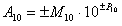
где M₁₀ – мантисса, десятичная правильная дробь, то есть 1<=M₁₀<2; P₁₀ – порядок, целое десятичное число.
При нормализации числа происходит своеобразное расчленение его на составляющие: знак числа, знак порядка, модуль мантиссы, модуль порядка. В ЭВМ арифметические устройства работают с нормализованными числами, но не с десятичными, а с двоичными.
Для вещественных чисел применяется формат с плавающей точкой. Значащие цифры числа находятся в поле мантиссы; поле порядка показывает фактическое положение двоичной запятой в разрядах мантиссы, а бит знака определяет знак числа. Мантисса, называемая также «дробью» F (Fraction), представлена в прямом коде.
Порядок E (Exponent) дается в смещенной форме: он равен истинному порядку, увеличенному на значение смещения. Значение смещения для трех разных форматов равно 127 (8 бит), 1023 (10 бит) и 16383 (15 бит). Задание порядка в форме со смещением упрощает операцию сравнения чисел с плавающей точкой, превращая ее в операцию сравнения целых чисел. Смещенный порядок называется также «характеристикой», ее можно считать целым положительным и беззнаковым числом.
Значение числа равно:
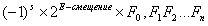
где F₀=1 и n для разных форматов равно 23, 52, или 63. Отметим наличие в мантиссе бита единиц F₀. В коротком и длинном вещественных форматах бит F₀ при передачах чисел и хранении их в памяти не фигурирует. Это так называемый скрытый или неявный бит, который в нормализованных числах содержит единицу. Числа во временном вещественном формате имеют явный бит F₀. Такой формат позволяет несколько повысить скорость выполнения операций. Числа во временном вещественном формате называются еще числами с расширенной точностью.
| Формат | Байт | Знак | Порядок | Мантисса | Смещение | Диапазон | Точность | Особенность |
|---|---|---|---|---|---|---|---|---|
| Короткое вещественное Single | 4 | 1 | 8 | 23 | 127₁₀ | 10⁻⁴²…10³⁸ | 7 – 8 цифр | неявный бит F₀ |
| Длинное вещественное Double | 8 | 1 | 11 | 52 | 1023₁₀ | 10⁻³²⁴…10³⁰⁸ | 15 – 16 цифр | неявный бит F₀ |
| Временное вещественное Extended | 10 | 1 | 15 | 64 | 16383₁₀ | 10⁻⁴⁹⁵¹…10⁴⁹³² | 19 – 20 цифр | неявный бит F₀ |
Алгоритм для получения представления действительного числа в памяти ЭВМ: 1) перевести модуль данного числа в двоичную систему счисления; 2) нормализовать двоичное число, т.е. записать в виде M × 2ᵖ, где M — мантисса (ее целая часть равна 1₍₂₎) и p — порядок, записанный в десятичной системе счисления; 3) прибавить к порядку смещение и перевести смещенный порядок в двоичную систему счисления; 4) учитывая знак заданного числа (0 — положительное; 1 — отрицательное), выписать его представление в памяти ЭВМ.
Запишем код числа −312,3125. Двоичная запись модуля этого числа имеет вид 100111000,0101. Имеем 100111000,0101 = 1,001110000101 × 2⁸. Получаем смещенный порядок 8 + 1023 = 1031. Далее имеем 1031₍₁₀₎ = 10000000111₍₂₎. Окончательно:
| 63 | 62..52 | 51..0 |
|---|---|---|
| 1 | 10000000111 | 0011100001010000000000000000000000000000000000000000 |
Очевидно, что более компактно полученный код стоит записать следующим образом: C073850000000000₍₁₆₎.
Пояснение к примеру 1
312 = 100111000₂ (256 + 32 + 16 + 8). Дробная 0,3125 — умножаем на 2: 0,625 → 0; 1,25 → 1; 0,5 → 0; 1,0 → 1 → 0,0101. Запятую двигаем влево на 8 позиций, чтобы перед ней осталась одна 1. В мантиссу пишем всё после запятой: 001110000101, остальное — нули. Склеиваем 1 | 10000000111 | 0011… и режем по 4 бита: 1100 0000 0111 0011 1000 0101 → C07385…
Пусть дан код 3FEC600000000000₍₁₆₎ или 0 | 01111111110 | 1100011000…0. Прежде всего замечаем, что это код положительного числа, поскольку в разряде с номером 63 записан ноль. Получим порядок этого числа: 01111111110₍₂₎ = 1022₍₁₀₎; 1022 − 1023 = −1. Число имеет вид 1,1100011 × 2⁻¹ или 0,11100011. Переводим в десятичную систему счисления получаем 0,88671875.
Пояснение к примеру 2
Обратный путь: hex → двоичный → режем на поля → порядок минус bias → дописываем «1,» к мантиссе → сдвигаем запятую. 0,11100011₂ = ½ + ¼ + ⅛ + 1/128 + 1/256 = 0,88671875.
Значение переменной A представлено в формате с плавающей точкой в шестнадцатеричной системе счисления A=430F0000₁₆. Тип переменной A – single. Найти десятичное значение числа A.
Решение и пояснение
430F0000 = 0100 0011 0000 1111 0000 0000 0000 0000 S = 0 (плюс) E = 1000 0110 = 134 → p = 134 − 127 = 7 M = 000 1111 0000… → 1,0001111 × 2⁷ = 10001111₂ = 128 + 8 + 4 + 2 + 1
Ответ: 143,0
Значение переменной A представлено в формате с плавающей точкой в шестнадцатеричной системе счисления A=C2440000₁₆. Тип переменной A – single. Найти десятичное значение числа A.
Решение и пояснение
C2440000 = 1100 0010 0100 0100 0000 … S = 1 (минус) E = 1000 0100 = 132 → p = 5 M = 100 0100 0… → 1,1000100 × 2⁵ = 110001₂ = 49
Ответ: −49,0
Значение переменной А=−12,125 в десятичной системе счисления. Представить значение переменной А в 16-й системе счисления в виде длинного вещественного числа.
Решение и пояснение
12,125 = 1100,001₂ = 1,100001 × 2³ E = 3 + 1023 = 1026 = 100 0000 0010 (11 бит) S = 1 1 | 10000000010 | 1000010000…0 1100 0000 0010 1000 0100 0000 … = C028400000000000h
Ответ: C028400000000000h
Выполните задания по вариантам. 1. Представить следующие числа в 16-й с.с. в виде короткого вещественного; 2. Представить следующие числа в 16-й с.с. в виде длинного вещественного.
| Вариант | 1. Короткое (single) | 2. Длинное (double) |
|---|---|---|
| 1 | a) −12.365 b) 0.0123 c) −10.698 | a) 302.125 b) −0.001 c) −100.001 |
| 2 | a) −29.0065 b) −0.0301 c) 10.695 | a) 128.125 b) 0.0021 c) −512.125 |
| 3 | a) −29.0135 b) −0.0221 c) 16.065 | a) −28.125 b) −0.0021 c) 52.025 |
| 4 | a) 12.003 b) 0.001 c) −22.99 | a) 20.125 b) 0.0125 c) 20.02 |
| 5 | a) −120.01 b) 0.00001 c) 2.001 | a) 50.05 b) −25.025 c) 12.003 |
| 6 | a) −101.001 b) 0.0005 c) −20.9 | a) 51.001 b) −128.05 c) −120.1 |
| 7 | a) 111.1 b) −0.0001 c) −9.9 | a) 1024.1 b) −0.001 c) −10.166 |
| 8 | a) −0.021 b) 1.01 c) −3.001 | a) −10.12 b) −0.125 c) 550.66 |
| 9 | a) 12.225 b) −0.09 c) 125.125 | a) 10.12 b) −0.009 c) 513.0025 |
| 10 | a) 1.0225 b) −0.129 c) 0.005 | a) 110.12 b) −10.009 c) −513.0025 |
Как решать + конвертер с шагами
Дробную часть переводим умножением на 2 (целые части сверху вниз). У таких чисел, как 12,365, дробь бесконечная: берём столько бит, сколько влезает в мантиссу (23 для single, 52 для double), и округляем. У чисел меньше 1 порядок отрицательный: 0,0123 = 1,… × 2⁻⁷. Вбей своё число в конвертер — он покажет каждый шаг и итоговый hex.
Лаб. занятие: 21,625₁₀ → нормализованная двоичная форма 1.M×2^E → Ebiased = E + 127 → 32-битное представление (S, E, M). СРОП: структура 32-битного формата (S, E, M — назначение и число битов); нормализация и неявный старший бит; Bias для single и диапазон фактической экспоненты. СРО (УМКД): структура 32- и 64-битных форматов; 13,625; −7,25 и 0,1 в single; почему некоторые десятичные дроби нельзя представить точно; NaN и Infinity.
Решение и пояснение
21 = 10101₂, 0,625 = 0,101₂ → 10101,101₂ = 1,0101101 × 2⁴ E = 4 + 127 = 131 = 1000 0011, S = 0, M = 0101101 000… 0 | 1000 0011 | 0101 1010 0000 0000 0000 000 = 41AD0000h
| Число | Двоичное | Нормализация | E | Код |
|---|---|---|---|---|
| 13,625 | 1101,101 | 1,101101 × 2³ | 130 | 415A0000 |
| −7,25 | 111,01 | 1,1101 × 2² | 129 | C0E80000 |
| 0,1 | 0,000110011… | 1,1001100… × 2⁻⁴ | 123 | 3DCCCCCD |
Single: S — 1 бит, E — 8 бит, M — 23 бита; bias 127; фактический порядок −126…+127. 0,1 — бесконечная дробь, поэтому хранится приближённо. E = все единицы: M = 0 → ±∞, M ≠ 0 → NaN.
Тесты темы 2
Логические основы компьютеров: логические элементы, таблицы истинности, условные обозначения, булевы выражения
📖Лекция по темеТеория: оригинал + мои дополнения и калькуляторы. Сначала можно сразу делать лабу ниже.
Логические операции и электронные вентили
Полный курс: Теория, Таблицы истинности, Приоритет операций, Практика и Тесты
Что такое логический вентиль?
- Определение: Вентиль (логический элемент) — это часть электронной схемы, реализующая определенную логическую операцию над входными сигналами.
- Сигналы: В цифровой электронике используются два уровня напряжения: истина (true / 1) и ложь (false / 0).
- Назначение: Вентили образуют фундамент микропроцессоров, устройств памяти и вычислительных систем.
Классификация логических вентилей
- Базовые вентили: И (AND), ИЛИ (OR), НЕ (NOT)
- Составные вентили: И-НЕ (NAND), ИЛИ-НЕ (NOR)
- Специальные вентили: Исключающее ИЛИ (XOR)
- Логические функции: Эквивалентность (≡), Импликация (→)
Базовые логические операции: И, ИЛИ, НЕ
Конъюнкция (И / AND). Обозначения: ∧, ·, AND. Выражение: Y = A · B. Смысл: Выход равен 1 только тогда, когда ВСЕ входы равны 1. A=1, B=1 ⇒ Y=1. В остальных случаях ⇒ Y=0.
Дизъюнкция (ИЛИ / OR). Обозначения: ∨, +, OR. Выражение: Y = A + B. Смысл: Выход равен 1, если ХОТЯ БЫ ОДИН вход равен 1. A=0, B=0 ⇒ Y=0. В остальных случаях ⇒ Y=1.
Инверсия (НЕ / NOT). Обозначения: ¬A, Ā, A'. Выражение: Y = Ā. Смысл: Одновходовой вентиль, изменяет значение на противоположное. A=0 ⇒ Y=1, A=1 ⇒ Y=0.
Составные вентили: И-НЕ, ИЛИ-НЕ и Исключающее ИЛИ
И-НЕ (NAND / Штрих Шеффера). Комбинация элементов И и НЕ: Y = ¬(A · B). Выход равен 0 только тогда, когда оба входа равны 1.
ИЛИ-НЕ (NOR / Стрелка Пирса). Комбинация элементов ИЛИ и НЕ: Y = ¬(A + B). Выход равен 1 только тогда, когда оба входа равны 0.
Исключающее ИЛИ (XOR / Сложение по mod 2). Обозначение: A ⊕ B. Выход равен 1, если на входах НЕЧЕТНОЕ количество единиц (для 2 входов — когда входы различны).
Логические операции Эквивалентность и Импликация
Эквивалентность (A ≡ B, A ~ B). Высказывание истинно (1), когда оба исходных высказывания имеют одинаковую истинность (оба 0 или оба 1). Таблица истинности: 0 ≡ 0 → 1; 0 ≡ 1 → 0; 1 ≡ 0 → 0; 1 ≡ 1 → 1.
Импликация (A → B, A ⇒ B). Логическое следование «если A, то B». Ложно (0) только в одном случае: когда из истины следует ложь (1 → 0). Таблица истинности: 0 → 0 → 1; 0 → 1 → 1; 1 → 0 → 0 (Исключение!); 1 → 1 → 1.
Приоритет (старшинство) логических операций
- Скобки ( ) — выражения в скобках имеют высший приоритет и выполняются в первую очередь.
- Инверсия (НЕ / ¬ / Ā) — отрицание выполняется первым среди логических действий.
- Конъюнкция (И / · / &) — логическое умножение имеет более высокий приоритет, чем сложение.
- Дизъюнкция (ИЛИ / + / ∨) — логическое сложение выполняется после умножения.
- Импликация & Эквивалентность — следование и равносильность выполняются в последнюю очередь.
Шпаргалка: Сводная таблица истинности логических вентилей
| A | B | И (A·B) | ИЛИ (A+B) | НЕ (Ā) | И-НЕ | ИЛИ-НЕ | XOR | A → B |
|---|---|---|---|---|---|---|---|---|
| 0 | 0 | 0 | 0 | 1 | 1 | 1 | 0 | 1 |
| 0 | 1 | 0 | 1 | 1 | 1 | 0 | 1 | 1 |
| 1 | 0 | 0 | 1 | 0 | 1 | 0 | 1 | 0 |
| 1 | 1 | 1 | 1 | 0 | 0 | 0 | 0 | 1 |
* Примечание: 1 = Истина (True / Высокий уровень), 0 = Ложь (False / Низкий уровень)
Практическое задание: Построение логической схемы (Пример 1)
Алгоритм построения схемы: 1. Расставить порядок выполнения операций по приоритету. 2. Определить количество входов (переменных) схемы. 3. Поставить вентили для операций высшего приоритета ближе к входам. 4. Соединить выходы промежуточных вентилей со входами последующих.
Задача 1: Y = Ā · B + C. Порядок действий: 1) Инверсия Ā (Вентиль НЕ) 2) Конъюнкция Ā · B (Вентиль И) 3) Дизъюнкция (Ā · B) + C (Вентиль ИЛИ). Структура схемы: Вход A подключен к инвертору NOT. Выход NOT и вход B подаются на 2-входовой AND. Выход AND и вход C подаются на 2-входовой OR. Выход OR дает результат Y.
Практическое задание: Построение схемы (Пример 2)
Задача 2: Y = ¬(A + B) · (C + D). 1. Вычисление первой скобки (A + B): сигналы A и B подаются на вентиль ИЛИ (OR). 2. Отрицание первой скобки ¬(A + B): выход первого вентиля ИЛИ подается на вентиль НЕ (NOT) [или сразу используется вентиль ИЛИ-НЕ / NOR]. 3. Вычисление второй скобки (C + D): параллельно сигналы C и D подаются на второй вентиль ИЛИ (OR). 4. Итоговое умножение: выходы ¬(A + B) и (C + D) подаются на 2-входовой вентиль И (AND), формируя выход Y.
Задания для самостоятельного решения: Построение схем
Задание 1 (Базовый уровень). Постройте логическую схему по выражению: Y = A · B + C. Подсказка: Вентили: И (2 входа), ИЛИ (2 входа).
Задание 2 (Средний уровень). Составьте схему и порядок действий для функции: Y = A + Ā · C. Подсказка: Вентили: НЕ (1 вход), И (2 входа), ИЛИ (2 входа).
Задание 3 (Повышенный уровень). Постройте схему с комбинацией составных элементов: Y = ¬(A · B) ⊕ (C + D). Подсказка: Вентили: И-НЕ (или И+НЕ), ИЛИ, XOR.
Лабораторная работа №3. Работа с Electronics Workbench. Проектирование простейших логических схем
Цель лабораторной работы – изучить основные компоненты системы Electronics Workbench, а также методы и приемы создания логических схем на основе готовых компонентов.
Компоненты Electronics Workbench. После запуска EWB32 на экране появляются строка меню и панель компонентов. Панель компонентов состоит из пиктограмм полей компонентов, а поле компонентов - из условных изображений компонентов. Щелчком мыши на пиктограмме компонентов открывается поле соответствующей этой пиктограмме. Ниже приведены некоторые элементы из полей компонентов:
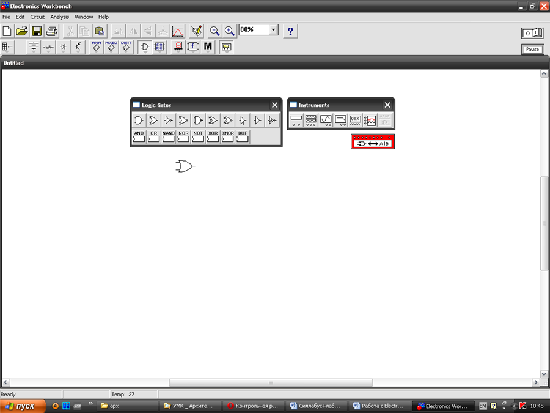
C помощью этих двух панелек можно создавать любые логические схемы. Для этого нужно перетащить необходимые элементы на рабочую область и соединить их.
Например, дано булево выражение: y =
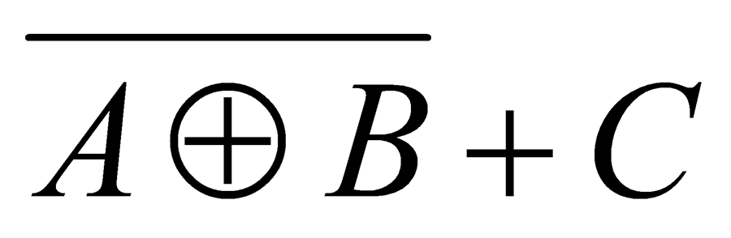
Из выражения видно, что в схеме 3 входа: A, B и C. Поставим на рабочую поверхность 3 коннектора (точки) из панели Basic:
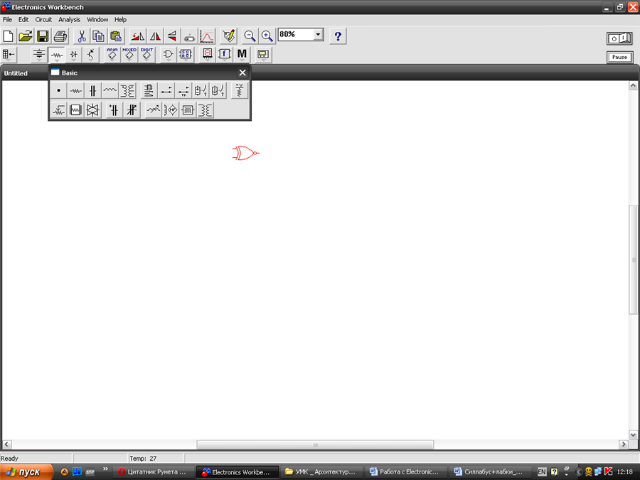
Для каждого компонента можно настроить свойства (в контекстном меню компонента выбрать Component properties). Например, дать названия входам (присвоить какое-нибудь значение в поле Label): первому коннектору дайте имя А, второму В, третьему – С.
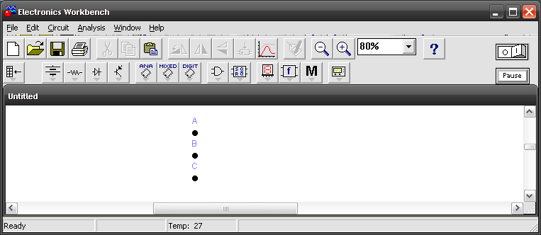
Для того, чтобы построить данную логическую схему нам понадобятся компоненты: исключающее ИЛИ-НЕ и ИЛИ.
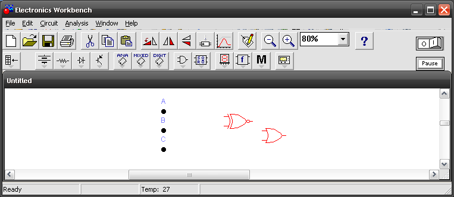
Входы А и В подводятся к логическому компоненту исключающее ИЛИ-НЕ, а выход искл.ИЛИ-НЕ вместе с входом С подводится к компоненту ИЛИ (соединение нужных элементов производится перетягиванием).
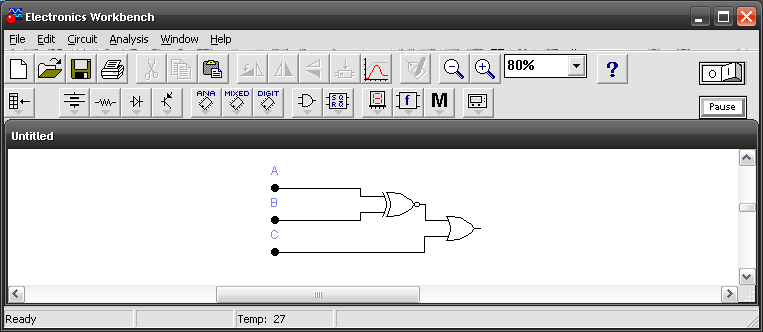
Система Electronics Workbench содержит набор инструментов для работы с готовой логической схемой, одним из которых является Логический преобразователь (вкладка Instruments -> Logic Converter). Добавьте его на рабочую поверхность, подсоедините входы и выход и сделайте двойной щелчок по компоненту.
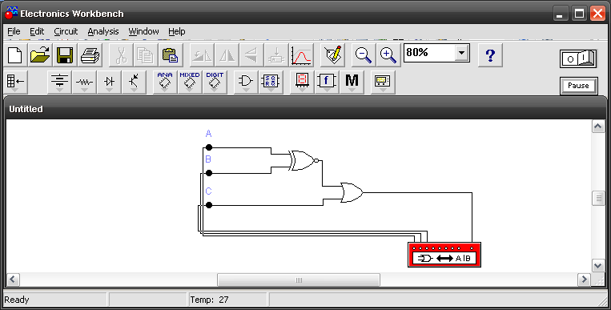
Откроется окно компонента:
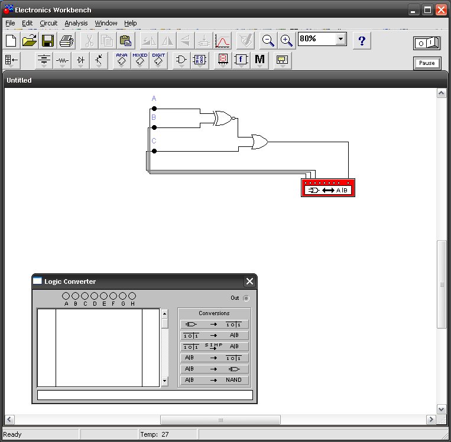
Сверху расположены кнопки, щелкая по которым можно подключить нужное количество входов (в нашем случае – это 3 входа A, B, C). Справа расположены кнопки работы со схемой. Первая кнопка по построенной логической схеме строит таблицу истинности.
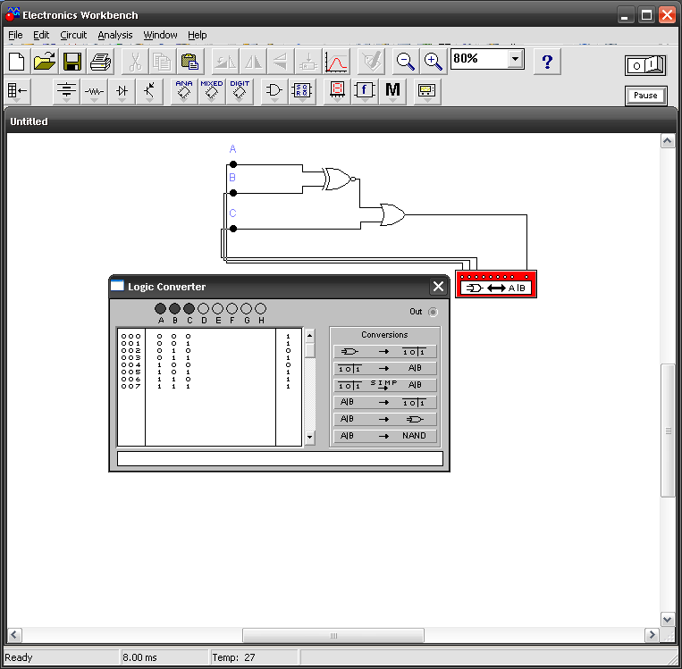
Самостоятельно разберитесь, для чего нужны остальные кнопки.
Пояснение к примеру: схема в окне EWB, по шагам, с Logic Converter
Ниже — та же схема в окне, похожем на EWB. Нажми «Как собрать по шагам»: детали появляются по очереди, а нужная панель (Basic, Logic Gates, Indicators, Instruments) подсвечивается жёлтым — так же ищешь её в программе. В режиме «Готовая схема» щёлкай переключатели A, B, C: справа окно Logic Converter с таблицей истинности, выражением (кнопка A|B) и упрощённым (SIMP).
Остальные кнопки Logic Converter (то самое «разберитесь самостоятельно»), сверху вниз: 1) схема → таблица истинности; 2) таблица → выражение (СДНФ, «A|B»); 3) таблица → упрощённое выражение (SIMP); 4) выражение → таблица; 5) выражение → схема на любых вентилях; 6) выражение → схема только на NAND.
Таблица: выход 0 только там, где A ≠ B и C = 0 (строки 010 и 100).
1. В программе Electronics WorkBench постройте следующие логические схемы, а также таблицы истинности для них:
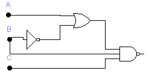
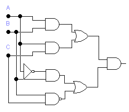
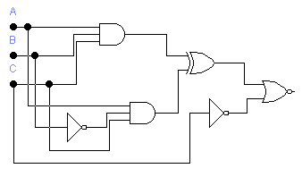
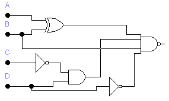
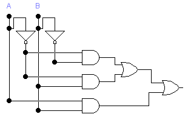
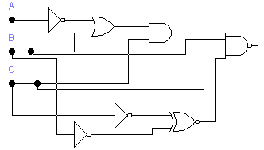
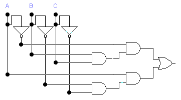
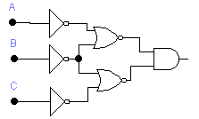
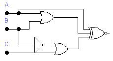
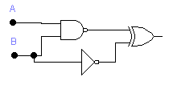
Решение и пояснение: как читать схему + схемы 1, 5, 8, 9, 10 в EWB
Как прочитать схему в формулу: идём слева направо; у каждого вентиля записываем, что на его входах, и подписываем выход формулой. Кружок на выходе — «НЕ»: AND с кружком = NAND, OR — NOR, XOR — XNOR. Точка на пересечении — соединение; без точки провода просто пересекаются.
| № | Как читается | Упрощение |
|---|---|---|
| 1 | (A + B̄) · B · C | A·B·C (B·B̄ = 0) |
| 5 | ĀB̄ + ĀB + AB | Ā + B |
| 8 | ¬(Ā + B̄) · ¬(B̄ + C̄) | A·B·C |
| 9 | ¬(A ⊕ (A + B) ⊕ (B + C̄)) | — смотри таблицу |
| 10 | ¬(A·B) ⊕ B̄ | Ā·B |
Выбери номер в окне — схема перестроится, Logic Converter даст таблицу. В «Как собрать по шагам» — порядок действий в EWB.
Схемы 2, 3, 4, 6, 7 крупнее, по рисунку читаются неоднозначно — читай их по одному вентилю тем же способом и проверяй через Logic Converter или калькулятор ниже. Прочитаешь — впиши формулу сюда через редактор.
Лекция: Задание 1. Y = A · B + C. Задание 2. Y = A + Ā · C. Задание 3. Y = ¬(A · B) ⊕ (C + D). Силабус: упростите a) F=(A′⋅B)+(A′⋅B′); b) F=(A+B)′+(A′⋅B); c) F=(A⋅B′)+(A⋅B). Схема с тремя входами A, B, C: выход Q = 1 тогда и только тогда, когда как минимум два из трёх входов равны 1 — таблица, исходное выражение, упрощение, схемы до и после. Таблицы для F(A,B)=A′⋅B; F(A,B)=(A+B)′; F(A,B,C)=(A⋅B)+C′. Выражение по таблице A B → Q: 00→0, 01→1, 10→1, 11→0.
Решение и пояснение + схемы в EWB
- a) A′(B + B′) = A′; b) A′B′ + A′B = A′; c) A. Таблица 0,1,1,0 — это XOR: Q = A′B + AB′.
- Функция большинства: СДНФ ĀBC + AB̄C + ABC̄ + ABC → Q = AB + BC + AC (3 AND + 1 OR вместо 4 AND на 3 входа и 3 NOT).
- Задание 2 лекции: A + ĀC = A + C (поглощение) — хватит одного OR.
🧮 Калькулятор логики (таблица, СДНФ, СКНФ, минимальная форма) и вентили вживую
Тесты темы 3
Формы логических выражений: ДНФ, КНФ. Анализ логических схем. Компактификация булевых выражений. Карта Карно
📖Лекция по темеТеория: оригинал + мои дополнения и калькуляторы. Сначала можно сразу делать лабу ниже.
ДНФ, КНФ и карты Карно
ДНФ (дизъюнктивная нормальная форма) и КНФ (конъюнктивная нормальная форма) — это два базовых процесса записи логических функций, которые используются для проектирования и оптимизации цифровых электронных схем. Они позволяют превратить математическую логику в реальное твердое устройство, состоящее из логических элементов (вентилей).
Ниже подробно рассмотрены способы применения ДНФ и КНФ при создании схем.
1. ДНФ (Дизъюнктивная нормальная форма)
ДНФ представляет собой существование (ИЛИ-НЕ-И). Сначала логические переменные (или их отрицания) объединяются операцией И (конъюнкция), а затем полученные группы объединяются операцией ИЛИ (дизъюнкция).
Как строится схема: На первом уровне стоят элементы И (И), которые собирают промышленные сигналы. На втором уровне выходы всех элементов «И» подключаются к общему единому элементу ИЛИ (ИЛИ).
При применении: ДНФ строится по таблице истинностей по тем строкам, где выходная функция равна 1. Это удобно, когда в таблице истинность единицы меньше, чем нулей.
2. КНФ (Конъюнктивная нормальная форма)
КНФ представляет собой произведение суммы (И-НЕ-ИЛИ). Сначала переменные объединяются операцией ИЛИ, а затем эти группы перемножаются элементом И.
Как строится схема: На первом уровне стоят элементы ИЛИ (ИЛИ). На втором уровне их выходы объединяются элементом И (И).
При применении: КНФ строится по таблице истинности по тем строкам, где выходная функция равна 0. Это выгодно использовать, если в таблице истинности мало нулей и много единиц.
Сравнение ДНФ и КНФ в схемотехнике
| Критерий | ДНФ (Сумма проявления) | КНФ (Произведение суммы) |
|---|---|---|
| Базовая структура | Начальные элементы И, на выходе — ИЛИ | Первоначально элементы ИЛИ, на выходе — И |
| Ориентация | Настроена на условия поиска, когда схема выдает 1 | Настроена на условия поиска, когда схема выдает 0 |
| Выгода сборка | Экономичнее, если в таблице истинность малости | Экономичнее, если в таблице истинности мало нулей |
Этапы составления схем с помощью ДНФ/КНФ
- Составление таблицы истинности: Определяется, как схема должна реагировать (выдавать 0 или 1) для любых входных сигналов.
- Запись формулы: Вы преобразуете ДНФ (по единицам) или КНФ (по нулям) и записываете первичную логическую функцию.
- Минимизация (Оптимизация): Прямая формула из таблицы обычно состоит из остатков (содержит слишком много элементов). Их упрощают с помощью карты Карно или солнечно-булевой алгебры. Это главный шаг для определения количества транзисторов в чипе.
- Схема синтеза: Полученная минимальная форма (МДНФ или МКНФ) переводится в схему из логических вентилей.
Упрощение при помощи карт Карно
Карты Карно показаны на рисунке 1.
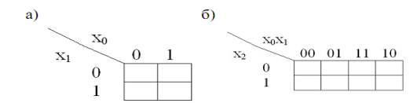
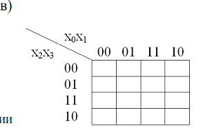
Рисунок 1. Карты Карно, используемые для упрощения (минимизации) булевых выражений: а) с двумя входами; б) с тремя входами; в) с четырьмя входами; г) с пятью входами.
Например, давайте минимизируем функцию
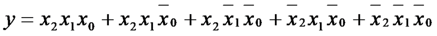
Поскольку мы минимизируем входные переменные в функции 3, мы используем карту Карно из рисунка 1b), изображающую ее для этой функции в следующей форме (рисунок 2):
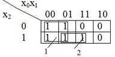
Каждый член функции представляет собой минтерм — конъюнкцию входных переменных, которые преобразуют функцию в 1. Таким образом, на карте Карно 5 единиц. Если переменная в любом из членов функции имеет прямое значение, то ей присваивается значение 1, если обратное значение равно 0. Для этой функции значения минтермов показаны в таблице 2:


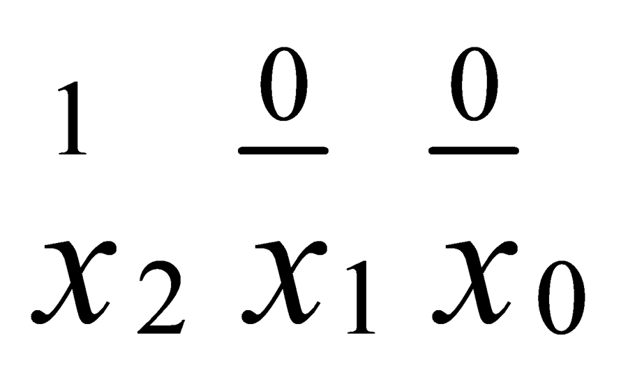


Определение минимизируемого функционального выражения по карте Карно осуществляется в 2 этапа: объединение минтермов на карте в группы; чтение минимизированного функционального выражения из карты.
При группировке минтермов в группу необходимо соблюдать следующие правила:
- Группа минтермов должна представлять собой правильный прямоугольник;
- Каждая группа должна содержать максимально возможное количество минтермов, но их число должно быть степенью двойки (1, 2, 4, 8 и т. д.); любой минтерм может быть включен в различные группы;
- Количество групп на карте должно быть минимальным.
При чтении минимального выражения функции из карты Карно мы имеем в виду следующее:
- В ней столько же терминов, сколько групп на карте Карно;
- При записи группового выражения учитываются только те переменные, которые повторяются в соседних ячейках. Если повторяющаяся переменная имеет значение 0, мы записываем её в виде алгебраического выражения с инверсией, если 1 — в прямой форме.
Из рисунка 2 видно, что в первой группе переменная повторяется x̄₀, во второй группе — переменные x₁ и x₂. Следовательно, минимизированное выражение выглядит следующим образом: y = x̄₀ + x₁x₂.
Лаба. Синтез комбинационных логических схем на основе таблиц истинности и логических выражений в EWB
Цель лабораторной работы — изучение основных методов и приемов создания логических схем на основе таблиц истинности и булевых выражений.
Построение логических схем с использованием этих булевых выражений. Поскольку значения логических функций могут быть только нулями и единицами, любые логические функции могут быть представлены в качестве аргументов для других, более сложных функций.
Правило построения логических цепей: Определите количество логических переменных; Определите количество основных логических операций и их порядок; Для каждой логической операции нарисуйте соответствующий вентиль и соедините вентили в порядке выполнения логических операций.
Допустим, нам дано логическое выражение:
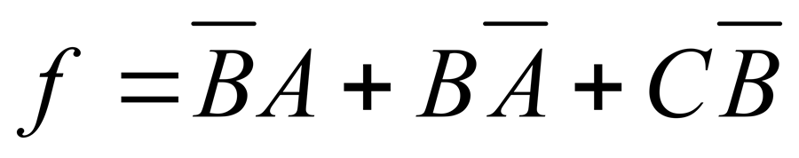
Первый этап: выполняется логическое сложение (операция логического ИЛИ) с учетом входных данных (входов) функции:
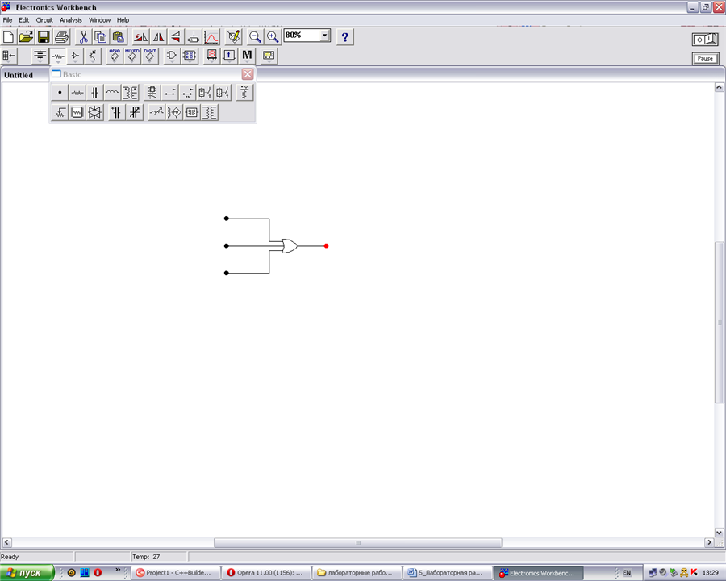
Второй этап: логические элементы И соединяются с входами элемента ИЛИ, входными переменными которого уже являются A, B, C и их инверсии:
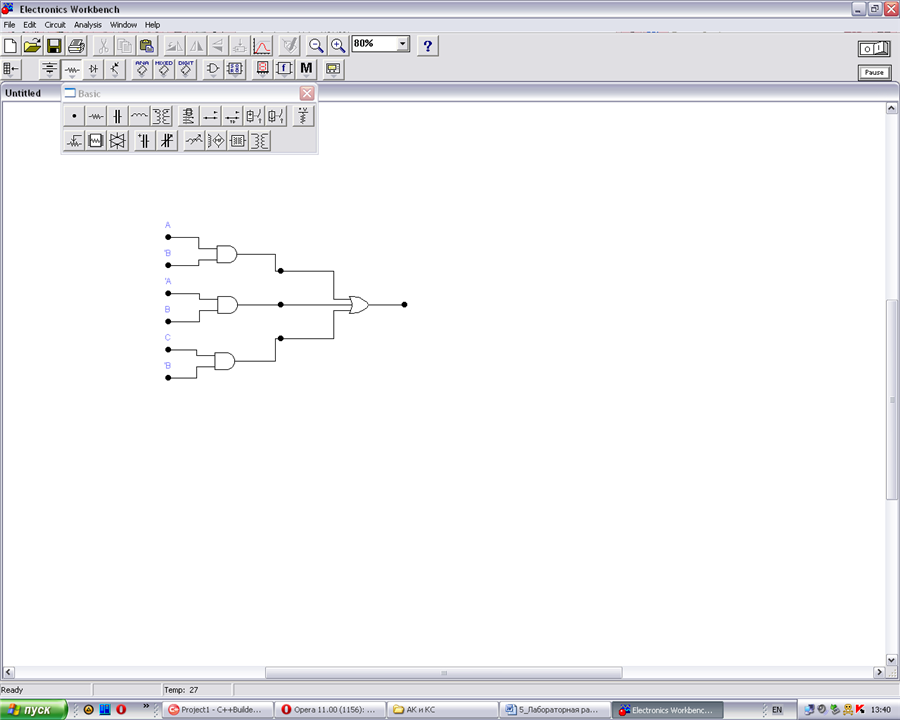
Третий этап: для получения инверсий «А» и «В» на соответствующих входах устанавливаются инверторы:
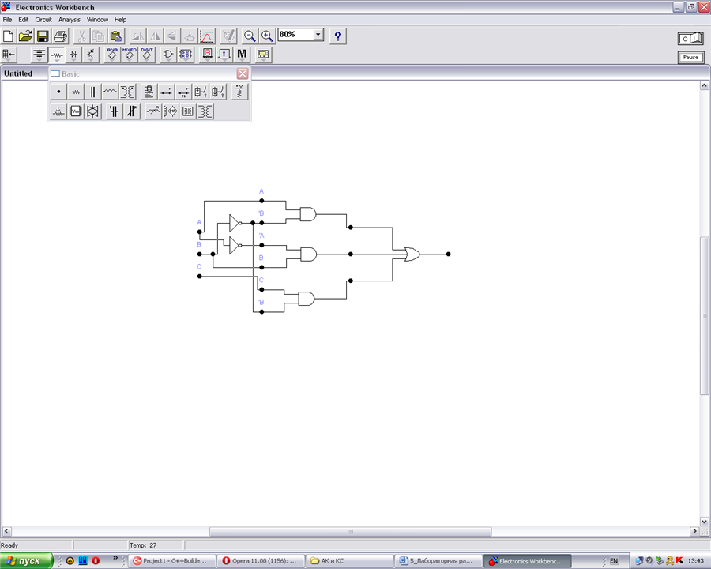
Пояснение к примеру 1 + схема в окне EWB
3 входа, 2 инвертора (Ā и B̄), 3 элемента И на 2 входа, 1 ИЛИ на 3 входа — как на картинках лабы. Упростить можно: B̄A + BĀ = A ⊕ B, значит f = (A ⊕ B) + B̄C.
Пусть дана таблица истинности для некоторой логической функции f, принимающей два входных сигнала: X Y → F: 00 → 1; 01 → 0; 10 → 1; 11 → 0. Необходимо построить логическую (булевую) функцию для заданной таблицы истинности.
Правила: Выделите в таблице истинности те строки, в которых значение функции равно 1; Для каждой строки запишите формулу в виде конъюнкции входных аргументов: если значение любого аргумента в соответствующей строке таблицы равно 0, то возьмите этот аргумент с отрицанием; Запишите требуемую функцию в виде дизъюнкции всех формул из шага 2.
Решение: В первой и третьей строках таблицы истинности значение функции равно 1. Для первой строки —
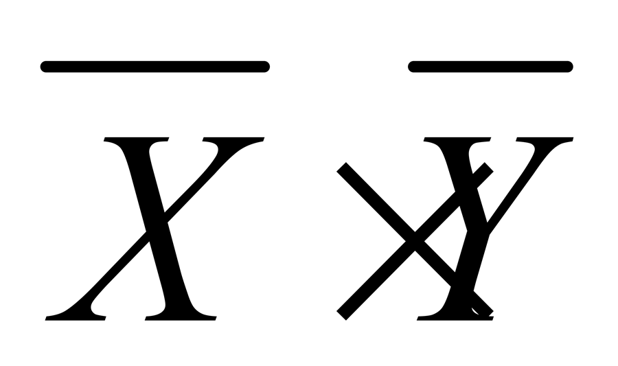
, для второй строки —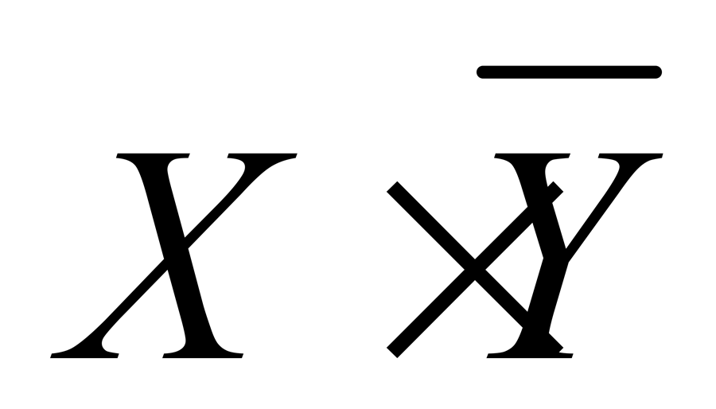
. Поскольку имеется две линии, мы получаем дизъюнкцию двух элементов: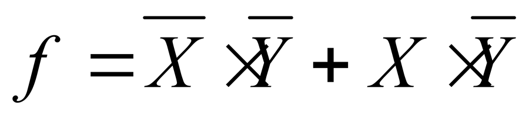
Пояснение к примеру 2
f = X̄Ȳ + XȲ = Ȳ(X̄ + X) = Ȳ — функция вообще не зависит от X, хватит одного инвертора. Так всегда стоит проверять результат картой Карно (ниже) — часто СДНФ сильно упрощается.
Используя возможности программы Electronics WorkBench, напишите логическую схему и таблицу истинности для следующих булевых выражений:
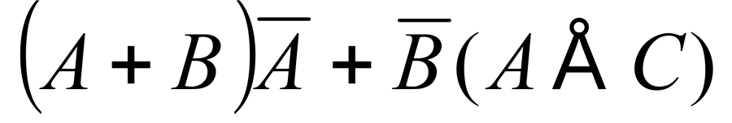
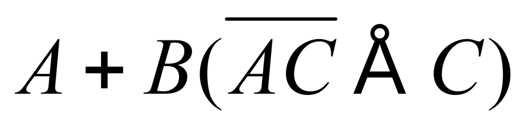
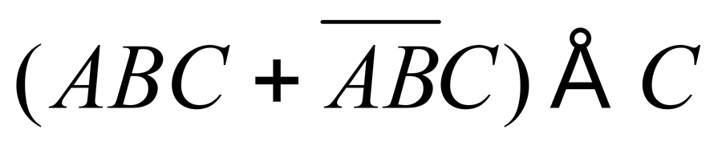
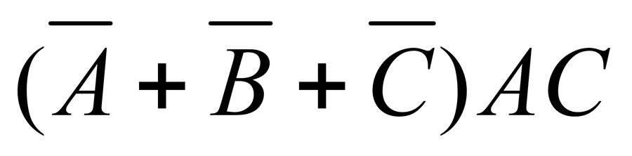
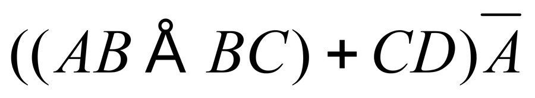
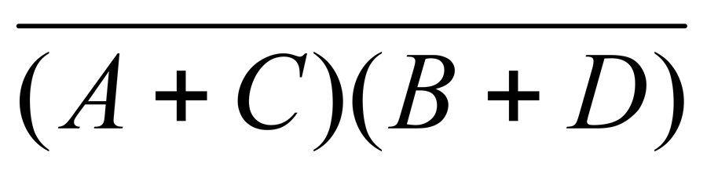
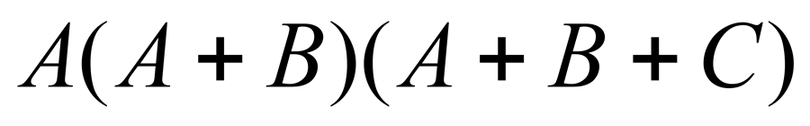
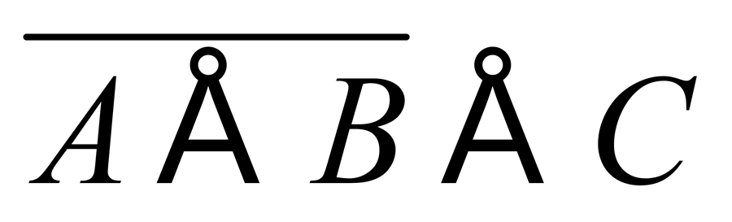
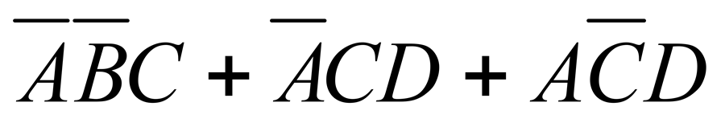
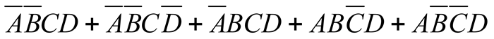
Решение и пояснение: все 10 схем в окне EWB
| № | Выражение | Упрощение (ответ) |
|---|---|---|
| 1 | (A+B)·Ā + B̄·(A⊕C) | ĀB + ĀC + AB̄C̄ |
| 2 | A + B·(¬(AC) ⊕ C) | при A=0: ¬0 = 1, 1⊕C = C̄ → A + BC̄ |
| 3 | (ABC + ¬(ABC)) ⊕ C | X + X̄ = 1 → 1⊕C = C̄ |
| 4 | (Ā+B̄+C̄)·A·C | AB̄C |
| 5 | ((AB ⊕ BC) + CD)·Ā | Ā(BC + CD) = ĀBC + ĀCD |
| 6 | ¬((A+C)(B+D)) | Де Морган: ĀC̄ + B̄D̄ |
| 7 | A(A+B)(A+B+C) | поглощение: A |
| 8 | ¬(A⊕B) ⊕ C | ¬(A⊕B⊕C) — 1 при чётном числе единиц |
| 9 | ĀB̄C + ĀCD + AC̄D | уже минимальна |
| 10 | ĀB̄CD + ĀB̄CD̄ + ĀBCD + ABC̄D + AB̄C̄D | ĀB̄C + ĀCD + AC̄D — та же функция, что №9 |
На основе данных из таблиц истинности постройте логические схемы (x — входы, F — варианты выходных сигналов (функции)):
| x1 | x2 | x3 | F1 | F2 | F3 | F4 | F5 | F6 | F7 | F8 | F9 |
|---|---|---|---|---|---|---|---|---|---|---|---|
| 0 | 0 | 0 | 0 | 1 | 0 | 1 | 1 | 1 | 1 | 0 | 0 |
| 0 | 0 | 1 | 0 | 0 | 0 | 0 | 1 | 1 | 1 | 0 | 0 |
| 0 | 1 | 0 | 1 | 0 | 0 | 0 | 1 | 0 | 0 | 0 | 0 |
| 0 | 1 | 1 | 1 | 0 | 0 | 0 | 0 | 0 | 0 | 0 | 0 |
| 1 | 0 | 0 | 0 | 1 | 1 | 1 | 0 | 0 | 1 | 0 | 1 |
| 1 | 0 | 1 | 0 | 0 | 1 | 0 | 0 | 0 | 0 | 1 | 1 |
| 1 | 1 | 0 | 1 | 0 | 1 | 0 | 0 | 0 | 0 | 0 | 1 |
| 1 | 1 | 1 | 0 | 1 | 0 | 0 | 0 | 0 | 0 | 1 | 1 |
| x1 | x2 | F10 | F11 | F13 |
|---|---|---|---|---|
| 0 | 0 | 1 | 0 | 1 |
| 0 | 1 | 1 | 0 | 0 |
| 1 | 0 | 1 | 1 | 0 |
| 1 | 1 | 0 | 1 | 1 |
Решение и пояснение: метод + карта Карно со всеми F
- Берём столбец функции, выписываем строки с F = 1.
- Каждую строку превращаем в минтерм (0 → переменная с чертой).
- Складываем минтермы (ИЛИ) — это СДНФ.
- Упрощаем картой Карно: в карте ниже выбери «Лаба синтез · 3 перем.» и номер функции.
- Минимальную формулу собираем в EWB, как в задании 1.
Готовые 2-переменные: F10 = x̄1 + x̄2 (NAND), F11 = x1, F13 = x̄1x̄2 + x1x2 (XNOR).
Лабораторная работа №5. Упрощение логических выражений с помощью карт Карно
Цель лабораторной работы — изучить основные приёмы и методы упрощения логических схем с помощью карт Карно.
При синтезе комбинационных логических схем разработчик выполняет несколько основных действий: запись условий функционирования схемы (словесно, с помощью таблиц истинности или алгебраического выражения, то есть так называемого булева выражения); минимизацию булева выражения; составление структурной схемы моделируемой логической схемы.
Минимизация булева выражения, описывающего условие функционирования логической схемы, может выполняться одним из следующих способов: 1. Алгебраическим; 2. С помощью карт Карно. Для реализации первого метода используется таблица соотношений, представленная в таблице 1.
Таблица 1. Основные аксиомы и законы логической алгебры для функций AND, OR, NOT (перестановочность, сочетательность, распределительность, поглощение, склеивание, двойственность):
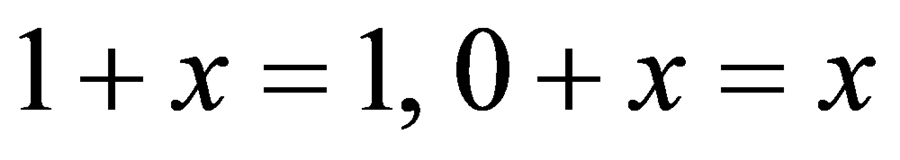
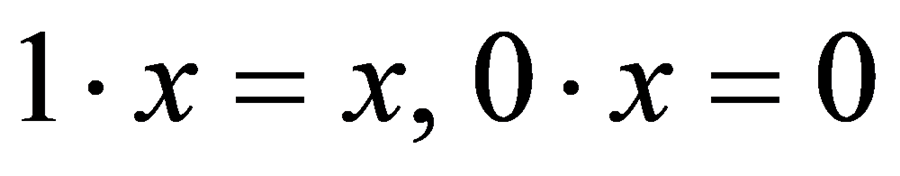
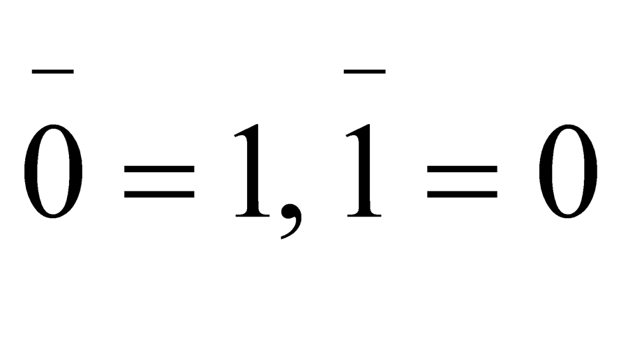
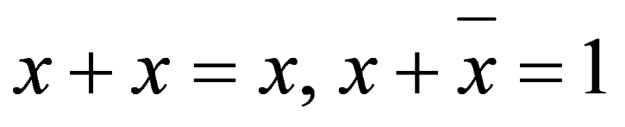
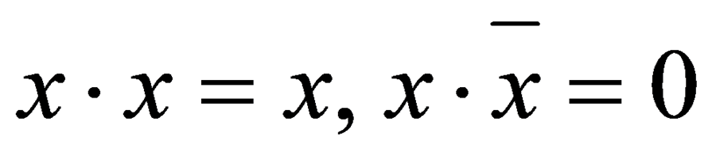
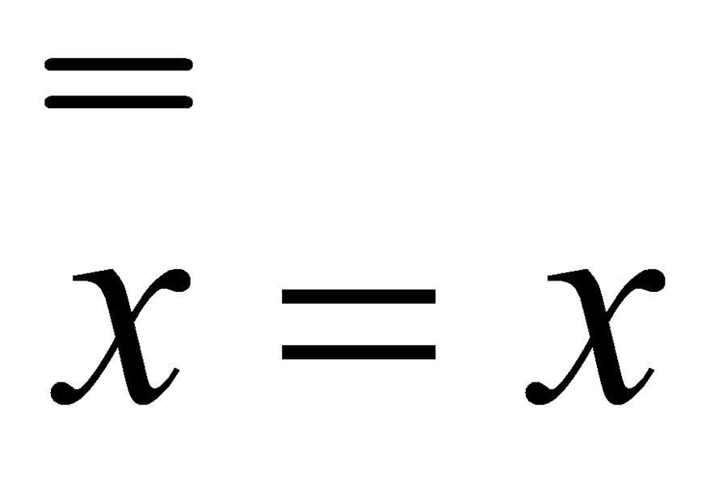
Для реализации второго метода необходимо использовать одну из карт Карно, показанных на рисунке 1.
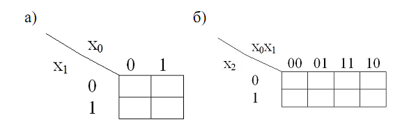
При группировке минтермов необходимо соблюдать следующие правила: 1. группа минтермов должна иметь форму правильного прямоугольника; 2. каждая группа должна содержать максимально возможное количество минтермов, причём их число должно быть степенью числа 2 (1, 2, 4, 8 и т. д.); один и тот же минтерм может входить в несколько групп; 3. количество групп на карте должно быть минимальным. При чтении: 1. количество членов в выражении равно количеству групп; 2. учитываются только те переменные, которые повторяются в соседних ячейках: 0 — в инверсном виде, 1 — в прямом.
Например, минимизируем функцию Поскольку в функции 3 минимизируются входные переменные, используем карту Карно с рисунка 1b), представив её для данной функции в следующем виде (рисунок 2):
Каждый член функции представляет собой минтерм. Следовательно, на карте Карно имеется 5 единиц. Если переменная в каком-либо члене функции имеет прямое значение, ей присваивается значение 1, если инверсное значение — 0. Значения минтермов (таблица 2):

Из рисунка 2 видно, что в первой группе переменная повторяется x̄₀, во второй группе повторяются переменные x₁ и x₂. Поэтому минимизированное выражение имеет вид: y = x̄₀ + x₁x₂.
Самостоятельно проверьте правильность упрощения логического выражения: в программе Electronics WorkBench соберите логические схемы для исходного выражения и для упрощённого выражения, полученного с помощью карты Карно, а также составьте для них таблицы истинности и сравните их. В результате таблицы истинности должны быть идентичными.
Пояснение к примеру + обе схемы в EWB (сравни таблицы)
Пять минтермов: x̄₀x̄₁x̄₂, x̄₀x₁x̄₂, x̄₀x̄₁x₂, x̄₀x₁x₂, x₀x₁x₂ → клетки 000, 010, 001, 011, 111 (столбцы x₀x₁ = 00, 01, 11, 10). Группа 1 — 4 клетки в столбцах 00 и 01: не меняется только x₀ = 0 → x̄₀. Группа 2 — клетки 01 и 11 в строке x₂ = 1: x₁ = 1 и x₂ = 1 → x₁x₂.
Переключай схемы в окне: таблицы в Logic Converter совпадают — значит, упрощение верное (это и есть «самостоятельная проверка» из лабы).
Упростите логическое выражение с помощью карты Карно с четырьмя входами. Постройте логические схемы и таблицы истинности для выражений и убедитесь в правильности выполненного упрощения.
Как решать
Перепиши каждый член как 4 цифры x₀x₁x₂x₃ (черта = 0, без черты = 1), натыкай эти клетки в карте Карно (задание 2 лабы синтеза выше, «4 переменных», имена x0…x3) — она сама сгруппирует и выдаст ответ. Пример из силабуса: Σ(1,3,5,7,10,11,14,15) → ĀD + AC. Потом собери исходную и упрощённую схемы в EWB и сравни таблицы Logic Converter-ом.
Упростите логическое выражение с помощью карты Карно с тремя входами. Постройте логические схемы и таблицы истинности для выражений и убедитесь в правильности выполненного упрощения.
Решение и пояснение + схемы до/после в EWB
| № | Минтермы (x₀x₁x₂) | Группы | Ответ |
|---|---|---|---|
| 2.1 | 000, 010, 001, 011, 101 | 4 клетки x₀=0; пара 001+101 | x̄₀ + x̄₁x₂ |
| 2.2 | 010, 011, 111, 101 | пара 010+011; пара 111+101 | x̄₀x₁ + x₀x₂ |
| 2.3 | 001, 011, 111, 101, 100 | четвёрка x₂=1; пара 101+100 | x₂ + x₀x̄₁ |
| 2.4 | 010, 110, 111, 011 | четвёрка x₁=1 | x₁ |
По заданной таблице истинности для функции F1...FN построить логическое выражение и упростить его с помощью карты Карно: a) для 2-х переменных x1, x2 (F1…F7); b) для 3-х переменных x1, x2, x3 (F1…F12); c) для 4-х переменных x1, x2, x3, x4 (F1…F12). Таблицы большие — все они загружены в карту Карно (задание 2 лабы синтеза): выбери «Лаба 5, 2/3/4 перем.» и номер функции.
Решение и пояснение
| F (2 перем.) | 00, 01, 10, 11 | Ответ |
|---|---|---|
| F1 | 0 1 1 1 | x1 + x2 |
| F2 | 1 1 1 1 | 1 |
| F3 | 1 0 1 1 | x1 + x̄2 |
| F4 | 1 1 0 0 | x̄1 |
| F5 | 1 1 1 0 | x̄1 + x̄2 |
| F6 | 0 0 1 1 | x1 |
| F7 | 1 0 0 1 | x̄1x̄2 + x1x2 |
3b и 3c — выбери функцию в карте Карно, ответ появится сразу; кнопка в калькуляторе логики покажет ту же функцию в виде схемы.
Тесты темы 4
Комбинационные логические схемы. Полусумматоры, полные сумматоры, декодеры и кодеры
📖Лекция по темеТеория: оригинал + мои дополнения и калькуляторы. Сначала можно сразу делать лабу ниже.
Комбинационные логические схемы: Сумматоры и умножители
Конспект лекции с принципиальными схемами Electronics Workbench, таблицами истинности и разбором примеров
1. Введение в комбинационные логические схемы
Комбинационными называются логические схемы, у которых выходные сигналы в любой момент времени однозначно определяются комбинацией входных сигналов, действующих на входах в этот же момент времени. В отличие от последовательностных схем, комбинационные устройства не обладают памятью (их состояние не зависит от предыдущих значений входных сигналов).
Арифметические операции в современных цифровых вычислительных машинах (процессорах, АЛУ) выполняются в двоичной системе счисления. Базовыми функциональными узлами для выполнения арифметических действий являются двоичные сумматоры и устройства умножения (умножители).
2. Двоичные полусумматоры (Half Adder)
Определение: Двоичный полусумматор — это комбинационная схема с двумя входами и двумя выходами, предназначенная для сложения двух одноразрядных двоичных чисел в самом младшем разряде (разряде единиц / СМР).
У устройства имеются два входа для слагаемых (A и B) и два выхода: выход суммы (Σ) и выход переноса (Co — Carry Output).
| Вход A | Вход B | Сумма (Σ) | Перенос (Co) |
|---|---|---|---|
| 0 | 0 | 0 | 0 |
| 0 | 1 | 1 | 0 |
| 1 | 0 | 1 | 0 |
| 1 | 1 | 0 | 1 |
Анализ таблицы истинности показывает следующие булевы выражения для выходов:
- Функция суммы Σ: принимает значение 1, когда ровно один из входов равен 1. Это соответствует логической функции ИСКЛЮЧАЮЩЕЕ ИЛИ (XOR): Σ = A ⊕ B
- Функция переноса Co: принимает значение 1 только тогда, когда оба входа равен 1. Это соответствует логической функции И (AND): Co = A · B
Рис. 1. Принципиальная электрическая схема двоичного полусумматора в Electronics Workbench (на вентилях XOR и AND)
3. Двоичные полные сумматоры (Full Adder)
Определение: Полусумматор осуществляет сложение только в самом младшем разряде (разряде единиц). Для двоичного сложения в старших разрядах (двоек, четверок, восьмерок и т.д.) необходимо учитывать возможный перенос, поступивший из предыдущего младшего разряда. Для этой цели используется полный сумматор.
Полный сумматор — это 3-входовая логическая схема. Входными сигналами являются два разряда слагаемых (A и B) и входной сигнал переноса (Cin — Carry Input). Выходами схемы служат итоговая сумма текущего разряда (Σ) и выходной перенос в следующий старший разряд (Co).
| A | B | Cin | Σ | Co |
|---|---|---|---|---|
| 0 | 0 | 0 | 0 | 0 |
| 0 | 0 | 1 | 1 | 0 |
| 0 | 1 | 0 | 1 | 0 |
| 0 | 1 | 1 | 0 | 1 |
| 1 | 0 | 0 | 1 | 0 |
| 1 | 0 | 1 | 0 | 1 |
| 1 | 1 | 0 | 0 | 1 |
| 1 | 1 | 1 | 1 | 1 |
Логические уравнения полного сумматора выводятся из таблицы истинности:
- Выход суммы Σ: Σ = A ⊕ B ⊕ Cin (сумма по модулю 2 трех входных сигналов).
- Выход переноса Co: Co = (A · B) ∨ (Cin · (A ⊕ B)) (перенос возникают при наличии двух или трех единиц на входах).
Конструктивно полный сумматор может быть построен на базе двух полусумматоров и одного элемента ИЛИ (OR). Первый полусумматор складывает входы A и B, а второй полусумматор складывает результат первой суммы с входным переносом Cin.
Рис. 2. Принципиальная схема полного сумматора в Electronics Workbench (на базе двух полусумматоров и элемента ИЛИ)
4. Практический пример сложения многоразрядных чисел (11 + 11)
Рассмотрим сложение двух двоичных чисел 11₂ и 11₂ (в десятичной системе: 3 + 3 = 6₁₀). Результат сложения должен составить 110₂.
Аппаратная конфигурация: Для реализации такой операции необходима комбинация из 1 полусумматора (для разряда единиц 2⁰) и 2 полных сумматоров (для разряда двоек 2¹ и разряда четверок 2²).
Поразрядный алгоритм сложения:
- Разряд единиц (2⁰): На входы полусумматора поступают A0 = 1 и B0 = 1. Полусумматор формирует значение суммы Σ0 = 0 и генерирует сигнал переноса Co0 = 1.
- Разряд двоек (2¹): На входы первого полного сумматора поступают A1 = 1, B1 = 1 и входной перенос Cin1 = Co0 = 1. Полный сумматор формирует значение суммы Σ1 = 1 (так как 1+1+1 = 3₁₀ = 11₂) и генерирует перенос Co1 = 1.
- Разряд четверок (2²): На входы второго полного сумматора поступают нулевые сигналы слагаемых A2 = 0, B2 = 0 и перенос Cin2 = Co1 = 1. Схема формирует сумму Σ2 = 1 и перенос Co2 = 0.
Итоговый результат сложения: Результат сложения старших разрядов формирует вектор выходов: Σ = [Σ2, Σ1, Σ0] = 110₂ (что соответствует значению 6 в десятичной системе счисления). Переносы последовательно передаются от младших сумматоров к старшим.
5. Двоичные умножители (Binary Multipliers)
Принцип работы: Умножение двоичных чисел выполняется путем формирования частичных произведений и их последующего суммирования.
Формирование частичного произведения двух одноразрядных двоичных чисел производится с помощью обычного логического элемента И (AND), так как таблица истинности логического умножения полностью совпадает с правилами арифметического умножения (0·0=0, 0·1=0, 1·0=0, 1·1=1).
Структура цифрового устройства умножения. Типовая архитектура цифрового умножителя включает три основных регистра:
- Регистр множимого: хранит исходный двоичный код умножаемого числа (например, 111₂ = 7₁₀).
- Регистр-накопитель (аккумулятор): перед началом операции очищается (устанавливается в 0000₂) и служит для накапливания промежуточных сумм частичных произведений.
- Регистр множителя: хранит второй операнд (например, 101₂ = 5₁₀) и в процессе работы последовательно сдвигается.
Пример выполнения умножения (111 × 101): Рассмотрим умножение 111₂ × 101₂ (7₁₀ × 5₁₀ = 35₁₀ = 100011₂): Частичное произведение 1 (от младшего разряда множителя 1): 111₂. Частичное произведение 2 (от среднего разряда 0): 000₂ (со сдвигом влево на 1 разряд). Частичное произведение 3 (от старшего разряда 1): 111₂ (со сдвигом влево на 2 разряда). Результат сложения всех трех сдвинутых частей: 111 + 0000 + 11100 = 100011₂ (35 в десятичной системе).
Рис. 3. Принципиальная схема 2-разрядного двоичного умножителя в Electronics Workbench (на элементах И и сумматоре)
6. Контрольные вопросы для самопроверки
- В чем заключается принципиальное отличие полусумматора от полного сумматора?
- Какие логические вентили используются для формирования сигналов суммы и переноса в полусумматоре?
- Какова булева формула переноса Co в полном сумматоре?
- Почему логический элемент И (AND) идеально подходит для вычисления частичных произведений при двоичном умножении?
- Сколько полных сумматоров и полусумматоров потребуется для сложения двух 4-разрядных двоичных чисел?
Лекция № 6. Мультиплексоры, демультиплексоры, дешифраторы и шифраторы
Цель: изучить комбинационные цифровые устройства выбора, распределения и кодирования сигналов, способы их построения из логических вентилей и применение в архитектуре компьютера.
План: Входные данные D (Data), управляющие сигналы S (Select), выход Y. Мультиплексоры 2:1 и 4:1; каскадное построение. Демультиплексор 1:4 и дешифратор 2:4. Шифратор 4:2, ограничения и приоритет. Практическое применение в тракте данных процессора.
Зачем компьютеру нужны устройства выбора данных?
Рассмотрим простую ситуацию. В процессоре имеются четыре регистра, каждый из которых хранит двоичное число. Арифметико-логическое устройство (АЛУ) должно получить данные только из одного регистра. Возникает вопрос: как выбрать нужный регистр? Можно построить отдельную цепь передачи данных для каждого регистра, но такое решение усложнит схему. Гораздо удобнее использовать специальное устройство — мультиплексор.
Четыре входных сигнала, два управляющих сигнала и один выход. Два управляющих бита позволяют выбрать один из четырёх источников.
1. От вычисления к выбору данных
Ранее изученные сумматоры и умножители преобразуют двоичные числа. Но процессору также необходимо выбирать источник данных и адресат результата. Для этого служат комбинационные устройства маршрутизации и кодирования. Их выход определяется текущими входами, а не предшествующим состоянием.
Обозначения: D (Data) — информационный вход, S (Select) — управляющий вход выбора, Y — выход. Например, D₂ означает третий информационный вход (нумерация начинается с нуля), а не отдельную операцию.
2. Мультиплексор (MUX)
Мультиплексор передаёт на один выход сигнал ровно одного из нескольких информационных входов. Для N = 2ⁿ информационных входов требуется n управляющих битов. Примеры: 2:1 — 1 бит; 4:1 — 2 бита; 8:1 — 3 бита.
2.1. MUX 2:1. S = 0 → Y = D₀; S = 1 → Y = D₁. Булева функция: Y = (¬S ∧ D₀) ∨ (S ∧ D₁). Реализация: инвертор NOT для S, два вентиля AND, один OR. При D₀=1, D₁=0 и S=1 выход Y=0: выбирается D₁, а не наибольшее значение.
2.2. MUX 4:1. S₁S₀ = 00 → D₀; 01 → D₁; 10 → D₂; 11 → D₃. Y = ¬S₁¬S₀D₀ ∨ ¬S₁S₀D₁ ∨ S₁¬S₀D₂ ∨ S₁S₀D₃. Каскадная реализация: два MUX 2:1 первого уровня выбирают соответственно D₀/D₁ и D₂/D₃ по S₀; третий MUX 2:1 выбирает между их выходами по S₁. Итого три устройства MUX 2:1.
3. Демультиплексор (DEMUX)
Демультиплексор направляет один входной сигнал D на один из нескольких выходов, выбираемый управляющим кодом. Для DEMUX 1:4: S₁S₀ = 00 → Y₀ = D; 01 → Y₁ = D; 10 → Y₂ = D; 11 → Y₃ = D, остальные 0. Y₀=D¬S₁¬S₀; Y₁=D¬S₁S₀; Y₂=DS₁¬S₀; Y₃=DS₁S₀. Если D=0, все выходы равны нулю. Если D=1, активен только выбранный выход.
4. Дешифратор (Decoder)
Дешифратор преобразует двоичный код на входах в сигнал на одном из выходов. Для полного дешифратора 2:4 с активным высоким уровнем и без входа разрешения: A₁A₀ = 00 → Y₀=1; 01 → Y₁=1; 10 → Y₂=1; 11 → Y₃=1. Y₀=¬A₁¬A₀; Y₁=¬A₁A₀; Y₂=A₁¬A₀; Y₃=A₁A₀. DEMUX 1:4 можно получить из дешифратора 2:4, добавив информационный вход D и четыре элемента AND.
5. Шифратор (Encoder)
Обычный шифратор 4:2 преобразует номер единственного активного входа в двухбитный код. Предполагается, что активен ровно один вход. D₃D₂D₁D₀ = 0001 → A₁A₀ = 00; 0010 → 01; 0100 → 10; 1000 → 11. A₁ = D₂ ∨ D₃; A₀ = D₁ ∨ D₃. При одновременной активации нескольких входов обычный шифратор не определяет однозначный номер источника. Приоритетный шифратор решает задачу по заранее установленному приоритету; для распознавания отсутствия активных входов может потребоваться сигнал Valid.
6. Сопоставление устройств
| Устройство | Назначение | Пример применения |
|---|---|---|
| MUX | Многие входы → один выход | Выбор регистра на вход АЛУ |
| DEMUX | Один вход → выбранный выход | Распределение сигнала |
| Decoder | Двоичный код → линия выбора | Адресация памяти |
| Encoder | Активная линия → двоичный код | Кодирование запросов |
7. Связь с архитектурой компьютера
MUX выбирает источник операнда для АЛУ и один из результатов арифметико-логических операций. Дешифратор формирует сигналы выбора регистров, блоков памяти или команд. DEMUX распределяет сигнал по выбранному каналу. Приоритетный шифратор может кодировать запросы от нескольких источников.
8. Разбор примеров
При D₀=0, D₁=1, D₂=1, D₃=0 и S₁S₀=10 выход MUX 4:1 равен 1. Для DEMUX 1:4 при D=1 и S₁S₀=01: Y₁=1, остальные выходы 0. Для Decoder 2:4 при A₁A₀=11 активен Y₃. Для Encoder 4:2 при D₂=1 и остальных нулях код выхода 10.
9. Вопросы для закрепления
Что означает D в обозначении D₀, D₁? Чем D отличается от S? Сколько управляющих битов необходимо для MUX 16:1? Выведите выражение MUX 2:1 по таблице выбора. Как собрать MUX 4:1 из MUX 2:1? Почему DEMUX и Decoder — не одно и то же? Почему обычный Encoder 4:2 не рассчитан на несколько активных входов? Где в процессоре применяются MUX и Decoder?
Лабораторная работа. Арифметические сумматоры
Цель работы – изучение назначения и принципа работы устройств полусумматора и полного сумматора; знакомство с базовыми элементами полусумматора и полного сумматора из библиотеки Electronics Workbench.
С помощью логических схем можно выполнять арифметические операции с двоичными числами. Двоичное сложение выполняется всего четырьмя формулами: 0+0=0; 0+1=1; 1+0=1; 1+1=10. При сложении в каждом разряде образуется сумма и при этом возможен перенос в старший разряд.
Для реализации арифметического устройства сложения достаточно четырех логических элементов:
Приведенное логическое устройство называется полусумматором. Полусумматоры используются только для сложения младших разрядов слагаемых, т.к. не учитывают перенос из старшего разряда.
Задание: Подключите к входам полусумматора генератор слов, а к выходам лампочки и исследуйте процесс сложения.
Решение и пояснение + полусумматор в окне EWB
Σ = A ⊕ B (XOR), C = A · B (AND). «Четыре элемента» в оригинале — вариант, где XOR собран из AND/OR/NOT; можно взять готовый XOR — это 2 элемента. Ниже — схема с переключателями (щёлкай A и B). С генератором слов так: Instruments → Word Generator, выходы 0 и 1 → A и B, в окне генератора слова 0, 1, 2, 3 и кнопка Step — лампочки покажут таблицу истинности.
| A | B | Σ | C |
|---|---|---|---|
| 0 | 0 | 0 | 0 |
| 0 | 1 | 1 | 0 |
| 1 | 0 | 1 | 0 |
| 1 | 1 | 0 | 1 |
На вкладке Digitals имеется готовый компонент полусумматор (half-adder):
Для организации полноценного процесса сложения полный сумматор должен иметь три входа: A, B – слагаемые, и С0 – перенос из младшего разряда. Также он должен иметь 2 выхода – сумму и перенос в старший разряд. На вкладке Digitals имеется готовый компонент полный сумматор (full-adder):
Задание: Подключите к входам сумматора генератор слов, а к выходам лампочки и исследуйте работу сумматора.
Решение и пояснение + полный сумматор из двух полусумматоров в EWB
Σ = A ⊕ B ⊕ Cin; Co = AB + Cin(A ⊕ B). Полный сумматор = ПС1(A, B) → ПС2(сумма ПС1, Cin) → OR(переносы). В EWB: Digital → Full-Adder, генератор слов — выходы 0, 1, 2 на A, B, Ci, слова 0…7, Step. Проверь все 8 строк: 1 + 1 + 1 = 11₂ → Σ = 1, Co = 1.
Построим сумматор, который складывает два трёхразрядных двоичных числа:
Разряды первого слагаемого будут подаваться на входы А всех сумматоров, разряды второго слагаемого – на входы B. Сами слагаемые будут генерироваться в генераторе слов, причём первое слагаемое берётся из 3-х последних выходов генератора слова, а второе слагаемое – из выходов с номерами 8, 9, 10 соответственно. Выходы нашего сумматора подключены к лампочкам и компоненту Display, который отображает число в 16-й системе счисления.
Пояснение к примеру + та же схема в EWB с генератором слов и Display
Нажимай «Word Generator: Step»: слово 0305h = первое слагаемое 3 (биты 0–2) и второе 5 (биты 8–10), Display покажет 8. Справа — Logic Analyzer по разрядам суммы. Перенос Co каждого сумматора идёт на Ci следующего — «волна» переноса.
Чем отличается полусумматор от полного сумматора? Постройте сумматор, позволяющий складывать семиразрядные двоичные числа. С его помощью сложите 2 больших числа (н-р, 27 и 30).
Решение и пояснение: 27 + 30 по разрядам + симулятор
Отличие: полусумматор складывает 2 бита и не учитывает перенос снизу — годится только для младшего разряда; полный складывает 3 бита (A, B, Cin).
7-разрядный сумматор: 7 сумматоров в цепочку (1 полусумматор + 6 полных или 7 полных с Cin₀ = 0 — Ground). Co → Ci следующего, 8-й бит — перенос из старшего.
разряд: 6 5 4 3 2 1 0
перенос: 0 1 1 1 1 0 0
27 = 0 0 1 1 0 1 1
+30 = 0 0 1 1 1 1 0
─────────────
57 = 0 1 1 1 0 0 1 → на Display: 39h
Ответ: 57 = 0111001₂. Выбери в симуляторе «Многоразрядный», 7 разрядов, 27 и 30 — увидишь таблицу по разрядам.
Design a 2-to-4 decoder: таблица истинности с двумя входами (A1, A0) и четырьмя выходами (D0…D3); булевы выражения для каждого выхода; логическая схема только на элементах AND и NOT. Design a 4-to-2 encoder: таблица с четырьмя входами (I0…I3) и двумя выходами (A1, A0), считая, что активен только один вход; выражения для A1 и A0; схема.
Решение и пояснение + дешифратор 2→4 в EWB
Дешифратор: D0 = Ā1Ā0, D1 = Ā1A0, D2 = A1Ā0, D3 = A1A0 — 2 NOT + 4 AND. При любом коде горит ровно одна лампочка.
Шифратор 4→2: I0 → 00, I1 → 01, I2 → 10, I3 → 11. A1 = I2 + I3, A0 = I1 + I3 — два элемента OR (I0 никуда не подключается). Если активны два входа — ответ неоднозначен (I1 + I2 дадут 11, как I3).
Соберите в EWB: дешифратор 3→8 только из элементов NOT и AND; шифратор 4→2 и шифратор 8→3 из элементов OR; приоритетный шифратор 4→2 с выходом V («есть запрос»). Для каждой схемы составьте таблицу истинности и проверьте все допустимые комбинации входов.
Решение и пояснение + 4 схемы в окнах EWB + сборка с автопроверкой
Дешифратор n → 2ⁿ («decoder»): n входов, 2ⁿ выходов, при любом коде активен ровно один выход — тот, чей номер записан на входах. Каждый выход — это минтерм входных переменных, поэтому схема всегда одинаковая: n элементов NOT (получить инверсии) и 2ⁿ элементов AND на n входов.
| A2 A1 A0 | активный выход | его формула |
|---|---|---|
| 000 | Y0 | Ā2·Ā1·Ā0 |
| 001 | Y1 | Ā2·Ā1·A0 |
| 010 | Y2 | Ā2·A1·Ā0 |
| 011 | Y3 | Ā2·A1·A0 |
| 100 | Y4 | A2·Ā1·Ā0 |
| 101 | Y5 | A2·Ā1·A0 |
| 110 | Y6 | A2·A1·Ā0 |
| 111 | Y7 | A2·A1·A0 |
Итого для 3→8: 3 NOT + 8 AND (по 3 входа). Для 2→4 — 2 NOT + 4 AND (этот вопрос дважды есть в базе тестов).
Шифратор 2ⁿ → n («encoder») — обратное устройство: на входе унитарный код (одна единица), на выходе — номер этой единицы в двоичном виде. Каждый выходной бит = OR тех входов, у чьих номеров этот бит равен 1:
4→2: A1 = I2 + I3 A0 = I1 + I3
8→3: A2 = I4 + I5 + I6 + I7
A1 = I2 + I3 + I6 + I7
A0 = I1 + I3 + I5 + I7 (I0 ни к чему не подключается: код 000 получается сам)
Приоритетный шифратор решает обе проблемы: при нескольких запросах выдаёт номер старшего, а отдельный выход V (Valid) = 1, если есть хоть один запрос. Для 4→2: A1 = I3 + I2, A0 = I3 + I1·Ī2, V = I0 + I1 + I2 + I3. Именно так контроллер прерываний (тема 15) выбирает, чей запрос обслужить первым.
Где это в компьютере: дешифратор адреса выбирает микросхему памяти или порт по старшим битам адреса (тема 13) и регистр по полю команды; шифратор кодирует нажатую клавишу и номер запроса прерывания.
Соберите полный сумматор из логических элементов (без готового Full-Adder): 2 XOR, 2 AND и 1 OR. На его основе соберите 4-разрядный сумматор с последовательным переносом и проверьте примеры 7 + 5 и 15 + 1.
Решение и пояснение + схемы из вентилей в окнах EWB + автопроверка
Полный сумматор — это два полусумматора и OR, только «раскрытые» до вентилей: S = A ⊕ B ⊕ Ci, Co = A·B + Ci·(A ⊕ B). Первый XOR и первый AND — первый полусумматор, второй XOR и AND — второй, OR объединяет переносы.
4 разряда: 4 таких блока (20 вентилей), перенос Co разряда i идёт на вход Ci разряда i+1. Это сумматор с последовательным (сквозным) переносом, ripple carry: старший бит суммы правильный только после того, как перенос «пробежит» через все младшие разряды. Задержка растёт пропорционально числу разрядов — поэтому в настоящих АЛУ ставят схему ускоренного переноса (carry look-ahead), которая вычисляет все переносы сразу.
0111 (7) 1111 (15) + 0101 (5) + 0001 (1) ──── ──── 01100 (12 = Ch) 10000 (16: S = 0000, Co = 1 — переполнение 4 бит)
Тесты темы 5
Триггеры. Назначение, классификация. Таблицы истинности, временные диаграммы
📖Лекция по темеТеория: оригинал + мои дополнения и калькуляторы. Сначала можно сразу делать лабу ниже.
Цифровые триггеры в электронике
Принципы работы, классификация (RS, D, T, JK), принципиальные схемы, временные диаграммы и практическое применение
Классификация и базовые принципы ячеек памяти
1. Понятие последовательностной логики
- Комбинационные схемы: Выход зависит ТОЛЬКО от текущих входов (И, ИЛИ, НЕ). Не имеют памяти.
- Последовательностные устройства: Выход зависит от входов И от предыдущего состояния системы (памяти).
- Триггер (Flip-Flop / Latch): Базовая ячейка памяти. Хранит 1 бит (0 или 1) за счет положительной обратной связи.
- Парафазные выходы: Каждый триггер имеет прямой выход Q и инверсный NOT(Q).
2. Способы управления и синхронизации
- Асинхронные триггеры: Переключаются мгновенно при изменении информационных входов.
- Синхронные (тактируемые): Переключаются только при наличии разрешения на тактовом входе C (Clock).
- Статическое управление (Latch): Воспринимает входные данные всё время, пока C=1 (прозрачный режим).
- Динамическое управление (Flip-Flop): Запоминает данные строго по фронту импульса C (0→1 или 1→0).
RS-триггер (Set/Reset): Схема и принцип работы
- Вход S (Set): Установка прямого выхода в лог. «1» (Q = 1).
- Вход R (Reset): Сброс прямого выхода в лог. «0» (Q = 0).
- Режим хранения: При S=0, R=0 (в схемах на ИЛИ-НЕ) триггер хранит предыдущее значение Qn.
- Запрещенный режим: Комбинация S=1, R=1 ведет к неопределенности и конфликту выходов Q и NOT(Q)!
- Устранение дребезга: Используется для фильтрации механических помех кнопок и переключателей.
D-триггер (Data / Delay): Запоминание и задержка
- Один вход данных D: Устраняет запрещенные состояния путем инверсии: R = NOT(D).
- Уравнение состояния: Q(t+1) = D. Передает данные с входа на выход с задержкой в 1 такт.
- Двухступенчатая структура: Состоит из 'Мастера' и 'Ведомого' (Master-Slave), фиксирует данные строго по фронту C.
- Применение: Основной элемент регистров хранения, сдвига и ячеек статической оперативной памяти (SRAM).
T-триггер (Toggle): Деление частоты импульсов
- Счетный вход T / C: Каждый активный фронт импульса инвертирует состояние выхода Q → NOT(Q).
- Деление частоты на 2: Для 1 полного периода на выходе Q требуется 2 входных импульса. Частота f_out = f_in / 2.
- Формирование меандра: Выходной сигнал всегда имеет идеальную скважность (длительность «1» равна «0»).
- Реализация: На базе D-триггера (соединением NOT(Q) → D) или JK-триггера (J=1, K=1).
Синхронный T-триггер (Toggle): Разрешение счета и деление частоты
- Два входа (T и C): тактовый вход C задает МОМЕНТ срабатывания (по фронту 0→1), а вход T — РЕЖИМ работы.
- Режим счета (T = 1): по каждому переднему фронту C выход инвертируется: Q(t+1) = NOT Q(t).
- Режим хранения (T = 0): по приходу фронта C триггер игнорирует тактовый импульс и сохраняет Q(t+1) = Q(t).
- Деление частоты на 2: при T = 1 частота импульсов на выходе Q ровно в 2 раза ниже, чем на тактовом входе C (f_out = f_in / 2).
- Сравнение с асинхронным: асинхронный T-триггер имеет только вход C (переключается всегда); синхронный T-триггер позволяет управлять счетом с помощью входа T.
Универсальный JK-триггер: Схема и режим переключения
- Вход J (Jump): Аналог Set. При J=1, K=0 устанавливает Q = 1.
- Вход K (Keep/Kill): Аналог Reset. При J=0, K=1 сбрасывает Q = 0.
- Режим хранения: При J=0, K=0 триггер хранит текущее состояние Qn.
- Устранение запрета (J=1, K=1): Вместо запрета переходит в счетный режим T-триггера (инвертирует Q → NOT(Q))!
- Уравнение состояния: Q(t+1) = J·NOT(Qn) + NOT(K)·Qn.
Явление метастабильности и временные ограничения
- t_SU (Setup Time): Минимальное время, в течение которого входной сигнал должен быть стабилен ДО фронта такта C.
- t_H (Hold Time): Минимальное время удержания сигнала стабильным ПОСЛЕ фронта такта C.
- Причина сбоя: Изменение данных внутри окна [t_SU + t_H] приводит к сбою логических уровней.
- Суть явления: Выходное напряжение зависает на неопределенное время между лог. 0 и лог. 1.
- Опасность: Вызывает хаотические сбои и генерацию ошибок в цифровом процессоре.
- Двухкаскадный синхронизатор: Последовательное включение двух D-триггеров кардинально снижает вероятность метастабильного сбоя.
Применение триггеров в цифровых устройствах
- Регистры хранения и сдвига. Группа D-триггеров хранит n-разрядное слово. В сдвиговых регистрах данные перемещаются на 1 разряд за такт (умножение/деление на 2).
- Двоичные счетчики импульсов. Последовательная цепочка T-триггеров считает поступающие импульсы (емкость K = 2ⁿ) и делит частоты в 2, 4, 8, 16 раз.
- Статическая оперативка (SRAM). Матрица памяти SRAM состоит из 6-транзисторных триггерных ячеек. Данные хранятся без системной регенерации.
Лабораторная работа. Триггеры
Цель работы – изучение и принцип работы устройств триггера. Знакомство с базовыми устройствами «триггер» из библиотеки EWB.
Любая информация в компьютере представляется в двоичном виде, поэтому рассмотрим запоминание и хранение элементарной порции информации – одного бита. Электронная схема, запоминающая один бит информации, называется триггером.
Триггеры – устройства, имеющие два устойчивых состояния. Под действием управляющих сигналов они переходят из одного состояния в другое и после снятия сигналов хранят это состояние до тех пор, пока не отключено напряжение питания. Таким образом, триггер является ячейкой памяти для одного двоичного разряда, т.е. бита информации.
Для понимания процессов, происходящих в триггерах, приведем схему асинхронного однотактного RS-триггера на логических элементах И-НЕ
или воспользуемся стандартной логической схемой (вкладка Digital):
Для лучшего понимания принципов работы триггера воспользуемся компонентами Word Generator и Logic Analyzer (вкладка Instruments):
Компонент Word Generator позволяет генерировать на своих выходах сигналы (и, как следствие передавать их на входы подключенных компонентов). Сделав двойной щелчок по компоненту можно увидеть окно настройки.
В нижней части окна есть поле Binary, каждый бит которого отвечает за соответствующий выход компонента (в нашем случае это последние 2 символа, т.к. мы использовали 2 выхода). Изменение значений производит простой заменой нужного бита. При изменении значений поля можно наблюдать новое значение в 16-й системе счисления в списке слева.
Заполним входы по таблице истинности RS-триггера:
| Режим работы | S | R | Q | Q’ | Влияние на выход Q |
|---|---|---|---|---|---|
| Запрещенное состояние | 0 | 0 | 1 | 1 | Запрещено — не используется |
| Установка 1 | 0 | 1 | 1 | 0 | Установка Q в 1 |
| Установка 0 | 1 | 0 | 0 | 1 | Установка Q в 0 |
| Хранение | 1 | 1 | Q | Q | Зависит от предыдущего состояния |
Для более наглядного представления работы триггера подключили компонент Logic Analyzer. Двойной щелчок по нему выведет окно настройки:
Здесь будут отображаться временные диаграммы работы триггера. Теперь в окне генератора слов нажимайте на кнопку Step для того, чтобы просмотреть временные диаграммы. Просмотрите результаты работы триггера по диаграмме:
Пояснение к примеру + RS на И-НЕ в окне EWB (Word Generator → Step, Logic Analyzer)
Таблица в лабе — для RS-триггера на И-НЕ: входы активны нулём, запрещено S = R = 0 (обе лампочки горят), хранение при 1 1. У RS на ИЛИ-НЕ (лекция, УМКД) наоборот: запрещено S = R = 1, хранение 0 0. На экзамене уточняй, на каких элементах триггер.
Жми «Word Generator: Step» — слова 3, 1, 3, 2, 3, 0, 3 проходят все режимы, а Logic Analyzer справа рисует диаграмму, как в EWB.
При помощи компонентов Word Generator и Logic Analyzer проанализируйте работу тактируемого RS-триггера (результаты оформить в программе Word, куда включить изображение рабочей области со всеми компонентами и окнами с входными данными и временными диаграммами).
Решение и пояснение + симулятор с временной диаграммой
Тактируемый RS: пока C = 0, S и R игнорируются; при C = 1 работает как RS на ИЛИ-НЕ. Генератор: бит 2 = C, бит 1 = R, бит 0 = S. Слова (hex → C R S): 0 (000), 5 (101 → установка, Q=1), 1 (001 — C=0, Q держится), 6 (110 → сброс, Q=0), 4 (100 → хранение), 7 (111 → запрет).
Для отчёта: Print Screen рабочей области + окно генератора + окно анализатора → вставить в Word. В симуляторе ниже выбери «RS синхронный» — клетки входов меняются кликом.
При помощи компонентов Word Generator и Logic Analyzer проанализируйте работу D-триггера, D-триггера с дополнительными асинхронными входами (результаты оформить в программе Word, куда включить изображение рабочей области со всеми компонентами и окнами с входными данными и временными диаграммами).
Решение и пояснение + D-триггер в окне EWB
D-триггер: Q принимает значение D только в момент переднего фронта C. Асинхронные входы PR (preset) и CLR (clear) работают сразу, без такта: PR ставит Q = 1, CLR — Q = 0 (в EWB активны нулём — кружок на входе). Их используют для начальной установки.
При помощи компонентов Word Generator и Logic Analyzer проанализируйте работу JK-триггера (результаты оформить в программе Word, куда включить изображение рабочей области со всеми компонентами и окнами с входными данными и временными диаграммами).
Решение и пояснение + JK-триггер в окне EWB
Слова J K: 00 (хранение), 10 (Q = 1), 01 (Q = 0), 11 (toggle — Q меняется на каждом такте). В режиме 11 Q — меандр с частотой в 2 раза ниже C: деление частоты, основа счётчиков (тема 7). JK в EWB срабатывает по заднему фронту (1 → 0) — кружок у входа C.
| Триггер | Входы | Режимы (что делает) | Когда реагирует | Запрещено | Из чего собрать | Где применяют |
|---|---|---|---|---|---|---|
| RS на NOR | S, R (активны 1) | S=1 → Q=1; R=1 → Q=0; 00 — хранение | сразу (асинхронный) | S=R=1 (Q=Q′=0) | 2 NOR накрест | защёлка кнопки, основа всех остальных |
| RS на NAND (S′R′) | S′, R′ (активны 0) | S′=0 → Q=1; R′=0 → Q=0; 11 — хранение | сразу | S′=R′=0 (Q=Q′=1) | 2 NAND накрест | то же; так устроены PR/CLR других триггеров |
| Синхронный RS | S, R, C | как RS, но только при C=1 | по уровню C=1 | S=R=1 при C=1 | 2 NAND на входе + RS на NAND | переход к D-триггеру |
| D-защёлка (latch) | D, C | C=1: Q=D («прозрачна»); C=0: хранит | по уровню | нет — R=D′ получается через NOT | NOT + синхронный RS | буферы, регистры-защёлки |
| D-триггер (flip-flop) | D, C (+PR, CLR) | Q := D | по фронту C 0→1 | нет | 2 D-защёлки (master–slave) | регистры, конвейер, память |
| JK-триггер | J, K, C (+PR, CLR) | 10 — Q=1; 01 — Q=0; 00 — хранит; 11 — переключает | по фронту/спаду C | нет — 11 стало полезным | RS master–slave + обратная связь Q, Q′ на входы (9 вентилей) | счётчики, делители частоты |
| T-триггер | T, C | T=1 — переключает; T=0 — хранит | по фронту/спаду | нет | JK с J=K=T (или D с D=Q′⊕T) | счётчики (каждый делит частоту на 2) |
Соберите в EWB из логических элементов (без готовых Flip-Flop): RS-триггер на NOR и на NAND, синхронный RS-триггер, D-защёлку, D-триггер по фронту (master–slave), JK-триггер (master–slave) и T-триггер. Для каждого снимите временную диаграмму Logic Analyzer и проверьте все режимы.
Решение и пояснение + 7 схем из вентилей в окнах EWB + автопроверка
1. RS на NOR. Q = (R + Q′)′, Q′ = (S + Q)′. Щёлкай S и R: отпустил S — Q остаётся 1. S = R = 1 гасит обе лампы — это и есть запрет (после снятия обоих входов состояние непредсказуемо).
2. RS на NAND. То же, но входы инверсные: команда подаётся нулём. Хранение — 11, запрет — 00.
3. Синхронный RS. Два входных NAND пропускают S и R только при C = 1.
4. D-защёлка. Синхронный RS, у которого R = D′ (инвертор) — запрещённой комбинации больше нет.
5. D-триггер по фронту. Две D-защёлки: ведущая открыта при C = 0, ведомая — при C = 1. Зелёная лампа — выход ведущей: видно, что она следит за D, а Q меняется только в момент 0→1.
6. JK-триггер master–slave (9 вентилей: 2 NAND на 3 входа, 6 NAND на 2 входа, 1 NOT). Длинные провода сверху и снизу — обратная связь Q′ → m1 и Q → m2: из-за неё при J = K = 1 триггер не может одновременно и установиться, и сброситься, поэтому переключается.
7. T-триггер — тот же JK, у которого J и K соединены в один вход T.
Тесты темы 6
Последовательностные логические схемы: синхронные и асинхронные счётчики
📖Лекция по темеТеория: оригинал + мои дополнения и калькуляторы. Сначала можно сразу делать лабу ниже.
Счётчики в цифровых устройствах
От принципа двоичного счёта до сборки в Electronics Workbench 5.12 · JK · D · T → счётчик
Что мы уже знаем
Триггер хранит один бит: 0 или 1. JK-триггер при J = K = 1 переключает состояние. T-триггер при T = 1 тоже переключается. D-триггер запоминает значение на входе D по активному фронту.
Что такое счётчик?
Счётчик — устройство, меняющее двоичный код при поступлении импульсов. Импульс → следующее состояние. Триггеры хранят двоичное число. После максимума происходит переполнение и возврат к нулю.
Как двоичный код считает от 0 до 7
| Импульсы | Q2 | Q1 | Q0 | Число |
|---|---|---|---|---|
| 0 | 0 | 0 | 0 | 0 |
| 1 | 0 | 0 | 1 | 1 |
| 2 | 0 | 1 | 0 | 2 |
| 3 | 0 | 1 | 1 | 3 |
| 4 | 1 | 0 | 0 | 4 |
| 5 | 1 | 0 | 1 | 5 |
| 6 | 1 | 1 | 0 | 6 |
| 7 | 1 | 1 | 1 | 7 |
| 8 | 0 | 0 | 0 | 0 |
Разрядность и модуль счёта
M = 2ⁿ (n — число триггеров)
| Триггеры n | Модуль M | Состояния |
|---|---|---|
| 1 | 2 | 0…1 |
| 2 | 4 | 0…3 |
| 3 | 8 | 0…7 |
| 4 | 16 | 0…15 |
| 5 | 32 | 0…31 |
Почему JK-триггер удобен для счётчика
Подайте логическую 1 на J и K. При каждом активном фронте CLK выход Q меняется: 0 ↔ 1. Один триггер делит частоту импульсов на 2. Два каскада дают 4 состояния, три — 8.
Счётчик MOD-4: схема из двух JK-триггеров
JK-триггер 0 (J = K = 1, CLK) → Q0; JK-триггер 1 (J = K = 1, CLK) → Q1. Каскад: Q предыдущего триггера → CLK следующего*. *Для триггеров с переключением по спаду; для фронта используйте Q̅.
MOD-4: наблюдаем состояния
| Номер импульса | Q1 | Q0 | Десятичное число |
|---|---|---|---|
| 0 | 0 | 0 | 0 |
| 1 | 0 | 1 | 1 |
| 2 | 1 | 0 | 2 |
| 3 | 1 | 1 | 3 |
| 4 | 0 | 0 | 0 |
| 5 | 0 | 1 | 1 |
EWB 5.12: сборка MOD-4
Шаги 1–3: Разместите 2 JK-триггера из цифровой библиотеки. Установите J = K = 1 на каждом триггере. Подключите цифровой генератор к CLK первого триггера. Не оставляйте PRESET/CLEAR неопределёнными.
Шаги 4–6: Соедините Q0 с CLK второго триггера при срабатывании по спаду. Подключите индикаторы к Q0 и Q1. Сбросьте счётчик в 00 и запустите моделирование. Если последовательность идёт назад — проверьте активный фронт и Q̅.
Счётчик MOD-8: три каскада
JK0, JK1, JK2 — у всех J = K = 1. Каскад: Q предыдущего триггера → CLK следующего. Q0 переключается после каждого импульса. Q1 — вдвое реже, чем Q0. Q2 — вчетверо реже, чем Q0. Все 8 двоичных комбинаций повторяются циклически.
Асинхронный счётчик: задержки
Каждый следующий триггер реагирует на предыдущий. Изменения не происходят строго одновременно. В момент переключения возможны краткие промежуточные коды. Поэтому асинхронный сброс требует осторожности.
Синхронный MOD-8: общий CLK
JK-триггер 0: J = K = 1; JK-триггер 1: J = K = Q0; JK-триггер 2: J = K = Q0 ∧ Q1. Все CLK получают один общий тактовый сигнал. Условия J и K определяют, когда разряд переключится. Для третьего разряда нужен логический элемент AND.
Практика: сравните два счётчика
Соберите асинхронный MOD-8. Соберите синхронный MOD-8. Подайте одинаковую частоту на входы. Сравните таблицы состояний и временные диаграммы.
Вычитающий счётчик
111 → 110 → 101 → 100 → 011 → 010 → 001 → 000. Вычитающий счётчик уменьшает значение на 1. В асинхронной схеме направление зависит от выбора Q или Q̅ и активного фронта. Проверьте последовательность в EWB, а не только соединения.
Десятичный счётчик MOD-10
0000 → 0001 → … → 1001 → 0000. Нужно 4 триггера, но используются только 10 состояний. В одном варианте асинхронной схемы код 1010 обнаруживается и вызывает сброс. Учитывайте активный уровень CLEAR и переходные процессы.
Счётчик на D-триггерах
D0 = ¬Q0; D1 = Q1 ⊕ Q0. Общий CLK: двухразрядный суммирующий счётчик. На каждом фронте D задаёт следующее значение Q.
Что такое Logic Analyzer?
Показывает уровни логических сигналов во времени. Подключите каналы к CLK, Q0, Q1 и Q2. Сравните частоты и моменты переключения. Настройки приборов зависят от конкретной сборки EWB 5.12.
Частые ошибки при сборке
Не подключены или неверно активированы SET/CLEAR. Использован неправильный фронт CLK. Перепутаны Q и Q̅. Нет общего опорного уровня или логические входы «висят». Частота слишком высока для наблюдения индикаторов.
Счётчик команд процессора (PC)
PC хранит адрес следующей выбираемой команды. При обычном ходе программы адрес увеличивается на нужный шаг. При переходе в PC загружается новый адрес. Поэтому PC — регистр с логикой изменения адреса, а не просто MOD-8.
Контрольные вопросы
Сколько состояний имеет счётчик из 4 триггеров? Чем синхронный счётчик отличается от асинхронного? Почему JK при J = K = 1 переключается? Как получить MOD-10 на четырёх триггерах? Что делает счётчик команд процессора?
Лабораторная работа. Счётчики
Цель лабораторной работы — изучение принципов построения, логики работы и функциональных возможностей цифровых счетчиков на базе триггеров.
Выберите элементную базу: Чаще всего используют T-триггеры (или JK-триггеры, у которых входы J и K соединены с логической «1», переводя их в счетный режим).
Определите модуль счета: Для двоичного счетчика на N разрядов потребуется N триггеров. Максимальное число будет равно 2ᴺ−1. Если нужен счетчик с определенным модулем (например, по модулю 12 или 10), добавляют цепи сброса (например, через логический элемент И-НЕ / AND-NOT, который при достижении определенного кода принудительно сбрасывает триггеры в ноль).
Соедините триггеры: Подайте тактовый сигнал (Clock из вкладки Sources) на вход первого триггера (к одному из входов clock подключите ground). В настройках Clock выставьте Voltage = 5V для подачи единицы, настройте Frequency — частота работы, т.е. кол-во сигналов в секунду. Прямой выход (Q) предыдущего триггера соедините с тактовым входом (C или CLK) следующего триггера. (Прямой выход используют для суммирующего счетчика, инверсный — для вычитающего.)
Проверьте схему: Смоделируйте работу в специализированных программах, например, EWB.
Прямые выходы триггеров ведут отсчёт 0→7. Для вычитающего счётчика лампочки нужно подключить к инверсным выходам триггеров.
Пояснение к примеру 1 + счётчик в окне EWB (жми «Такт»)
J = K = 1 → каждый триггер переключается на каждом активном фронте и делит частоту на 2. Q0 → C следующего — поэтому каждый следующий разряд меняется вдвое реже. Справа — Logic Analyzer: Q1 в 2 раза медленнее Q0, Q2 — в 4.
Цифровая последовательностная схема, в которой тактовый сигнал (Clock) подается одновременно на тактовые входы всех триггеров, благодаря чему они переключаются одновременно, а не последовательно (как в асинхронных счётчиках).
Принцип работы. Роль JK-триггера: JK-триггер является универсальным. Если объединить входы J и K (J = K), он работает как T-триггер (триггер со счетным входом), который меняет свое состояние на противоположное при каждом тактовом импульсе, если на входе логическая «1». Синхронизация: На все тактовые входы (C или CLK) подается общий тактовый сигнал. Изменение состояния выходов всех триггеров происходит синхронно по фронту (или спаду) тактового импульса.
Логика переноса: J₀ = K₀ = 1; J₁ = K₁ = Q₀; J₂ = K₂ = Q₀ ∧ Q₁; для N-го разряда J_N = K_N = Q₀ ∧ Q₁ … ∧ Q_{N−1}. Тактовые входы объединены в общую шину CLK; J₂, K₂ реализуются через элемент И; J₃ = K₃ = Q₀ ⋅ Q₁ ⋅ Q₂.
Пояснение к примеру 2
Разряд переключается, когда все младшие разряды = 1 (как перенос при сложении +1: 0111 + 1 = 1000). Поэтому J = K = произведение всех младших Q. Все триггеры получают один такт и меняются одновременно — ложных промежуточных кодов нет. Сравни оба типа в симуляторе в задании 3.
1. Определение числа разрядов (триггеров). Количество триггеров n рассчитывается по формуле: 2ⁿ⁻¹ < M ≤ 2ⁿ. То есть n — это наименьшее целое число, при котором емкость двоичного счетчика (2ⁿ) больше или равна модулю счета M. Например, для счетчика по модулю 12 требуется n = 4 триггера (2⁴ = 16), так как трех триггеров (2³ = 8) недостаточно.
2. Выбор способа реализации. Сброс по обратной связи (через комбинационную логику / вентиль И/ИЛИ-НЕ): Берут стандартный двоичный счетчик на n разрядов. Выходы разрядов, соответствующих числу M, заводят на логический элемент (например, И или И-НЕ)*. Выход этого элемента подключают к входу асинхронного сброса (R / CLR) всех триггеров**. Как только счетчик доходит до состояния M, логика мгновенно обнуляет его.
*Нужно собрать схему на базе логического элемента И, который выдаёт единицу на выход при комбинации входов M. **На примере JK триггера с прямыми асинхронными выходами логическую единицу нужно подать на нижний асинхронный вход.
Пояснение к примеру 3 + декадный счётчик (MOD-10) в окне EWB
MOD-10: 4 триггера; 10 = 1010₂ → единицы в Q3 и Q1 → NAND(Q3, Q1) → CLR всех триггеров. Жми «Такт»: 0…9, а на 10 счётчик мгновенно сбрасывается (в Logic Analyzer видна «иголка» на CLR).
Соберите вычитающий 5-разрядный асинхронный счётчик на JK триггерах.
Решение и пояснение
- 5 JK-триггеров, у всех J = K = 1 (на J и K — +5V).
- Clock → CLK триггера 0.
- Для вычитания: на CLK следующего подаём Q̄ предыдущего (если триггер срабатывает по спаду). Либо оставь Q → CLK, а лампочки повесь на Q̄ — как сказано в лабе.
- Лампочки на 5 выходов. Счёт: 31, 30, …, 1, 0, 31… (2⁵ = 32 состояния).
Проверь в симуляторе (задание 3): «асинхронный», 5 разрядов, «вычитающий».
Соберите синхронный 6-разрядный счетчик.
Решение и пояснение
J0 = K0 = 1 J1 = K1 = Q0 J2 = K2 = Q0·Q1 J3 = K3 = Q0·Q1·Q2 J4 = K4 = Q0·Q1·Q2·Q3 J5 = K5 = Q0·Q1·Q2·Q3·Q4
Общий Clock на все 6 CLK. AND удобно цепочкой: AND(Q0,Q1) → T2; AND(T2,Q2) → T3; AND(T3,Q3) → T4; AND(T4,Q4) → T5. Счёт 0…63.
Соберите счётчик по модулю M (модуль вычисляется из номера студента по списку +3).
Решение и пояснение + симулятор счётчика (подставь свой M)
Пример: номер 10 → M = 13.
- n: 2³ = 8 < 13 ≤ 16 = 2⁴ → 4 триггера.
- 13 = 1101₂ → единицы в Q3, Q2, Q0.
- NAND(Q3, Q2, Q0) (CLR активен нулём) → на асинхронный сброс всех четырёх триггеров. Собирается как MOD-10 выше, только NAND на 3 входа.
- Счёт 0…12, при попытке перейти в 13 — мгновенный сброс в 0.
Нарисуйте принципиальную схему 3-разрядного асинхронного (пульсирующего) счетчика с использованием D-триггеров. Объясните принцип его работы. Опишите временную диаграмму, включая тактовый сигнал и выходные сигналы. Обсудите потенциальные недостатки асинхронного счетчика (например, задержка распространения сигнала). Спроектируйте асинхронный (ripple) счётчик с модулем 10 (декадный счётчик): покажите принципиальную схему и объясните, как декодировать выходы для счёта от 0 до 9; обсудите использование логических элементов (AND, NAND) для декодирования. СРО: четырёхразрядный асинхронный счётчик с модулем 10, таблица переходов 0–9, схема и временная диаграмма, возврат в начальное состояние и влияние задержек.
Решение и пояснение
На D-триггерах: D-триггер становится счётным, если соединить D = Q̄ — на каждом фронте он запоминает свою инверсию. CLK₀ — внешний такт, CLK₁ ← Q̄₀ (для триггеров по переднему фронту берут Q̄, чтобы счёт шёл вверх), CLK₂ ← Q̄₁.
CLK ┐_┌┐_┌┐_┌┐_┌┐_┌┐_┌┐_┌┐_┌┐_┌
Q0 __┌──┐__┌──┐__┌──┐__┌──┐__ f/2
Q1 _____┌─────┐_____┌─────┐__ f/4
Q2 ___________┌───────────┐__ f/8
0 1 2 3 4 5 6 7 0
Недостаток: задержки складываются (n × t_зад), при переходе 3 → 4 на выходах кратко мелькают 2 и 0 (ложные коды).
MOD-10: таблица 0000 … 1001, на 1010 — NAND(Q3, Q1) = 0 → CLR → 0000. Схема — в примере 3 выше. Код 1010 живёт несколько наносекунд — «иголка» на диаграмме.
Соберите в EWB схемы заданий 1–3 (вычитающий 5-разрядный асинхронный, синхронный 6-разрядный, по модулю M) и снимите временные диаграммы Logic Analyzer. Сравните диаграммы асинхронного и синхронного счётчиков.
Готовые схемы заданий 1–3 в окнах EWB (кнопка «Такт» или «Авто») + сборка с автопроверкой
Задание 1. Вычитающий: такт следующему триггеру берётся с Q′. Лампы на прямых выходах: 0 → 31 → 30 → …
Задание 2. Синхронный: общий CLK, Jk = Kk = Q0·Q1·…·Q(k−1) — цепочка из 4 AND. В Logic Analyzer все переключения стоят ровно под фронтом такта.
Задание 3. По модулю M — выбери свой M в списке над схемой (M = номер по списку + 3). Схема сама подберёт число триггеров и входы NAND.
| Асинхронный (ripple) | Синхронный | |
|---|---|---|
| Такт | только на первый триггер, дальше Q → C следующего | на все триггеры одновременно |
| Логика | не нужна (J = K = 1) | AND-цепочка: Jk = Kk = Q0·…·Q(k−1) |
| Задержка | складывается: n × tзад, мелькают ложные коды | одна tзад триггера + AND |
| Скорость | ниже | выше — поэтому в процессоре синхронные |
| Сложность | проще | больше элементов |
Тесты темы 7
Основные принципы работы компьютера. Выборка – декодирование – выполнение. Структура процессора. Система команд и классы процессоров
📖Лекция по темеТеория: оригинал + мои дополнения и калькуляторы. Сначала можно сразу делать лабу ниже.
Основные принципы работы компьютера
Работа классического компьютера построена на принципах фон Неймана (в отечественной литературе также часто называют принципами Неймана — Лебедева):
- Принцип двоичного кодирования — вся информация (данные и команды) представляется в памяти в виде двоичного кода (нулей и единиц).
- Принцип однородности памяти — программы и данные хранятся в одной и той же памяти; процессор не различает, где лежит число, а где инструкция, пока не обратится к ним определенным образом.
- Принцип адресности памяти — память компьютера состоит из пронумерованных ячеек (байт), и каждой ячейке назначен свой уникальный адрес.
- Принцип программного управления — все вычисления идут автоматически по шагам, которые задает программа (последовательность команд), управляемая специальным счетчиком команд.
- Принцип структурной организации — классический ПК состоит из базовых модулей: центрального процессора (ЦП), оперативной памяти, внешней памяти и устройств ввода-вывода.
Цикл работы процессора: Выборка – Декодирование – Выполнение
Центральный процессор (CPU) непрерывно выполняет так называемый машинный цикл (инструкционный цикл), состоящий из трех базовых этапов (плюс запись результата):
1. Выборка (Fetch)
- Процессор берет адрес очередной команды из специального регистра — счетчика команд (Program Counter, PC).
- Инструкция читается из оперативной памяти или из сверхбыстрого буфера — кэш-памяти ядра (уровни L1/L2) — и помещается в регистр инструкций процессора.
2. Декодирование (Decode)
- Устройство управления (Control Unit) разбирает полученный код инструкции: определяет, какую именно операцию нужно совершить (например, сложение, пересылку данных, переход) и с какими операндами (данными или адресами ячеек памяти).
3. Выполнение (Execute)
- Задействуются исполнительные блоки процессора — прежде всего АЛУ (арифметико-логическое устройство) для расчетов или блок работы с плавающей запятой (FPU).
- Производится вычисление или обработка информации.
4. Запись результата (Writeback / Store)
- Полученный результат записывается обратно в регистр процессора или в ячейку памяти.
- Счетчик команд (PC) автоматически увеличивается на размер выполненной инструкции, указывая на следующий шаг (если не было команды перехода или ветвления).
Весь этот процесс синхронизируется тактовым генератором. В современных процессорах благодаря конвейеру (pipeline) эти этапы для разных команд перекрываются во времени, позволяя обрабатывать по нескольку инструкций одновременно.
Базовая структура процессора
Современный центральный процессор (ЦП) включает в себя несколько ключевых логических блоков:
- Устройство управления (УУ / Control Unit) — «мозг» внутри процессора, который управляет потоками данных, расшифровывает команды и координирует работу остальных узлов.
- Арифметико-логическое устройство (АЛУ / ALU) — модуль, выполняющий все базовые математические (сложение, вычитание, умножение) и логические (И, ИЛИ, НЕ, сравнение) операции.
- Регистры — сверхбыстрая внутренняя память малого объема, которая служит «черновиком» для процессора (хранит текущие операнды, адреса, флаги состояния).
- Кэш-память (L1, L2, L3) — многоуровневый буфер на кристалле процессора, сокращающий время ожидания данных из более медленной оперативной памяти (RAM).
- Блок ввода-вывода / Контроллер шины — обеспечивает связь ядра процессора с системной платой, оперативной памятью и периферией.
Система команд и соответствующие классы процессоров
Система команд (Instruction Set Architecture, ISA) — это словарь или набор всех машинных инструкций, которые процессор умеет понимать и исполнять. По своей философии и подходу к построению этого словаря процессоры делятся на два главных класса:
CISC (Complex Instruction Set Computer — компьютер с сокращенным/сложным набором команд)
- Концепция: Набор команд большой и разнообразный. Одна сложная команда может выполнять сразу несколько действий (например, прочитать число из памяти, сложить с другим и записать обратно).
- Особенности: Инструкции имеют переменную длину, требуют разного количества тактов на выполнение. Аппаратная часть процессора сложнее, так как она сама расшифровывает сложные инструкции на микрооперации.
- Примеры: Процессоры с архитектурой x86 / x86-64 (Intel, AMD).
Название «x86» указывает на семейство процессоров, чьи названия исторически заканчивались на цифры «86». Все они использовали общую систему команд, разработанную компанией Intel в конце 1970-х годов. Символ «x» в данном случае — это переменная (как в математике), заменяющая первые три цифры в названиях ранних чипов.
Всё началось в 1978 году, когда Intel выпустила легендарный 16-битный процессор Intel 8086. Он стал настолько успешным, что архитектуру последующих поколений процессоров стали строить на его основе, чтобы сохранять обратную совместимость (чтобы старые программы работали на новых компьютерах).
Названия моделей менялись по цепочке:
- 8086 (1978 год) — родоначальник архитектуры.
- 80186 и 80286 (знаменитая «двойка» в СССР).
- 80386 («тройка» — первый 32-битный процессор семейства).
- 80486 («четверка»).
Чтобы не перечислять каждый раз все эти процессоры, программисты и инженеры начали объединять их общим термином: архитектура класса x86.
Интересный факт: Следующий процессор должен был называться 80586, но Intel не смогла бы зарегистрировать цифры в качестве торговой марки. Поэтому они назвали его Pentium (от греческого «пента» — пять). Однако внутри это был все тот же процессор архитектуры x86.
Что такое x86 сегодня? В современном мире термин «x86» означает две вещи:
- Архитектура CISC-процессоров — набор команд и правил, по которым работают чипы компаний Intel и AMD.
- Обозначение 32-битных систем — из-за путаницы в маркировке софта, чистым термином «x86» (или IA-32) часто называют старые 32-битные операционные системы и программы, в то время как современные 64-битные обозначают как x64 (или x86-64).
RISC (Reduced Instruction Set Computer — компьютер с сокращенным набором команд)
- Концепция: Набор команд простой, фиксированной длины, и каждая команда выполняется (как правило) за один тактовый цикл. Сложные действия собираются из простой последовательности таких команд.
- Особенности: Простая аппаратная логика, более высокая энергоэффективность, лучше ложится на конвейерную обработку.
- Примеры: Архитектура ARM (смартфоны, планшеты, современные процессоры Apple M-серии, серверные ARM-чипы), RISC-V, PowerPC.
VLIW (Very Long Instruction Word — сверхдлинное командное слово)
- Концепция: Компилятор заранее объединяет несколько независимых операций в одну очень длинную команду, а процессор без сложного динамического планирования исполняет их параллельно в разных исполнительных блоках.
- Примеры: Специализированные цифровые сигнальные процессоры (DSP) и некоторые старые суперскалярные архитектуры.
Чтобы увидеть разницу между философиями CISC (на примере x86) и RISC (на примере ARM), давайте решим одну простую задачу: взять число из ячейки памяти А, прибавить к нему число из ячейки памяти Б и записать результат в ячейку В. Процессоры выполняют эту задачу совершенно по-разному.
Подход CISC (Процессор x86). Философия x86 позволяет работать с оперативной памятью напрямую внутри математических команд. Для процессора x86 эта задача выглядит очень коротко:
MOV R1, [A]— скопировать число из памяти А во внутренний регистр процессора R1.ADD [B], R1— сложной командой взять число из памяти Б, сложить его с регистром R1 и сразу отправить результат в память В.
💡 В чем фишка x86: Всего две команды в коде программы. Команда ADD здесь комплексная — она сама идет в оперативную память, забирает данные, складывает их и возвращает обратно. Программисту писать такой код легко, но внутри процессора скрывается сложнейший декодер, который тратит много энергии на расшифровку этой «тяжелой» команды.
Подход RISC (Процессор ARM). Философия ARM строго запрещает математическим командам напрямую трогать оперативную память. С памятью умеют работать только две специальные команды: LDR (загрузить в процессор) и STR (сохранить в память). Сами же вычисления происходят строго внутри процессора между его сверхбыстрыми регистрами. Поэтому для ARM та же самая задача разбивается на 4 простых шага:
LDR R1, [A]— загрузить число из памяти А в регистр процессора R1.LDR R2, [B]— загрузить число из памяти Б в регистр процессора R2.ADD R3, R1, R2— сложить чистые значения из R1 и R2, а результат положить в регистр R3.STR R3, [B]— сохранить значение из регистра R3 обратно в память В.
💡 В чем фишка ARM: Команд в коде стало больше (четыре вместо двух), но каждая из них — элементарная, имеет фиксированный размер и выполняется ровно за один такт процессора. Процессору ARM не нужен сложный и прожорливый декодер команд. Он щелкает эти простые инструкции как орехи, благодаря чему выделяет минимум тепла и экономит заряд батареи.
Лабы темы 8
Сначала, если не знаешь ассемблер: ассемблер с нуля за 10 минут + как пользоваться симулятором
1. Скелет программы (Irvine32, как в нашей среде JWasm):
INCLUDE Irvine32.inc ; подключаем библиотеку (DumpRegs, WriteDec, exit…)
.data ; РАЗДЕЛ ДАННЫХ — объявляем переменные
A DB 25 ; имя тип начальное значение
.code ; РАЗДЕЛ КОДА — команды
main PROC ; начало главной процедуры
mov al, A ; команды…
call DumpRegs ; показать все регистры
exit ; завершить программу
main ENDP ; конец процедуры
END main ; конец файла, точка входа = main
2. Типы данных: DB/BYTE — 1 байт (0…255 / −128…127); DW/WORD — 2 байта (0…65535 / −32768…32767); DD/DWORD — 4 байта.
3. Регистры — матрёшка: EAX (32 бита) содержит AX (16 бит), а AX — две половинки AH (старший байт) и AL (младший). Так же EBX/BX/BH/BL, ECX, EDX. Поменял AL — поменялись и AX, и EAX.
4. Пять команд на всю лабу: mov куда, откуда — копирует; add — сложение; sub — вычитание; cbw — AL → AX со знаком; adc — сложение с учётом CF. Правило 1: размеры операндов должны совпадать. Правило 2: из памяти в память одной командой нельзя.
5. DumpRegs: значения в hex (8 цифр = 32 бита); EBX=0000015E → 350. Флаги: CF — беззнаковый перенос, ZF — ноль, SF — знак, OF — знаковое переполнение, PF — чётность, AF — перенос из бита 3. Зачем xor eax,eax: обнуляет регистр, чтобы в старшей половине не было мусора от Windows.
Симулятор: «Шаг ▶» выполняет одну строку (синей полосой подсвечена только что выполненная), изменения подсвечиваются жёлтым, внизу объяснение; код можно править прямо в окне.
Лаба 8.0. Как вывести на экран значение переменной в MASM ISAS
В онлайн-компиляторе MASM ISAS (https://masm.isas.dev/) значение переменной можно вывести на экран с помощью процедур WriteInt, WriteDec, WriteString и других процедур библиотеки Irvine32.
| Команда | Назначение |
|---|---|
| WriteInt | Вывести целое число со знаком. |
| WriteDec | Вывести целое беззнаковое десятичное число. |
| WriteString | Вывести текстовую строку. |
| WriteHex | Вывести число в шестнадцатеричном виде. |
| WriteBin | Вывести число в двоичном виде. |
| Crlf | Перейти на новую строку. |
Как запустить программу: Открой сайт https://masm.isas.dev/. Вставь код в редактор. Нажми Compile, link and run. Посмотри результат в окне Terminal.
INCLUDE Irvine32.inc
.data
num DWORD 25
.code
main PROC
mov eax, num
call WriteInt
call Crlf
exit
main ENDP
END main
Результат на экране: +25
INCLUDE Irvine32.inc
.data
a DWORD 10
b DWORD 20
c DWORD 30
.code
main PROC
mov eax, a
call WriteDec
call Crlf
mov eax, b
call WriteDec
call Crlf
mov eax, c
call WriteDec
call Crlf
exit
main ENDP
END main
Результат на экране: 10, 20, 30
Пояснение к примеру 2 + симулятор (ловушка с C)
Правило Irvine32: число для вывода всегда кладём в EAX, потом call нужной процедуры.
c не скомпилируется (Syntax error: c) — в MASM/JWasm слово C зарезервировано (соглашение о вызове языка C). В симуляторе она сразу названа ce (на вашем скриншоте — ca). Верни в коде c — увидишь ошибку.INCLUDE Irvine32.inc
.data
num DWORD 100
msg BYTE "Value = ",0
.code
main PROC
mov edx, OFFSET msg
call WriteString
mov eax, num
call WriteDec
call Crlf
exit
main ENDP
END main
Результат на экране: Value = 100
Пояснение к примеру 3 + симулятор (WriteInt против WriteDec)
- Адрес строки — в EDX:
OFFSET msg= «адрес, где начинается строка». msg BYTE "Value = ",0— 0 в конце обязателен: это признак конца строки, без него WriteString печатает мусор дальше.- Если в EAX −5 (FFFFFFFBh): WriteInt напечатает
-5, WriteDec —4294967291(то же число без знака, тема 1).
Лаба 8.1. Сложение трёх знаковых чисел в CISC и RISC
1. Условие задачи. A = −25 (знаковый байт, 8 бит); B = +40 (знаковый байт, 8 бит); C = −1000 (знаковое слово, 16 бит). Найти S = A + B + C = −985. В x86 результат хранится в 16 битах, в основном примере RISC-V — в 32 битах.
2. CISC: x86 (Intel/MASM). CISC — Complex Instruction Set Computer («компьютер со сложным набором команд»). В x86 арифметическая команда может использовать операнд из памяти, но не два операнда памяти одновременно. Регистры: AL — младший байт AX, загрузка A и B; AH — старший байт AX, CBW заполняет его копиями знакового бита AL; AX — знаково расширенное число после CBW; BX — накапливает сумму; DS — сегментный регистр данных (в 16-битной программе должен указывать на .data). Например, AL = E7h соответствует −25; после CBW AX = FFE7h, что тоже −25.
.model small
.stack 100h
.data
A DB -25
B DB 40
C DW -1000
S DW ?
.code
main PROC
mov ax, @data
mov ds, ax
mov al, A
cbw
mov bx, ax
mov al, B
cbw
add bx, ax
add bx, C
mov S, bx
mov ax, 4C00h
int 21h
main ENDP
END main
DB — объявление байта; DW — 16-битного слова. MOV — копирование; CBW (Convert Byte to Word) — знаковое расширение AL до AX; ADD — сложение. INT 21h — DOS-прерывание для завершения программы; этот учебный код предназначен для 16-битной DOS-среды/эмулятора. После первого CBW AX = FFE7h = −25; после MOV BX, AX BX = −25; после второго CBW AX = 0028h = +40; после ADD BX, AX BX = 000Fh = +15; после ADD BX, C BX = FC27h = −985; S = −985.
3. RISC: RISC-V RV32I. Модель load/store: ADD выполняются между регистрами, обращения к памяти — отдельными инструкциями. t0 (x5) — адреса переменных; t1 (x6) — A, t2 (x7) — B, t3 (x28) — C (расширенные до 32 бит со знаком); t4 (x29) — сумма; x0 — постоянный ноль.
.data
A: .byte -25
B: .byte 40
.align 1
C: .half -1000
.align 2
S: .word 0
.text
la t0, A
lb t1, 0(t0)
la t0, B
lb t2, 0(t0)
la t0, C
lh t3, 0(t0)
add t4, t1, t2
add t4, t4, t3
la t0, S
sw t4, 0(t0)
LA — получение адреса; LB — загрузка знакового байта с расширением до 32 бит; LH — знакового полуслова; SW — запись слова. t1 = FFFFFFE7h = −25; t2 = 00000028h; t3 = FFFFFC18h = −1000; t4 = 0000000Fh, затем FFFFFC27h = −985. Если результат нужен 16-битным — S: .half и SH.
4. Сравнение: x86 — AL/AX/BX 8 и 16 бит, расширение MOV AL + CBW, ADD BX, C может читать память; RISC-V — t1–t4 по 32 бита, LB расширяет сам, LH загружает в регистр, ADD t4, t1, t2, SW/SH. Меньшее число строк не означает автоматически большую скорость.
Пояснение к примеру + оригинальный 16-битный код в симуляторе (с той же ошибкой C)
Байт и слово сложить нельзя — байт сначала расширяют. CBW копирует знаковый бит AL во все биты AH, поэтому −25 остаётся −25. В симуляторе ниже оригинальный код сначала выдаст ошибку про C — переименуй в C1 в двух местах.
Замените A = −120, B = −30, C = +500. Вычислите S = 350. Для обеих архитектур запишите значения регистров после загрузок, расширения знака и каждого сложения; объясните, почему нельзя бездумно заменить LB на LBU (загрузку без знакового расширения).
Решение и пояснение (то, что на ваших скриншотах) + симулятор
−120 = 88h, −30 = E2h, +500 = 01F4h. Если к 88h дописать нули, получится 0088h = +136 — неверно; CBW даёт FF88h = −120.
Сверка с DumpRegs: EAX=0000FFE2, EBX=0000015E = 350, CF=1, SF=0, ZF=0, OF=0 — совпадает. CF=1, потому что FF6A + 01F4 = 1 015E: 17-й бит «вылетел». CF — про беззнаковые числа; для знаковых смотрим OF = 0, всё верно.
Память: слово 01F4h лежит как F4 01 — младший байт первым (little-endian).
| RISC-V | Значение |
|---|---|
| lb t1 | FFFFFF88h = −120 |
| lb t2 | FFFFFFE2h = −30 |
| lh t3 | 000001F4h = +500 |
| add | FFFFFF6Ah = −150 |
| add | 0000015Eh = +350 |
LBU вместо LB: −120 станет 136, −30 станет 226, итог 862 вместо 350. LBU — это «mov ah,0», LB — это «cbw».
mov ax,@data / mov ds,ax и int 21h (программу завершает exit, а DumpRegs после int 21h не выполнится); забытый cbw.Лаба 8.2. Классы процессоров. Система команд процессора
Цель работы. Освоить объявление данных и базовые арифметические инструкции ассемблера x86; научиться работать с 8-, 16- и 32-битными регистрами, выполнять расширение знаковых операндов, учитывать перенос и анализировать результаты выполнения программы.
Среда выполнения. Практическая часть выполняется в онлайн-среде MASM: https://masm.isas.dev. Откройте сайт в браузере, введите программу в редактор, запустите её и проанализируйте содержимое регистров. Для просмотра регистров используется процедура DumpRegs из библиотеки Irvine32.
Краткие теоретические сведения. В архитектуре x86 регистры AL и AH — 8-битные части AX; AX — младшие 16 бит регистра EAX. Аналогично BX является младшей частью EBX. Размеры операндов арифметической команды должны быть согласованы. При сложении и вычитании результат может изменять флаги процессора, в частности CF (перенос/заём) и OF (знаковое переполнение). Для беззнакового расширения байта до слова можно предварительно обнулить AH и загрузить байт в AL. Для знакового расширения AL до AX служит CBW. Для переноса между старшими частями многословных чисел используются ADC и SBB.
| Команда | Назначение | Пример / особенности |
|---|---|---|
| MOV | Копирование данных между операндами. | mov ax, 300; не изменяет флаги. Нельзя обычной MOV копировать память непосредственно в память. |
| CBW | Знаковое расширение AL до AX. | mov al, -15 / cbw; повторяет знаковый бит AL в AH. |
| ADD | Сложение двух операндов. | add ax, bx; устанавливает CF при беззнаковом переносе. |
| ADC | Сложение с учётом CF. | adc dx, 0; прибавляет источник и текущий CF. |
| SUB | Вычитание второго операнда из первого. | sub ax, bx; CF отражает беззнаковый заём. |
| SBB | Вычитание с учётом CF. | sbb dx, 0; вычитает источник и текущий CF. |
| DB | Объявление байта (8 бит). | A db 25; диапазон битового представления 0…255. |
| DW | Объявление слова (16 бит). | Sum dw 0; диапазон битового представления 0…65535. |
Важно: CF показывает перенос за пределы разрядности при беззнаковой арифметике, а OF — переполнение для знаковых чисел. Например, сумма 60000 + 10000 превышает 65535 (возникает CF).
INCLUDE Irvine32.inc
.data
; объявление переменных
.code
main PROC
; инструкции программы
call DumpRegs
exit
main ENDP
END main
В каждом задании итоговое значение также выведите в регистр EBX перед вызовом DumpRegs. Если итог состоит из нескольких 16-битных частей, сохраните их в указанных переменных и покажите в EBX полное 32-битное значение (когда оно помещается). Порядок: создайте программу по шаблону; объявите переменные в .data; напишите инструкции в .code с учётом размерности и знаковости; запустите и проверьте регистры; сохраните код, значения и объяснение для отчёта.
Объявить две переменные A и B типа DB со значениями 25 и 40. Расширить их до размера слова и найти сумму. Результат сохранить в переменную Sum типа DW.
Решение: EBX = 00000041 (65) + симулятор
Числа положительные — расширяем беззнаково: mov ah, 0.
Объявить переменную X типа DB со значением 50 и переменную Y типа DW со значением 300. Вычесть из Y значение X и сохранить результат в Y.
Решение: EBX = 000000FA (250) + симулятор
Вычитать байт из слова нельзя — X сначала расширяем. CF = 0: заёма нет.
Объявить знаковые переменные A и B типа DB со значениями −15 и −30. Расширить оба числа до слова с сохранением знака, сложить и записать результат в Result типа DW.
Решение: EBX = 0000FFD3 (−45) + симулятор
Отрицательные — только cbw. FFD3h = 65536 − 45. Чтобы в EBX было «настоящее» −45 (FFFFFFD3h), добавь movsx ebx, bx.
Вычислить Res = A − B + C. Переменные A и B имеют тип DB (80 и 35), переменная C имеет тип DW (120). Результат записать в Res типа DW.
Решение: EBX = 000000A5 (165) + симулятор
Объявить две переменные типа DW со значениями 60000 и 10000. Сложить их в 16-битных регистрах. Использовать ADC для фиксации переноса за пределы 16 бит во втором регистре или переменной Overflow типа DB. Обратите внимание: здесь контролируется беззнаковый перенос CF, а не только знаковое переполнение.
Решение: EBX = 00011170 (70000) + симулятор
EA60h = 1110 1010 0110 0000 + 2710h = 0010 0111 0001 0000 = 1 1170h → AX = 1170h, CF = 1
1·65536 + 4464 = 70000. shl ebx, 16 — сдвиг влево на 16 бит (как приписать в hex четыре нуля). MOV между ADD и ADC флаги не трогает — CF доживает.
Даны Num1_Low = 40000, Num1_High = 1 и Num2_Low = 30000, Num2_High = 0 (все типа DW). Сложить младшие части, затем старшие с учётом переноса через ADC. Результат сохранить в Res_Low и Res_High.
Решение: EBX = 00021170 (135536) + симулятор
старшая младшая
Num1: 0001 : 9C40
+ Num2: 0000 : 7530
↑ перенос 1 из младшей части
= Res: 0002 : 1170Объявить A, B, C типа DW с большими значениями (например, по 65000). Последовательно сложить A + B + C, сохраняя старшие биты результата и учитывая переносы при помощи ADC. Итог представить как минимум двумя словами.
Решение: EBX = 0002F9B8 (195000) + симулятор
После каждого add сразу adc dx, 0: переносы копятся в DX. 2·65536 + 63928 = 195000.
Чем отличаются DB и DW? Для чего используется CBW и какой регистр она изменяет? Чем ADD отличается от ADC? Чем SUB отличается от SBB? В чём различие между флагами CF и OF? Почему нельзя без подготовки вычитать 8-битный операнд из 16-битного? Как организовать сложение 32-битных чисел с помощью 16-битных регистров?
Ответы
- DB — 1 байт, DW — слово (2 байта).
- CBW знаково расширяет AL до AX и меняет AH.
- ADC прибавляет ещё и CF.
- SBB вычитает ещё и CF (заём).
- CF — беззнаковый перенос, OF — знаковое переполнение.
- Операнды должны быть одного размера: байт сначала расширяют.
- Младшие части — ADD, старшие — ADC.
Тесты темы 8
Иерархическое представление памяти. Регистры процессора
📖Лекция по темеТеория: оригинал + мои дополнения и калькуляторы. Сначала можно сразу делать лабу ниже.
Лекция № 9. Иерархия памяти и регистры процессора
Архитектура компьютера · 2 курс · учебный материал
Словарь основных терминов и сокращений (оригинал)
- Physical Memory / физическая память — установленная оперативная память RAM; хранит данные и инструкции, находящиеся в памяти.
- Virtual Memory / виртуальная память — механизм отображения виртуальных адресов на физические и защиты адресных пространств.
- Virtual Address / виртуальный адрес — адрес, которым оперирует программа до трансляции в физический адрес.
- Physical Address / физический адрес — адрес, используемый подсистемой памяти после трансляции.
- Virtual Address Space / виртуальное адресное пространство — диапазон виртуальных адресов процесса.
- Page / страница — блок виртуальной памяти; Page Frame / кадр страницы — соответствующий блок физической памяти.
- Paging / страничная организация памяти — отображение виртуальных страниц на физические кадры.
- Swap / подкачка — перемещение содержимого страниц между RAM и вторичным хранилищем при управлении памятью.
- CPU / ЦП — Central Processing Unit — центральный процессор; выполняет машинные команды.
- x86 / x64 — семейство архитектур команд процессоров; x64 (x86-64) — 64-битное расширение x86.
- ISA — Instruction Set Architecture — архитектура системы команд, определяющая команды и видимые программе регистры.
- RAM / ОЗУ — Random Access Memory — оперативная память для работающих программ и данных; энергозависима.
- DRAM — Dynamic Random Access Memory — динамическая оперативная память, требующая периодического обновления данных.
- SRAM — Static Random Access Memory — статическая память; обычно используется для кэша.
- L1 / L2 / L3 — Level 1/2/3 — уровни кэш-памяти; обычно L1 самый небольшой и быстрый.
- SSD / HDD — Solid-State Drive / Hard Disk Drive — твердотельный накопитель / жёсткий магнитный диск.
- AX / EAX / RAX — перекрывающиеся 16-, 32- и 64-битные части регистра общего назначения A в x86-64.
- AL — младшие 8 бит регистра AX (и, соответственно, RAX).
- BX / EBX / RBX — 16-, 32- и 64-битные представления регистра B; аналогично для CX/ECX/RCX и DX/EDX/RDX.
- SP / ESP / RSP — Stack Pointer — указатель вершины стека в 16-, 32- и 64-битном представлении.
- BP / EBP / RBP — Base Pointer — регистр, часто используемый для адресации данных в кадре стека.
- IP / EIP / RIP — Instruction Pointer — указатель следующей исполняемой инструкции в соответствующем режиме.
- FLAGS / EFLAGS / RFLAGS — регистр флагов процессора: содержит биты состояния и управления.
- ZF — Zero Flag — флаг нулевого результата; устанавливается при нулевом результате соответствующей операции.
- CF — Carry Flag — флаг переноса/заёма для беззнаковой арифметики.
- OF — Overflow Flag — флаг знакового переполнения.
- MOV — Move — команда копирования значения в регистр или память; арифметические флаги не изменяет.
- ADD / SUB — Add / Subtract — команды сложения и вычитания.
- PUSH / POP — команды помещения значения в стек и извлечения значения из стека.
- 64-битный режим — режим x86-64, в котором доступны 64-битные регистры общего назначения.
- Отладчик — программа для пошагового выполнения кода и наблюдения регистров и флагов.
- Трассировка — последовательная запись изменений регистров и флагов после каждой команды.
- Операнд — значение или место хранения данных, с которым работает инструкция.
- Кэш-попадание / промах — наличие / отсутствие запрошенного блока данных на проверяемом уровне кэша.
Цель и результаты обучения
Цель: объяснить, почему память организована иерархически, и показать роль регистров процессора при выполнении команд.
После изучения студент различает уровни памяти, объясняет компромисс между ёмкостью, стоимостью и задержкой, классифицирует регистры x86/x64 и прослеживает изменение их содержимого.
1. Зачем нужна иерархия памяти
Процессор выполняет операции быстрее, чем многие уровни хранения данных способны их предоставлять. Поэтому часто используемая информация размещается ближе к вычислительным блокам. Уровни различаются задержкой доступа, пропускной способностью, ёмкостью, стоимостью хранения одного бита и энергопотреблением.
Упрощённая последовательность: регистры → кэш L1 → кэш L2 → кэш L3 → оперативная память DRAM → SSD/HDD. Это концептуальная схема, а не обязательный маршрут каждого обращения: реальные процессоры используют буферы, предвыборку, TLB и различные топологии кэша.
Физическая и виртуальная память: основа адресации
Физическая память (physical memory) — реально установленная оперативная память (RAM), организованная как набор адресуемых областей. Физический адрес (physical address) указывает на местоположение, к которому обращается подсистема памяти после преобразования адреса. Часть физического адресного пространства может быть отведена устройствам (memory-mapped I/O), поэтому не каждый физический адрес обязательно соответствует ячейке RAM.
Виртуальная память (virtual memory) — механизм, при котором программа работает с виртуальными адресами, а процессор и операционная система отображают их на физические адреса и обеспечивают контроль доступа. Виртуальное адресное пространство (virtual address space) — множество виртуальных адресов, доступных процессу в заданных условиях. У разных процессов могут встречаться одинаковые виртуальные адреса, но отображаться они могут на разные физические страницы.
Зачем нужна виртуальная память? Она обеспечивает изоляцию процессов, разграничение прав доступа, удобное размещение программ и возможность использовать физическую память гибко. При необходимости операционная система может временно выгружать содержимое некоторых страниц в хранилище подкачки, но подкачка — лишь один из возможных механизмов управления памятью, а не определение виртуальной памяти.
Страницы (pages) — блоки виртуальной памяти, обычно фиксированного размера; физические кадры страниц (page frames) — блоки физической памяти соответствующего размера. Таблица страниц (page table) хранит информацию об отображении виртуальных страниц на физические кадры и правах доступа. В типичных системах x86-64 распространён размер страницы 4 КиБ, но поддерживаются и более крупные страницы.
Пример 1. Размер страницы 4096 байт (4 КиБ), виртуальный адрес 0x1234. Таблица страниц отображает виртуальную страницу № 1 на физический кадр № 9. Ниже показано, как получить номер страницы, смещение и физический адрес.
- Шаг 1. Размер страницы 4096 = 0x1000 байт. Виртуальный адрес 0x1234 = 4660 в десятичной системе.
- Шаг 2. Номер виртуальной страницы = целая часть от 4660 / 4096 = 1. Смещение = остаток от деления 4660 на 4096 = 564 байта = 0x234. Таким образом, 0x1234 состоит из номера страницы 0x1 и смещения 0x234.
- Шаг 3. По таблице страниц виртуальная страница № 1 отображается на физический кадр № 9. Смещение при преобразовании не меняется.
- Шаг 4. Физический адрес = 9 × 4096 + 564 = 37428 = 0x9234. В шестнадцатеричной записи: 0x9000 + 0x234 = 0x9234.
Пример 2. Уменьшим размер страницы до 256 байт (0x100), сохранив виртуальный адрес 0x1234. Для нового размера страниц отдельно предположим, что нужная виртуальная страница отображается на физический кадр № 9.
- Шаг 1. Виртуальный адрес 0x1234 = 4660. Номер виртуальной страницы = целая часть от 4660 / 256 = 18 (0x12). Смещение = 4660 mod 256 = 52 (0x34).
- Шаг 2. По условию виртуальная страница № 18 отображается на физический кадр № 9. Физический адрес = 9 × 256 + 52 = 2356 = 0x934.
Сравнение. При размере страницы 4096 байт смещение занимает 12 младших бит, а при размере 256 байт — 8 младших бит. Чем меньше страница, тем больше виртуальных страниц приходится на тот же объём адресного пространства.
Практический смысл. Маленькие страницы уменьшают внутреннюю фрагментацию, но увеличивают число записей в таблицах страниц и уменьшают объём памяти, охватываемый TLB при том же количестве записей. Большие страницы дают обратный компромисс.
Важно: 256 байт здесь — учебное допущение. В распространённых режимах x86-64 поддерживаются размеры страниц 4 КиБ, 2 МиБ и 1 ГиБ. При смене размера страницы нельзя автоматически сохранять отображение на тот же кадр: это задаётся таблицей страниц.
Последовательность обращения к памяти: программа формирует виртуальный адрес → MMU проверяет TLB → при попадании получает готовое отображение → при промахе выполняется поиск в таблицах страниц → при разрешённом отображении формируется физический адрес → подсистема кэшей/памяти обслуживает обращение. Если отображение отсутствует или нарушены права доступа, может возникнуть исключение Page Fault; промах TLB сам по себе не означает ошибку страницы.
Важно различать объём физической RAM, размер виртуального адресного пространства и объём файла подкачки: это три разные характеристики. Наличие большого виртуального адресного пространства не означает, что весь этот объём одновременно занят в оперативной памяти.
TLB и преобразование адресов: почему это важно
TLB (Translation Lookaside Buffer) — буфер быстрого преобразования адресов, или буфер трансляции адресов. Это небольшая высокоскоростная ассоциативная память процессора, в которой сохраняются недавно использованные соответствия виртуальных страниц физическим кадрам памяти. TLB не хранит данные программы: в нём находятся сведения для преобразования адресов и проверки прав доступа.
MMU (Memory Management Unit) — блок управления памятью. При обращении программы к виртуальному адресу MMU использует информацию о страницах памяти для получения физического адреса. Если нужное соответствие есть в TLB, происходит TLB Hit (попадание), и преобразование выполняется быстро. Если соответствия нет, возникает TLB Miss (промах): аппаратный механизм обхода таблиц страниц или программный обработчик, в зависимости от архитектуры, ищет отображение в Page Tables (таблицах страниц).
Пример. Программа многократно обращается к элементам массива, расположенным на одной виртуальной странице. После первого успешного преобразования адреса соответствующая запись может оказаться в TLB. Следующие обращения к той же странице могут использовать её без повторного обхода таблиц страниц. Если же страница вообще не отображена или доступ запрещён, может возникнуть исключение Page Fault (ошибка страницы), которое обрабатывает операционная система.
Важно различать: кэш L1/L2/L3 ускоряет доступ к содержимому памяти (данным и инструкциям), а TLB ускоряет перевод виртуальных адресов в физические. Промах TLB не означает автоматически отсутствие данных в оперативной памяти или ошибку страницы.
2. Локальность обращений
Временная локальность: недавно использованные данные могут понадобиться снова. Пространственная локальность: данные по соседним адресам часто запрашиваются вскоре друг за другом. На этих свойствах основано кэширование.
Пример: при последовательном обходе массива элементы расположены рядом; при повторном использовании небольшой переменной её значение может оставаться в регистре или кэше. Оптимизатор компилятора и конкретный процессор определяют фактическое размещение.
3. Сравнение уровней
Регистры: очень малое число архитектурно видимых ячеек для операндов и состояния процессора; их имена задаются системой команд.
Кэш: аппаратная память, автоматически сохраняющая копии блоков данных; L1 обычно ближе к ядру, а L3 часто разделяется между ядрами, но конкретная организация зависит от процессора.
ОЗУ: хранит исполняемый код и данные активных программ; энергозависимо. SSD/HDD: долговременное хранение; обычно существенно медленнее ОЗУ. Виртуальная память — механизм адресации и управления, а не отдельная физическая микросхема.
4. Регистры процессора: понятие и виды
Архитектурные регистры — именованные элементы состояния, доступные через набор команд. Не следует отождествлять их с внутренними физическими регистрами современных процессоров, используемыми при переименовании регистров.
В x86/x64 различают регистры общего назначения, указатель команд, регистр флагов, сегментные, векторные и системные регистры. Не все они доступны прикладной программе.
5. Регистры общего назначения x86/x64
В 16-битном представлении используются AX, BX, CX, DX, SI, DI, BP, SP. В 32-битном — EAX, EBX, ECX, EDX, ESI, EDI, EBP, ESP; в 64-битном — RAX, RBX, RCX, RDX, RSI, RDI, RBP, RSP и R8–R15.
Названия AX, BX и другие отражают исторические роли, но современные инструкции часто допускают разнообразное применение регистров. RSP используется как указатель стека; RIP хранит адрес следующей исполняемой инструкции в архитектурной модели.
Части регистра перекрываются: например, младшие 32 бита RAX — EAX, младшие 16 — AX, а младшие 8 — AL. В 64-битном режиме запись в EAX обнуляет старшие 32 бита RAX.
6. Указатель команд, стек и флаги
RIP/EIP/IP определяет положение исполнения программы; переходы меняют его значение. RSP/ESP/SP связан с вершиной стека; команды PUSH и POP изменяют указатель стека и содержимое памяти.
RFLAGS/EFLAGS/FLAGS содержит флаги состояния и управления. Например, ZF показывает нулевой результат соответствующей операции; CF — перенос/заём в контексте беззнаковой арифметики; OF — знаковое переполнение. Не каждая инструкция меняет все флаги.
7. Пошаговый пример
Учебный пример для x86-64 (синтаксис Intel): MOV EAX, 5; MOV EBX, 3; ADD EAX, EBX; SUB EAX, 8.
После MOV EAX,5: EAX=5; после MOV EBX,3: EBX=3; после ADD: EAX=8, ZF=0; после SUB: EAX=0, ZF=1. Инструкция MOV не меняет арифметические флаги. Значение RIP меняется при переходе к каждой следующей инструкции.
8. Что важно не путать
- Регистры и кэш — не одно и то же: регистры являются операндами инструкций, а кэш преимущественно прозрачен для программы.
- Частота процессора не равна скорости доступа к ОЗУ. Размер кэша сам по себе не определяет производительность: важны характер программы, задержки, пропускная способность и организация доступа.
- В 64-битной архитектуре существуют разные классы регистров; утверждение «все регистры 64-битные» неверно.
Вопросы для самопроверки
1. Почему нельзя построить всю память компьютера из регистров? 2. Чем отличаются временная и пространственная локальность? 3. В чём отличие кэша от оперативной памяти? 4. Какие части RAX доступны по именам EAX, AX и AL? 5. Чем отличаются ZF, CF и OF? 6. Почему виртуальная память не является физическим уровнем хранения? Дополнительно: 1) Чем виртуальный адрес отличается от физического? 2) Зачем процессам отдельные виртуальные адресные пространства? 3) Почему виртуальная память не тождественна файлу подкачки? 4) Как вычислить физический адрес по номеру кадра и смещению?
Литература: Intel SDM Vol. 1, гл. 3 (§3.3, 3.4, 3.4.1, 3.4.3, 3.5), гл. 7; Patterson & Hennessy, гл. 2 и 5; Stallings — «Internal Memory», «Instruction Sets», «Processor Structure and Function». Дополнение к словарю: TLB — буфер трансляции адресов; MMU — блок управления памятью; TLB Hit / Miss — попадание / промах TLB; Page Tables — таблицы страниц; Page Fault — исключение при обращении к странице, когда отображение отсутствует либо нарушены условия доступа; не равнозначно промаху TLB.
Лаба темы 9. Иерархия памяти и регистры процессора
1. Цель работы. Изучить уровни иерархии памяти компьютера, назначение регистров процессора, освоить базовые операции с регистрами и памятью, а также научиться выполнять сложение чисел с помощью команд ассемблера Intel 8086.
2. Оборудование и ПО. Персональный компьютер с Windows или другой ОС. Эмулятор Intel 8086, например emu8086, либо другой согласованный с преподавателем учебный эмулятор. Калькулятор или электронные таблицы.
3.1. Иерархия памяти. Память компьютера организована по уровням. Чем ближе память к процессору, тем обычно меньше её ёмкость и ниже задержка доступа. Регистры — текущие операнды, адреса, результаты (очень быстрые, малая ёмкость); кэш L1, L2, L3 — часто используемые данные и команды (быстрее RAM); RAM — работающие программы и данные; SSD/HDD — долговременное хранение (большая ёмкость, медленнее RAM).
3.2. Регистры. AX, BX, CX, DX — общего назначения в учебной модели 8086; AL, AH — 8-битные части; IP — смещение следующей команды в сегменте кода; SP — вершина стека; FLAGS — флаги состояния (CF, OF); DS, ES, SS, CS — сегментные регистры. В некоторых учебных моделях также рассматривают MAR, MDR/MBR и IR.
3.3. Размеры и типы данных. DB — 1 байт; DW — 1 слово (16 бит). Знаковый байт −128…127, беззнаковый 0…255; знаковое слово −32768…32767, беззнаковое 0…65535. MOV копирует; ADD складывает; SUB вычитает. Операнды ADD должны быть одинакового размера — перед сложением данных разных размеров их нужно корректно расширить. CF — перенос при беззнаковой арифметике, OF — знаковое переполнение.
Цель: определить характеристики памяти исследуемого компьютера и сравнить уровни иерархии. Откройте диспетчер задач (Ctrl + Shift + Esc) и перейдите в раздел «Производительность». Запишите модель процессора и объём оперативной памяти. Если доступна соответствующая утилита или документация, найдите размеры кэшей L1, L2 и L3. Заполните таблицу (Регистры / Кэш L1 / Кэш L2 / Кэш L3 / RAM / SSD-HDD × Ёмкость / Скорость доступа / Назначение). Если точное значение недоступно, укажите «не определено»; не подставляйте вымышленные данные.
Контрольные вопросы: Почему регистры обычно быстрее оперативной памяти? Для чего процессору нужны несколько уровней кэша? Почему оперативную память нельзя полностью заменить регистрами? Чем RAM отличается от SSD/HDD?
Решение и пояснение
- Ctrl+Shift+Esc → «Производительность» → ЦП: справа внизу «Кэш L1/L2/L3», вверху модель.
- Память: объём, скорость (МГц), форм-фактор. Диск: SSD/HDD и объём. Нет кэша — программа CPU-Z, вкладка Caches.
| Тип памяти | Ёмкость (пример — пиши свои) | Скорость (порядок) | Назначение |
|---|---|---|---|
| Регистры | 16 РОН × 64 бит | < 1 нс | текущие операнды и адреса |
| Кэш L1 | 80 КБ на ядро | ~1 нс | самые «горячие» данные |
| Кэш L2 | 1,25 МБ на ядро | ~3–5 нс | промежуточный буфер |
| Кэш L3 | 12 МБ (общий) | ~10–20 нс | общий для ядер |
| RAM | 16 ГБ DDR4-3200 | ~60–100 нс | запущенные программы |
| SSD / HDD | 512 ГБ SSD | ~0,1 мс / ~10 мс | долговременное хранение |
Ответы: регистры внутри ядра, без шины, за один такт; кэш не может быть одновременно большим и мгновенным — уровни дают компромисс; регистры очень дорогие и их мало; RAM энергозависима и быстрая, диск энергонезависим, медленнее, но огромный.
Начальные значения учебной модели: R1 = 10, R2 = 5, R3 = 0, PC = 100. Выполните команды по порядку. Считайте, что в этой условной модели PC увеличивается на 1 после каждой команды.
Задание: заполните таблицу после каждой команды. Вопрос: почему при выполнении команды 4 изменяется R1, но не изменяется R2?
| № | Команда | Действие |
|---|---|---|
| 1 | MOV R1, 10 | Записать 10 в R1 |
| 2 | MOV R2, 5 | Записать 5 в R2 |
| 3 | ADD R3, R1, R2 | Записать сумму R1 и R2 в R3 |
| 4 | SUB R1, R1, R2 | Вычесть R2 из R1 |
| 5 | ADD R2, R3, R1 | Записать сумму R3 и R1 в R2 |
Примечание: это условный псевдокод, а не синтаксис реальной инструкции Intel 8086.
Решение по шагам
| Этап | R1 | R2 | R3 | PC | Что произошло |
|---|---|---|---|---|---|
| Начальное состояние | 10 | 5 | 0 | 100 | |
| 1: MOV R1,10 | 10 | 5 | 0 | 101 | R1 перезаписан тем же числом |
| 2: MOV R2,5 | 10 | 5 | 0 | 102 | так же |
| 3: ADD R3,R1,R2 | 10 | 5 | 15 | 103 | R3 = 10 + 5 |
| 4: SUB R1,R1,R2 | 5 | 5 | 15 | 104 | R1 = 10 − 5 |
| 5: ADD R2,R3,R1 | 5 | 20 | 15 | 105 | R2 = 15 + 5 |
Почему в команде 4 меняется R1, а R2 нет? Результат пишется только в первый операнд (приёмник); источники только читаются.
В памяти заданы значения: адрес 200 → 25, 201 → 15, 202 → 40.
Задание: определите значения регистров и памяти после каждой команды. Вопрос: почему процессору нужны операции загрузки и сохранения данных?
LOAD R1, [200] ; загрузить значение из ячейки 200 LOAD R2, [201] ; загрузить значение из ячейки 201 ADD R3, R1, R2 ; сложить значения R1 и R2 STORE [202], R3 ; сохранить R3 в ячейку 202
Решение по шагам
| Этап | R1 | R2 | R3 | [200] | [201] | [202] |
|---|---|---|---|---|---|---|
| Старт | — | — | — | 25 | 15 | 40 |
| LOAD R1,[200] | 25 | — | — | 25 | 15 | 40 |
| LOAD R2,[201] | 25 | 15 | — | 25 | 15 | 40 |
| ADD R3,R1,R2 | 25 | 15 | 40 | 25 | 15 | 40 |
| STORE [202],R3 | 25 | 15 | 40 | 25 | 15 | 40 |
Зачем LOAD/STORE: АЛУ работает только с регистрами — данные надо принести из памяти (LOAD), посчитать и унести обратно (STORE). В RISC это единственный способ работы с памятью.
Для упрощённой модели используйте формулу: Tср = Tкэш + (1 − H) × TRAM. Tкэш — время проверки кэша; H — доля попаданий в кэш от 0 до 1; TRAM — дополнительное время доступа к RAM при промахе. Исходные данные: Tкэш = 2 нс; TRAM = 80 нс. Вычислите среднее время доступа при попадании в кэш 50%, 90%, 95%. Сравните результаты и объясните, почему рост доли попаданий обычно ускоряет доступ к данным. Формула упрощённая: не учитывает параллелизм, предварительную выборку и т. д.
Дополнительное задание. Программа выполняет 1000 обращений к данным; Tкэш = 2 нс, TRAM = 80 нс, H = 90%. Рассчитайте общее время доступа по модели из задания 4. Рассчитайте время, если каждое обращение напрямую к RAM занимает 80 нс. Сравните и объясните роль кэша.
Решение и пояснение
| H | (1 − H) · 80 | Tср |
|---|---|---|
| 0,50 | 40 | 42 нс |
| 0,90 | 8 | 10 нс |
| 0,95 | 4 | 6 нс |
Чем больше попаданий, тем реже ходим в медленную RAM. Дополнительное: 1000 × 10 нс = 10 мкс с кэшем против 1000 × 80 нс = 80 мкс без — в 8 раз быстрее. Калькулятор с ползунком H — в лекции (раздел «Сравнение уровней»).
Среда: учебный эмулятор Intel 8086 / emu8086. Создайте программу, выполняйте её пошагово и записывайте значения регистров после каждой команды.
Упражнение 5.1. Запись данных в регистры
Задание: запустите программу пошагово и запишите значения AX, BX и CX после выполнения MOV. Объясните назначение команды MOV.
.model small
stack 100h
code start
mov ax, 5
mov bx, 3
mov cx, 10
mov ch, al
mov al, cx
end start
Упражнение 5.2. Сложение
Задание: определите итоговое значение AX. Запишите значения AX и BX до и после команды ADD. При каких значениях операндов будут устанавливаться флаги?
.model small stack 100 code start: mov ax, 7 mov bx, 4 add ax, bx end start
Упражнение 5.3. Вычитание
Задание: запишите значения AX и BX до и после SUB. Укажите, какой регистр изменился.
.model small stack 100h code start mov ax, 15 mov bx, 6 sub ax, bx end start
Упражнение 5.4. Пересылка между регистрами
Задание: заполните таблицу (AX, BX, CX до выполнения и после каждой команды MOV AX,12 / MOV BX,AX / MOV CX,BX).
.model small
stack 100h
code start:
mov ax, 12
mov bx, ax
mov cx, bx
end start
Решение 5.1–5.4 + симуляторы
5.1: последняя строка mov al, cx написана специально — программа не соберётся (8 и 16 бит). Исправь на mov al, cl. После mov ch, al CX = 050Ah = 1290 (CH — старший байт). MOV копирует значение, источник и флаги не меняются.
5.2: AX = 7 + 4 = 000Bh = 11, BX не меняется. CF=1 при беззнаковой сумме > 65535; OF=1 при знаковой > 32767 (7FFFh + 1); ZF=1 при нуле; SF=1 при старшем бите 1.
5.3: AX = 9, BX = 6 — изменился только AX (приёмник).
5.4: AX = BX = CX = 000Ch по очереди.
В следующих упражнениях в одном выражении встречаются знаковые и беззнаковые числа, байты и слова. Студент должен выбрать способ загрузки и расширения операндов, определить разрядность результата и написать программу. Требования: объявить данные через DB и DW по типам; корректно расширить байты; не терять значащие биты; сохранить сумму в подходящем формате; указать математический результат и возможность переполнения; только команды Intel 8086.
| Упр. | Данные и задание |
|---|---|
| 6.1 | a=20 (беззн. байт), b=−10 (знак. байт), c=1000 (беззн. слово), d=−200 (знак. слово). Сложить и сохранить в подходящем формате. |
| 6.2 | a=100 (беззн. байт), b=−30 (знак. байт), c=2000 (беззн. слово), d=−500 (знак. слово), e=50 (знак. байт). Сохранить в 16-битной переменной, если хватает диапазона. |
| 6.3 | a=−50 (знак. байт), b=250 (беззн. байт), c=−1000 (знак. слово), d=5000 (беззн. слово), e=25 (беззн. байт). Проверить, помещается ли сумма в знаковое слово; обосновать расширения. |
| 6.4 | a=120 (беззн. байт), b=−80 (знак. байт), c=300 (беззн. слово), d=−1500 (знак. слово), e=60 (знак. байт), f=10000 (беззн. слово). Достаточно ли 16 бит? |
| 6.5 | a=120 (знак. байт), b=100 (знак. байт), c=250 (беззн. байт), d=−30000 (знак. слово), e=20000 (знак. слово). Отдельно проанализировать a+b в 8-битном знаковом формате; выбрать формат итога; какие флаги проверить. |
| 6.6 | a=255 (беззн. байт), b=−128 (знак. байт), c=32767 (знак. слово), d=60000 (беззн. слово), e=−1000 (знак. слово). Выбрать формат результата без потери битов; почему нельзя всё сложить в AL. |
| 6.7 | Собственный набор из ≥ 5 чисел (≥ 2 знаковых и 2 беззнаковых, ≥ 1 байт и 1 слово); программа и проверка независимым расчётом. |
Главный алгоритм (сначала прочитай)
| Тип | Как расширить | Почему |
|---|---|---|
| знаковый байт | mov al, x → cbw | копирует знак |
| беззнаковый байт | mov al, x → mov ah, 0 | 250 остаётся 250 (cbw дал бы −6) |
| слово | add bx, x | уже 16 бит |
Складываем в BX; если не влезает в 16 бит — в паре CX:BX через ADC. Переменную c называем c1. В Irvine32: шапку на INCLUDE Irvine32.inc + main PROC, убрать mov ax,@data / mov ds,ax / int 21h, в конце call DumpRegs + exit.
6.1: 810 = 032Ah + симулятор
6.2: 1620 = 0654h + симулятор
e = 50 — знаковый байт, поэтому cbw.
6.3: 4225 = 1081h + симулятор
250 — беззнаковый FAh: с cbw стал бы −6 и ответ 3969. Проверь, заменив mov ah, 0 после b на cbw.
6.4: 8900 = 22C4h + симулятор
16 бит хватает. По пути сумма уходит в минус (−1160) — это нормально.
6.5: −9530 = DAC6h, переполнение в 8 битах + симулятор
0111 1000 (78h = 120) + 0110 0100 (64h = 100) = 1101 1100 (DCh) → как знаковое = −36 ✗ (должно быть 220)
Два положительных дали отрицательное → OF = 1; CF = 0 (220 < 256). Итог −9530 влезает в знаковое слово. Мораль: сначала расширяй, потом складывай. Флаги: OF — для знаковых, CF — для беззнаковых, SF — знак (тут 1), ZF — ноль.
6.6: 91894 = 0001:66F6h (32 бита) + симулятор
Сумма больше 65535 — нужно два слова. AL — всего 8 бит, максимум 255. На 8086 копим в CX:BX; для знаковых слов CWD (AX → DX:AX).
6.7: пример своей комбинации
a = 200 (беззн. байт), b = −5 (знак. байт), c = −700 (знак. слово), d = 1500 (беззн. слово), e = −20 (знак. байт) → 975 = 03CFh. a — mov ah,0; b, e — cbw; c, d — сразу add. Впиши в любой симулятор выше и сверь.
Что такое иерархия памяти и зачем она нужна? Чем регистры отличаются от кэш-памяти и оперативной памяти? Для чего предназначены регистры AX, BX, CX, DX, IP, SP и FLAGS? Чем DB отличается от DW? Каковы диапазоны знакового и беззнакового байта и слова? Чем отличаются флаги CF и OF? Почему команда ADD не может напрямую складывать байт и слово? Как расширить беззнаковый байт до слова, не меняя его числовое значение? Как расширить знаковый байт до слова с сохранением знака на Intel 8086? Почему математическая сумма и результат в регистре могут отличаться при переполнении?
Ответы
- Уровни от быстрой и малой к медленной и большой — скорость и объём за разумную цену.
- Регистры — операнды команд в ядре; кэш — автоматические копии блоков ОЗУ; ОЗУ — основная память.
- AX — аккумулятор, BX — база, CX — счётчик, DX — данные/порт, IP — адрес следующей команды, SP — вершина стека, FLAGS — флаги.
- DB — 1 байт, DW — 2 байта.
- Байт 0…255 / −128…127; слово 0…65535 / −32768…32767.
- CF — беззнаковый перенос, OF — знаковое переполнение.
- Операнды ADD должны быть одного размера.
mov ah, 0, байт — в AL.mov al, x→cbw.- Лишние биты отбрасываются (уходят в CF) — результат «по модулю 2¹⁶».
Тесты темы 9
Источники: лекции «Основные принципы работы компьютера» и № 9, лабы «Система команд», «CISC и RISC», «Вывод переменной», «Иерархия памяти и регистры», УМКД и силабус, база из 150 вопросов. Дополнения отмечены бледным пунктиром и скрываются переключателем вверху.
Кэш-память. Многоуровневая кэш-память. Типы основной памяти. ROM-память. BIOS
📖Лекция по темеОригинал УМКД (цель и тезисы) + подробные дополнения, симулятор кэша и шпаргалка на английском.
Лекция 10. Кэш-память. Многоуровневая кэш-память. Типы основной памяти. ROM-память. BIOS
Цель лекции: Изучить назначение и принципы работы кэш-памяти, особенности многоуровневой организации быстродействующей памяти, а также роль постоянной памяти и BIOS в функционировании компьютера.
Основные тезисы:
- Назначение кэш-памяти и причины её использования.
- Принципы временной и пространственной локальности обращений к памяти.
- Организация уровней кэш-памяти L1, L2 и L3.
- Попадания и промахи кэша, влияние на производительность процессора.
- Основные способы размещения и замещения данных в кэше.
- Назначение и особенности постоянной памяти ROM.
- Разновидности ROM, PROM, EPROM и EEPROM.
- BIOS, его функции и роль при начальной загрузке компьютера.
Разбор лекции № 10 простыми словами
Лекция № 10 преподавателя (оригинал)
Цель: объяснить, почему вычислительная система использует несколько уровней памяти; изучить принципы кэширования, основные технологии постоянной памяти и этапы начальной загрузки компьютера.
Результаты обучения: студент различает кэш, RAM и ROM; объясняет hit/miss и локальность; рассчитывает AMAT; описывает L1/L2/L3, типы ROM и последовательность работы BIOS/UEFI.
1. Почему нужна иерархия памяти
Процессор способен выполнять операции быстрее, чем основная память обеспечивает данные. Если каждую инструкцию и каждый операнд ожидать из DRAM, вычислительные блоки будут простаивать. Поэтому между регистрами и оперативной памятью размещают несколько уровней кэша. Быстрые уровни обычно меньше и дороже в пересчёте на бит.
Типичная иерархия: регистры CPU → L1 → L2 → L3 → DRAM (RAM) → SSD/HDD. Это упрощённая схема: конкретная организация, совместное использование уровней и связи зависят от процессора.
| Термин | Расшифровка и смысл |
|---|---|
| CPU | Central Processing Unit — центральный процессор. |
| RAM | Random Access Memory — память с произвольным доступом; в данном контексте оперативная память. |
| DRAM | Dynamic RAM — динамическая память, требует периодической регенерации заряда. |
| SRAM | Static RAM — статическая память, хранит состояние, пока подаётся питание; обычно используется для кэша. |
| SSD / HDD | Solid-State Drive / Hard Disk Drive — твердотельный / магнитный накопитель. |
| Latency | Задержка: время ожидания результата обращения. |
| Bandwidth | Пропускная способность: объём данных за единицу времени. |
2. Принцип локальности
Временная локальность (temporal locality): недавно использованные данные с высокой вероятностью понадобятся снова. Пространственная локальность (spatial locality): после обращения к адресу часто используются соседние адреса. Кэш загружает не отдельный байт, а блок данных — cache line (строку кэша).
Пример: при последовательном обходе массива int a[1000] процессор может загрузить строку кэша размером 64 байта. Если int занимает 4 байта, в одну такую строку помещается 16 последовательных элементов при подходящем выравнивании. Доступ к соседним элементам часто обслуживается из кэша.
3. Кэш-память: устройство и алгоритм обращения
Cache hit (попадание) — нужный блок уже присутствует в кэше. Cache miss (промах) — блока нет, требуется обратиться к следующему уровню. Hit rate — доля попаданий; miss rate — доля промахов. При промахе блок доставляется в кэш, иногда вытесняя другую строку.
Строка кэша обычно содержит данные, тег (tag) для распознавания адреса и служебные биты, например valid и dirty. Valid указывает, что строка содержит допустимые данные; dirty в кэше с отложенной записью означает, что содержимое изменено относительно нижнего уровня.
Способы размещения строк. Direct-mapped — каждому блоку соответствует одно место в кэше. Fully associative — блок можно разместить в любой строке. Set-associative — кэш разбит на наборы (sets), блок выбирает набор и может занять одну из нескольких позиций (ways). Ассоциативность снижает часть конфликтных промахов, но усложняет оборудование.
Замещение и запись. При заполнении набора может использоваться LRU (Least Recently Used — вытеснение наименее недавно использованной строки) или приближённые политики. Write-through — изменения передаются на нижний уровень при записи; write-back — изменённая строка может быть записана ниже позднее. Write-allocate / no-write-allocate описывают, загружать ли строку при промахе записи.
4. Уровни L1, L2 и L3
| Уровень | Обычная роль | Особенности |
|---|---|---|
| L1 | Наиболее близкий к ядру, очень быстрый | Часто разделён на L1I (инструкции) и L1D (данные). |
| L2 | Промежуточный уровень | Обычно больше L1; может быть выделен ядру. |
| L3 | Более ёмкий последний уровень кэша | Во многих CPU общий для нескольких ядер; конфигурация зависит от модели. |
Размеры, задержки и политика совместного использования нельзя считать одинаковыми у всех процессоров. L3 может отсутствовать; иногда есть и другие уровни. L1I (instruction cache) хранит инструкции, L1D (data cache) — данные.
Расчёт средней задержки AMAT. AMAT (Average Memory Access Time — среднее время доступа к памяти) для упрощённой двухуровневой модели: AMAT = hit time + miss rate × miss penalty. Здесь miss penalty — дополнительная задержка при промахе.
Пример: время попадания 1 нс, доля промахов 5%, дополнительная задержка 40 нс. AMAT = 1 + 0,05 × 40 = 3 нс. Даже небольшая доля промахов существенно влияет на среднее время.
Для нескольких уровней штраф промаха L1 включает обращение к L2 и возможный переход дальше; поэтому нельзя просто складывать независимые средние времена всех уровней.
5. Кэш, TLB и согласованность данных
TLB (Translation Lookaside Buffer) — буфер трансляции адресов: хранит недавно использованные соответствия виртуальных страниц физическим кадрам. Он ускоряет перевод адресов, а обычный кэш данных ускоряет получение самих данных. Это разные механизмы.
При нескольких ядрах одинаковая область памяти может оказаться в кэшах разных ядер. Протоколы когерентности (cache coherence), например семейство MESI, помогают поддерживать согласованное представление данных. MESI означает Modified, Exclusive, Shared, Invalid — состояния строк кэша в одной из распространённых схем.
6. Основная память: DRAM и SRAM
DRAM хранит бит как заряд в ячейке с конденсатором; заряд постепенно теряется, поэтому требуется refresh (регенерация). SRAM использует триггероподобную схему, не требует периодической регенерации, но занимает больше площади на бит. Оба типа энергозависимы: при отключении питания данные обычно теряются.
Современные модули оперативной памяти обычно построены на DRAM (например, DDR SDRAM). DDR — Double Data Rate, передача данных по двум фронтам тактового сигнала; SDRAM — Synchronous Dynamic RAM, синхронная динамическая память. Подробное изучение модулей DDR предусмотрено следующей темой курса.
7. ROM: постоянная память и её разновидности
ROM (Read-Only Memory — память только для чтения) — историческое название класса энергонезависимой памяти для хранения постоянных данных и прошивок. На практике современные микросхемы прошивки часто допускают обновление и не являются буквально неизменяемыми.
| Тип | Полное название | Особенность |
|---|---|---|
| Mask ROM | Mask Read-Only Memory | Содержимое задаётся при производстве. |
| PROM | Programmable ROM | Программируется пользователем один раз. |
| EPROM | Erasable Programmable ROM | Стирается, обычно ультрафиолетом, затем перепрограммируется. |
| EEPROM | Electrically Erasable Programmable ROM | Электрическое стирание и перепрограммирование. |
| Flash | Флеш-память, разновидность электрически стираемой энергонезависимой памяти | Стирание обычно организовано блоками; используется для прошивок BIOS/UEFI. |
8. BIOS и UEFI: что происходит при включении компьютера
BIOS (Basic Input/Output System — базовая система ввода-вывода) — традиционная системная прошивка ПК. UEFI (Unified Extensible Firmware Interface — унифицированный расширяемый интерфейс прошивки) — современная спецификация интерфейса прошивки и загрузки ОС. UEFI не следует называть просто «новой ROM»: ROM/Flash — технология хранения, BIOS/UEFI — программное обеспечение и интерфейсы.
Упрощённая последовательность: подача питания → старт процессора с предусмотренного архитектурой адреса/состояния → выполнение кода прошивки → инициализация платформы и памяти → POST (Power-On Self-Test, самопроверка при включении) → выбор загрузочного устройства/записи → запуск загрузчика операционной системы → передача управления ОС. Точный порядок зависит от платформы.
CMOS (Complementary Metal-Oxide-Semiconductor) — название технологии изготовления микросхем; выражение «CMOS-настройки» исторически относится к небольшому энергонезависимому/поддерживаемому питанием хранилищу конфигурации. Современная UEFI-прошивка может хранить настройки в NVRAM (Non-Volatile RAM — энергонезависимой памяти).
Secure Boot — механизм UEFI, позволяющий проверять цифровые подписи компонентов загрузки согласно установленной политике доверия. Он не равнозначен шифрованию диска и не гарантирует защиту от всех атак.
9. Сравнение: что где хранится
| Компонент | Что хранит | Сохраняет после выключения? |
|---|---|---|
| Регистры | Текущие операнды, адреса и состояние CPU | Нет |
| Кэш L1/L2/L3 | Копии недавно использованных строк данных и инструкций | Нет |
| DRAM | Рабочие данные программ и ОС | Нет |
| Flash с прошивкой | Код и параметры прошивки BIOS/UEFI | Да |
| SSD/HDD | Файлы и установленные программы | Да |
13. Подробный разбор кэш-памяти: от адреса до поиска данных
Этот раздел расширяет материал о кэше и предназначен для последовательного разбора на занятии. Все числовые параметры далее — учебная модель, а не спецификация конкретного процессора.
13.1. Что именно хранится в кэше? Кэш хранит копии блоков данных, полученных с нижележащих уровней памяти. Блок фиксированного размера называют cache line — кэш-линией. В нашем примере одна линия вмещает 64 байта. При чтении одного байта процессор обычно получает в кэш весь блок, содержащий этот байт. Это полезно благодаря пространственной локальности: соседние данные могут понадобиться вскоре.
У линии имеются служебные сведения: Tag (метка блока памяти), Valid (признак действительности), а в некоторых вариантах Dirty (признак изменения данных без немедленной записи на нижний уровень). Метка — не сами данные; она помогает проверить, тот ли блок находится в выбранной линии.
13.2. Ассоциативность: что значит 8-way? Ассоциативность (associativity) — число линий в одном наборе кэша, в любую из которых можно поместить блок, отображаемый в этот набор. 8-way означает восемь возможных мест для такого блока. Это не восемь уровней кэша и не восемь байтов.
Для кэша объёмом 32 КиБ и линиями по 64 байта всего имеется 32768 / 64 = 512 линий. При ассоциативности 8 количество наборов равно 512 / 8 = 64 (наборы от 0 до 63).
| Ассоциативность | Линий в наборе | Наборов при 32 КиБ / 64 Б |
|---|---|---|
| 1-way | 1 | 512 |
| 2-way | 2 | 256 |
| 4-way | 4 | 128 |
| 8-way | 8 | 64 |
| 16-way | 16 | 32 |
Чем выше ассоциативность при фиксированном объёме, тем больше блоков с одинаковым индексом могут одновременно храниться без вытеснения друг друга. Однако аппаратная проверка меток и выбор линии становятся сложнее.
13.3. Пошаговый поиск адреса 0x1234 в кэше. Условия: L1 = 32 КиБ, линия = 64 байта, 8-way, всего 64 набора. Для простоты рассматриваем 16-битный адрес и прямое индексирование по его битам. Реальные L1-кэши могут взаимодействовать с виртуальными адресами и TLB сложнее.
- Переведём адрес из шестнадцатеричной системы: 0x1234 = 1×4096 + 2×256 + 3×16 + 4 = 4660.
- Номер блока памяти = целая часть от 4660 / 64 = 72. Остаток = 52. Значит, нужный байт находится на позиции 52 внутри блока № 72.
- Номер набора = номер блока mod число наборов = 72 mod 64 = 8. Операция mod означает остаток от деления.
- В выбранном наборе № 8 аппаратно сравниваются метки его восьми линий. Если действительная линия имеет нужную метку — попадание (hit); иначе — промах (miss).
- После совпадения метки используется смещение 52, чтобы выбрать нужный байт внутри 64-байтовой линии.
13.4. Как адрес делится на Tag, Set Index и Offset. Для линии 64 байта нужно log₂(64) = 6 младших бит смещения (Offset). Для 64 наборов нужно ещё 6 бит индекса (Set Index). В 16-битном учебном адресе остаётся 16 − 6 − 6 = 4 бита метки (Tag).
0x1234 = 0001 0010 0011 0100₂. Разделение: 0001 | 001000 | 110100. Здесь Tag = 0001₂ = 1, Index = 001000₂ = 8, Offset = 110100₂ = 52.
| Поле | Биты | Значение | Зачем нужно |
|---|---|---|---|
| Tag | 15…12 | 0001 = 1 | Опознать блок |
| Set Index | 11…6 | 001000 = 8 | Выбрать набор |
| Offset | 5…0 | 110100 = 52 | Выбрать байт в линии |
В реальном адресном пространстве число бит метки обычно больше. Индекс не означает, что найден нужный блок: одинаковый индекс имеют многие адреса, поэтому дополнительно проверяют Tag.
13.5. Почему 0x1234 и 0x2234 попадают в один набор? Для 0x1234: десятичный адрес 4660; номер блока 72; 72 mod 64 = 8; смещение 52; Tag = 1. Для 0x2234: десятичный адрес 8756; номер блока 136; 136 mod 64 = 8; смещение 52; Tag = 2. Номера блоков отличаются на 64, то есть на число наборов. Поэтому остаток при делении на 64 совпадает. Оба блока могут находиться в наборе № 8, но в разных линиях благодаря ассоциативности 8.
| Адрес | Номер блока | Набор | Tag | Смещение |
|---|---|---|---|---|
| 0x1234 | 72 | 8 | 1 | 52 |
| 0x2234 | 136 | 8 | 2 | 52 |
Представим теперь прямое отображение (1-way): у каждого набора всего одна линия. Два блока с одинаковым индексом будут вытеснять друг друга. При 2-way они смогут сосуществовать, если набор содержит свободные линии. Это пример конфликтных промахов (conflict misses).
13.6. Какие бывают промахи кэша? Compulsory miss (первичный промах): блок запрашивают впервые и его ещё не загружали. Capacity miss (промах из-за объёма): рабочий набор данных не помещается в кэш. Conflict miss (конфликтный промах): несколько блоков претендуют на ограниченное число линий одного набора, хотя в других наборах место может быть.
При промахе контроллер кэша получает блок с нижнего уровня; если набор заполнен, выбирает жертву по политике замещения. LRU — Least Recently Used, вытеснение наименее недавно использованной линии; реальные процессоры часто используют приближённые алгоритмы.
14. AMAT простыми словами и с подробными расчётами
AMAT (Average Memory Access Time) — среднее время доступа к памяти. Оно учитывает, что большая часть обращений может быть быстрой, а небольшая часть — медленной из-за промахов.
| Термин | Расшифровка и смысл |
|---|---|
| Cache Hit | Попадание: нужный блок найден в проверяемом кэше. |
| Cache Miss | Промах: нужного блока в проверяемом кэше нет. |
| Hit Time | Время проверки кэша и получения данных при попадании. |
| Miss Rate | Доля промахов: число промахов / число обращений к этому кэшу. |
| Miss Penalty | Дополнительное время обслуживания промаха после проверки кэша. |
| AMAT | Среднее время доступа с учётом быстрых и медленных обращений. |
14.1. Пример на 100 обращениях. Пусть 95 обращений из 100 закончились попаданием, а 5 — промахом. Тогда Miss Rate = 5 / 100 = 0,05 = 5%, Hit Rate = 95%. При попадании нужно 2 нс, при промахе добавляется 80 нс. AMAT = Hit Time + Miss Rate × Miss Penalty = 2 + 0,05 × 80 = 6 нс.
Проверка прямым подсчётом: 95 быстрых обращений по 2 нс и 5 медленных по (2 + 80) нс. Суммарно 95×2 + 5×82 = 600 нс; среднее 600/100 = 6 нс. Это не означает, что каждое обращение длится ровно 6 нс.
14.2. Пример из исходной лекции. Если Hit Time = 1 нс, Miss Rate = 5%, Miss Penalty = 40 нс, то AMAT = 1 + 0,05×40 = 3 нс. При расчётах проценты обязательно переводят в доли: 5% = 0,05, а не 5.
14.3. Многоуровневый кэш L1 → L2 → L3 → RAM. В упрощённой последовательной модели: AMAT = T₁ + M₁ × (T₂ + M₂ × (T₃ + M₃ × T_RAM)). Здесь M₂ — доля промахов среди обращений именно к L2, а M₃ — среди обращений к L3. Это условные (локальные) доли промахов, а не обязательно доли от всех обращений процессора.
Возьмём T₁ = 1 нс, T₂ = 4 нс, T₃ = 12 нс, T_RAM = 80 нс; M₁ = 0,10, M₂ = 0,20, M₃ = 0,25. Считаем изнутри: 12 + 0,25×80 = 32 нс; затем 4 + 0,20×32 = 10,4 нс; наконец 1 + 0,10×10,4 = 2,04 нс.
Это учебная модель, в которой задержки складываются последовательно. В реальных процессорах обращения могут перекрываться, а часть задержек скрывается конвейером и параллелизмом.
15. Дополнительные нюансы организации кэша
15.1. Запись: Write-through и Write-back. Write-through (сквозная запись): при изменении данных обновление передаётся и на нижний уровень согласно политике кэша. Write-back (отложенная запись): изменение сначала фиксируется в кэше, линия помечается Dirty, а на нижний уровень данные отправляют позднее, например при вытеснении. Конкретная организация зависит от процессора и уровня памяти.
15.2. Кэш инструкций и данных. L1I (Level 1 Instruction Cache) хранит машинные инструкции; L1D (Level 1 Data Cache) — данные. Такое разделение позволяет обслуживать выборку инструкций и доступ к данным более независимо. L2 и L3 могут быть объединёнными, но это зависит от модели процессора.
15.3. Кэш и TLB — разные устройства. TLB (Translation Lookaside Buffer) хранит соответствия виртуальных страниц физическим кадрам и ускоряет преобразование адресов. Кэш L1/L2/L3 хранит копии данных и инструкций. Поэтому попадание в TLB не означает автоматически попадания в кэш данных. В некоторых архитектурах L1 индексируется частью виртуального адреса, а метка проверяется по физическому адресу.
15.4. Несколько ядер и когерентность. Если два ядра держат копии одного блока, при записи нужно обеспечить согласованное представление данных. Протоколы когерентности, например MESI (Modified, Exclusive, Shared, Invalid), управляют состояниями линий. Когерентность кэшей и согласованность порядка операций памяти — связанные, но не тождественные понятия.
16. Основная память, ROM и прошивка: различаем понятия
RAM (Random Access Memory) — память с произвольным доступом; в обычных ПК основная оперативная память чаще всего реализована на DRAM (Dynamic RAM), требующей регенерации заряда. SRAM (Static RAM) использует более сложные ячейки и обычно применяется в кэшах. RAM описывает способ доступа, а DRAM/SRAM — технологию реализации.
ROM (Read-Only Memory) исторически означает память только для чтения, однако современные прошивки обычно хранятся в перезаписываемой энергонезависимой флеш-памяти. Поэтому «ROM-память» и «невозможно перепрошить» — не одно и то же.
BIOS (Basic Input/Output System) — традиционная прошивка персонального компьютера. UEFI (Unified Extensible Firmware Interface) — современный стандарт интерфейса прошивки и загрузки. ROM/Flash обозначает тип носителя, а BIOS/UEFI — программную функциональность: это не синонимы.
Типовая последовательность запуска: подача питания → выполнение кода прошивки → инициализация аппаратуры и памяти → POST (Power-On Self-Test, начальная самопроверка) → выбор загрузочного устройства → запуск загрузчика операционной системы. Конкретные этапы зависят от платформы.
Литература и официальные источники: Intel® 64 and IA-32 Architectures Software Developer’s Manual, Vol. 3A (memory cache control); AMD64 Architecture Programmer’s Manual, Vol. 2: System Programming; UEFI Forum — UEFI Specification; W. Stallings — Computer Organization and Architecture (Cache Memory, Internal Memory); D. Patterson, J. Hennessy — Computer Organization and Design (Large and Fast: Exploiting Memory Hierarchy).
Мои дополнения к теме (написаны раньше, по УМКД)
Лабораторная работа № 10. Кэш-память. Многоуровневая кэш-память. ROM. BIOS
Цель: Сформировать практические навыки анализа характеристик кэш-памяти и исследования роли постоянной памяти и BIOS в работе вычислительной системы.
Основная активность студентов: Изучение характеристик кэш-памяти L1, L2 и L3; сравнение объёма и назначения уровней кэширования; анализ принципов попаданий и промахов кэша; исследование сведений о процессоре и памяти с помощью системных утилит; изучение основных функций BIOS/UEFI и параметров начальной загрузки компьютера.
Определите модель процессора и объём кэша L1 (команд и данных), L2 и L3 на своём компьютере с помощью системных утилит. Сравните с характеристиками ещё одного современного процессора (СРО).
Решение и пояснение: команды для Windows и Linux
Windows — в PowerShell:
Get-CimInstance Win32_Processor | Select Name, NumberOfCores, NumberOfLogicalProcessors, L2CacheSize, L3CacheSize, MaxClockSpeed Get-CimInstance Win32_CacheMemory | Select Purpose, InstalledSize, Associativity
или «Диспетчер задач → Производительность → ЦП» (внизу справа: кэш L1, L2, L3), или программа CPU-Z (вкладка Caches — там видна и ассоциативность: «8-way»).
Linux:
lscpu | grep -i cache cat /sys/devices/system/cpu/cpu0/cache/index*/size getconf -a | grep CACHE
Пример оформления (Intel Core i5-12400): L1d 6 × 48 КБ, L1i 6 × 32 КБ, L2 6 × 1,25 МБ, L3 18 МБ (общий). Для сравнения AMD Ryzen 5 5600X: L1 6 × 32+32 КБ, L2 6 × 512 КБ, L3 32 МБ. Вывод: L1 и L2 у каждого ядра свои, L3 общий; чем ниже уровень, тем больше объём и медленнее доступ.
Для кэша из 8 строк по 4 байта промоделируйте последовательность адресов 0, 4, 8, 12, 0, 4, 64, 68, 0, 128, 4, 256, 0 для прямого отображения, 2-канальной ассоциативности и полностью ассоциативного кэша (LRU). Подсчитайте hit rate и среднее время доступа (кэш 1 нс, память 100 нс). Объясните разницу.
Решение и пояснение + симулятор (меняй организацию и смотри таблицу)
Как считать вручную: блок = ⌊адрес / 4⌋; при прямом отображении строка = блок mod 8. Адреса 0, 64, 128, 256 → блоки 0, 16, 32, 64 → все в строку 0 и вытесняют друг друга (конфликтные промахи). В 2-канальном кэше в каждом наборе по 2 места — часть конфликтов пропадает, в полностью ассоциативном — ещё меньше.
Составьте сравнительную таблицу ROM, PROM, EPROM, EEPROM. Войдите в BIOS/UEFI своего компьютера (или изучите по скриншотам) и выпишите: версию прошивки, режим загрузки (Legacy/UEFI), порядок загрузочных устройств, состояние Secure Boot. Подготовьте сравнение BIOS и UEFI (СРО).
Решение и пояснение
Таблица ROM-типов — в лекции выше. Узнать режим загрузки и версию без входа в BIOS (Windows): msinfo32 → «Режим BIOS: UEFI / Устаревший», «Версия BIOS», «Состояние безопасной загрузки». PowerShell: Get-CimInstance Win32_BIOS, Confirm-SecureBootUEFI. Linux: sudo dmidecode -t bios, [ -d /sys/firmware/efi ] && echo UEFI || echo BIOS.
| BIOS (Legacy) | UEFI | |
|---|---|---|
| Разрядность | 16 бит, реальный режим | 32/64 бит |
| Разметка диска | MBR, до 2 ТБ, 4 основных раздела | GPT, практически без ограничений, 128 разделов |
| Загрузчик | код в первом секторе (512 Б) | файл .efi в разделе EFI |
| Интерфейс | текстовый, клавиатура | графический, мышь |
| Безопасность | нет | Secure Boot |
| Общее | POST, инициализация устройств, выбор загрузочного устройства, передача управления загрузчику ОС | |
Опишите последовательность загрузки MS-DOS от включения питания до приглашения командной строки. Какие файлы обязательны? Выполните в DOSBox (или cmd.exe) команды md, cd, cd.., cd\, rd, dir, mode.
Решение и пояснение
Питание → BIOS (ПЗУ, адрес FFFF0h): POST, векторы прерываний
→ boot-сектор (512 Б) → 0000:7C00h, загрузчик
→ IO.SYS → MSDOS.SYS → CONFIG.SYS → COMMAND.COM → AUTOEXEC.BAT → C:\>
Обязательны IO.SYS, MSDOS.SYS и COMMAND.COM. CONFIG.SYS и AUTOEXEC.BAT — необязательные настройки пользователя.
C:\> md LAB10 ← создать каталог C:\> cd LAB10 ← войти C:\LAB10> cd.. ← на уровень выше C:\> cd\ ← в корень (из любого места) C:\> rd LAB10 ← удалить (пустой) C:\> mode ← состояние устройств
- Кэш 64 КиБ, линия 64 байта, 4-way. Сколько всего линий и наборов?
- Для кэша из примера (32 КиБ, 64 байта, 8-way) найдите блок, набор, Tag и Offset адреса 0x1334.
- При Hit Time = 3 нс, Miss Rate = 8%, Miss Penalty = 50 нс вычислите AMAT и объясните результат словами.
- Объясните, почему блоки с разными Tag могут иметь одинаковый Set Index.
- Сравните TLB, L1D, DRAM и Flash: что именно хранит каждый из них?
Решение и пояснение + калькулятор «адрес → Tag / набор / смещение»
1. Линий = объём / размер линии = 65 536 / 64 = 1024. Наборов = линии / ассоциативность = 1024 / 4 = 256.
2. 0x1334 = 1×4096 + 3×256 + 3×16 + 4 = 4916. Блок = ⌊4916 / 64⌋ = 76, остаток (Offset) = 4916 − 76×64 = 52. Набор = 76 mod 64 = 12. В 16-битной модели: 0001 | 001100 | 110100 → Tag = 1, Index = 12, Offset = 52.
3. AMAT = 3 + 0,08 × 50 = 3 + 4 = 7 нс. Словами: 92 % обращений занимают 3 нс, 8 % — 3 + 50 = 53 нс; в среднем выходит 7 нс, хотя ни одно обращение не длится ровно 7 нс.
4. Индекс — это лишь несколько средних бит адреса (номер блока mod число наборов), поэтому его повторяют многие блоки, у которых разные старшие биты. Старшие биты и есть Tag: по нему кэш отличает, какой именно из этих блоков лежит в линии.
5. TLB — соответствия «виртуальная страница → физический кадр»; L1D — копии строк данных (по 64 байта); DRAM — рабочие данные и код программ и ОС; Flash — энергонезависимые данные и прошивка BIOS/UEFI.
Ответы: 1024 линии и 256 наборов; блок 76, набор 12, Tag 1, Offset 52; AMAT = 7 нс.
- Найти характеристики L1/L2/L3 у двух моделей CPU на официальных страницах производителей; указать, какие уровни выделены ядрам, а какие общие.
- Рассчитать AMAT при hit time 2 нс, miss rate 3%, miss penalty 70 нс.
- Составить сравнительную таблицу ROM, PROM, EPROM, EEPROM и Flash.
- Подготовить схему последовательности загрузки UEFI с пояснением POST и Secure Boot.
Решение и пояснение
1. Пример (данные с ark.intel.com и amd.com): Intel Core i5-12400 — L1 48 КБ данных + 32 КБ команд на ядро, L2 1,25 МБ на ядро, L3 18 МБ общий; AMD Ryzen 5 5600X — L1 32 + 32 КБ на ядро, L2 512 КБ на ядро, L3 32 МБ общий. Вывод: L1 и L2 выделены каждому ядру, L3 общий. Свои числа смотри в Диспетчере задач или CPU-Z (задание 1 лабы выше).
2. AMAT = 2 + 0,03 × 70 = 2 + 2,1 = 4,1 нс.
| Тип | Кто записывает | Стирание | Перезапись | Где встречается |
|---|---|---|---|---|
| Mask ROM | завод (маска) | нельзя | нет | старые ПЗУ, микроконтроллеры |
| PROM | пользователь, один раз | нельзя | нет | однократные прошивки |
| EPROM | пользователь, программатором | ультрафиолетом (окошко), целиком | да, десятки–сотни раз | старые BIOS 80-х–90-х |
| EEPROM | в схеме, электрически | электрически, побайтно | да, ~10⁶ раз | SPD модулей памяти, настройки |
| Flash | в схеме, электрически | электрически, блоками | да, 10³–10⁵ циклов | BIOS/UEFI, SSD, флешки |
Питание → процессор стартует с адреса сброса → код прошивки UEFI (во Flash) → SEC/PEI: ранняя инициализация, настройка памяти → DXE: драйверы устройств → POST: самопроверка (процессор, память, видео); ошибки — сигналы/коды → BDS: выбор загрузочного устройства по порядку из NVRAM → Secure Boot: проверка цифровой подписи загрузчика (.efi) по базе доверенных ключей; неподписанный/чужой загрузчик не запускается → загрузчик ОС (например, \EFI\Microsoft\Boot\bootmgfw.efi) → ядро ОС
POST проверяет, что железо работает; Secure Boot проверяет, что запускается доверенный код. Secure Boot не шифрует диск.
- Кэш 16 КиБ, линия 32 байта, 4-way, адрес 16 бит. Сколько линий и наборов? Разбейте адрес 0x0ABC на Tag, Index, Offset.
- Кэш прямого отображения: 4 линии по 16 байт. Обращения к адресам 0, 64, 0, 64. Сколько попаданий? А если тот же объём сделать 2-way?
- Набор на 2 линии, замещение LRU. Блоки запрашивают в порядке A, B, C, A, B. Сколько попаданий?
- Реальный процессор: адрес 48 бит, L1D 32 КиБ, 8-way, линия 64 байта. Сколько бит у Offset, Index и Tag?
- L1: 1 нс, промахи 5 %. L2: 10 нс, промахи 20 %. RAM: 100 нс. Найдите AMAT.
- Hit Time = 1 нс, Miss Penalty = 100 нс. Какой должна быть доля попаданий, чтобы AMAT ≤ 3 нс?
- Массив из 4096 элементов int (4 байта) читают подряд один раз, линия 64 байта, кэш пустой. Сколько будет промахов и какой hit rate?
- Какой тип ROM: а) старая микросхема BIOS с кварцевым окошком; б) прошивка, которую обновляют утилитой производителя платы; в) микросхема SPD на модуле памяти, где записаны его параметры?
Решения по шагам
1. Линий = 16384 / 32 = 512; наборов = 512 / 4 = 128. Offset = log₂32 = 5 бит, Index = log₂128 = 7 бит, Tag = 16 − 5 − 7 = 4 бита.
0x0ABC = 2748; блок = 2748 / 32 = 85, остаток 28; набор = 85 mod 128 = 85; Tag = 85 / 128 = 0
биты: 0000 1010 1011 1100 → 0000 | 1010101 | 11100
Tag=0 | Index=85 | Offset=28
2. Блоки: 0/16 = 0, 64/16 = 4. Линия = блок mod 4 → оба в линию 0.
direct (1-way): 0 промах | 64 промах (выкинул 0) | 0 промах | 64 промах → 0 попаданий из 4
2-way (2 набора по 2): набор = блок mod 2 = 0 для обоих
0 промах | 64 промах (рядом есть место) | 0 попадание | 64 попадание → 2 из 4
Это и есть конфликтные промахи: ассоциативность их убирает.
3. A → промах [A, —]
B → промах [A, B]
C → промах, выкинуть A (дольше всех не трогали) → [B, C]
A → промах, выкинуть B → [C, A]
B → промах, выкинуть C → [A, B]
попаданий: 0 — блоков 3, а мест 2, и каждый раз выкидываем как раз нужный (thrashing)
4. Линий 32768 / 64 = 512, наборов 512 / 8 = 64. Offset = 6, Index = 6, Tag = 48 − 12 = 36 бит. Поэтому в лекции и сказано: «в реальном адресе бит метки больше».
5. Изнутри: L2 со своим штрафом = 10 + 0,20 · 100 = 30 нс. AMAT = 1 + 0,05 · 30 = 2,5 нс.
6. 1 + m · 100 ≤ 3 → m ≤ 0,02 → промахов не больше 2 %, попаданий не меньше 98 %.
7. Массив = 4096 · 4 = 16384 байта = 16384 / 64 = 256 линий → 256 промахов (по одному на линию, все первичные). Hit rate = 1 − 256 / 4096 = 93,75 % (на каждую линию: 1 промах + 15 попаданий).
8. а) EPROM — окошко для стирания ультрафиолетом; б) Flash — электрическое стирание блоками, в ней хранится BIOS/UEFI; в) EEPROM — маленькая, перезаписывается побайтно.
Вопросы к экзамену из УМКД — с ответами
10 вопросов темы 10
- Для чего процессору кэш? Чтобы не ждать медленную DRAM: держать рядом копии часто используемых данных в быстрой SRAM.
- Временная локальность — к недавно использованным данным скоро обратятся снова.
- Пространственная локальность — скоро обратятся к соседним адресам, поэтому в кэш грузят строку целиком.
- L1, L2, L3 различаются объёмом (L1 меньше всех), скоростью (L1 быстрее всех) и тем, кому принадлежат (L1/L2 — ядру, L3 — общий).
- Cache hit — данные нашлись в кэше.
- Cache miss — данных нет, строку загружают с нижнего уровня (штраф промаха).
- Стратегия замещения выбирает, какую строку выбросить, когда набор полон (LRU, FIFO, Random); от неё зависит число промахов.
- ROM vs RAM: ROM сохраняет данные без питания и в работе только читается; RAM энергозависима и пишется.
- PROM — программируется один раз; EPROM — стирается ультрафиолетом; EEPROM — стирается электрически.
- BIOS/UEFI при запуске: POST, инициализация устройств, чтение настроек CMOS, поиск загрузочного устройства, передача управления загрузчику ОС.
Контрольные вопросы лекции № 10 — с ответами
10 вопросов из лекции преподавателя
- Почему нельзя заменить всю оперативную память кэшем L1? SRAM для кэша занимает много площади и дорога в пересчёте на бит; огромный кэш стал бы медленнее (дольше поиск, длиннее провода) и не поместился бы на кристалл. Иерархия даёт скорость L1 при объёме DRAM.
- В чём различие временной и пространственной локальности? Временная — к недавно использованным данным скоро обратятся снова; пространственная — скоро понадобятся соседние адреса (поэтому грузят целую строку).
- Что такое cache line, tag, hit и miss? Cache line — блок фиксированного размера (например, 64 байта), которым кэш обменивается с памятью; tag — метка, по которой узнают, какой блок лежит в линии; hit — блок найден в кэше; miss — не найден, нужен нижний уровень.
- Чем отличаются direct-mapped и set-associative cache? В direct-mapped у блока одно возможное место; в set-associative блок выбирает набор и может занять любую из N линий этого набора (N-way) — меньше конфликтных промахов, но сложнее аппаратура.
- Как вычисляется AMAT? AMAT = Hit Time + Miss Rate × Miss Penalty (проценты — в долях). Для нескольких уровней: T₁ + M₁ × (T₂ + M₂ × (T₃ + M₃ × T_RAM)).
- Почему TLB не является обычным кэшем данных? TLB хранит не данные, а соответствия виртуальных страниц физическим кадрам — ускоряет перевод адреса; попадание в TLB не означает попадания в кэш данных.
- В чём различие DRAM и SRAM? DRAM — заряд конденсатора, нужна регенерация, плотная и дешёвая (оперативная память); SRAM — триггерная схема, без регенерации, быстрее, но больше площади на бит (кэш). Обе энергозависимы.
- Чем EEPROM отличается от EPROM? EPROM стирают ультрафиолетом (вынимая из схемы), EEPROM — электрически, прямо в схеме и побайтно.
- Почему BIOS/UEFI и ROM — не синонимы? ROM/Flash — тип носителя (технология хранения), а BIOS/UEFI — программа-прошивка и интерфейсы, которые на этом носителе записаны.
- Что происходит между включением питания и запуском загрузчика ОС? Процессор стартует с адреса сброса → выполняется прошивка → инициализация платформы и памяти → POST → выбор загрузочного устройства → (Secure Boot проверяет подпись) → запуск загрузчика ОС.
Тесты темы 10
Типы основной памяти. DRAM, SRAM, RAM. Модули памяти
📖Лекция по темеОригинал УМКД + как устроены ячейки SRAM и DRAM, поколения DDR, модули и каналы.
Лекция 11. Типы основной памяти. DRAM, SRAM, RAM. Модули памяти
Цель лекции: Изучить устройство, классификацию и характеристики оперативной памяти, особенности технологий DRAM и SRAM, а также принципы организации и функционирования модулей памяти современных компьютеров.
Основные тезисы:
- Назначение оперативной памяти и её роль в вычислительной системе.
- Основные характеристики RAM: объём, скорость, задержки и пропускная способность.
- Статическая память SRAM: структура, принцип работы и особенности применения.
- Динамическая память DRAM: организация хранения данных и необходимость регенерации.
- Сравнительная характеристика SRAM и DRAM.
- Поколения оперативной памяти DDR и особенности их развития.
- Форм-факторы модулей памяти DIMM и SO-DIMM.
- Канальная организация памяти и влияние характеристик модулей на производительность системы.
Лабораторная работа № 11. Типы основной памяти. DRAM, SRAM, RAM. Модули памяти
Цель: Сформировать навыки определения и сравнительного анализа характеристик оперативной памяти, изучить особенности различных технологий и модулей памяти.
Основная активность студентов: Определение объёма, типа и частоты установленной оперативной памяти; исследование характеристик модулей RAM; сравнение принципов работы SRAM и DRAM; анализ различий между поколениями DDR; изучение форм-факторов DIMM и SO-DIMM; оценка влияния характеристик памяти на производительность компьютера.
Определите объём, тип (DDR3/DDR4/DDR5), частоту, число модулей и занятые слоты, режим работы (одно/двухканальный) оперативной памяти своего компьютера.
Решение и пояснение: команды Windows и Linux
Get-CimInstance Win32_PhysicalMemory | Select BankLabel, DeviceLocator, Capacity, Speed, ConfiguredClockSpeed, SMBIOSMemoryType, Manufacturer, PartNumber wmic memorychip get Capacity, Speed, DeviceLocator, MemoryType
SMBIOSMemoryType: 24 = DDR3, 26 = DDR4, 34 = DDR5. Ещё проще — «Диспетчер задач → Производительность → Память» (скорость, использовано слотов, форм-фактор) или CPU-Z (вкладки Memory и SPD — там видны тайминги и Dual/Single channel).
sudo dmidecode -t memory | grep -E "Size|Type:|Speed|Locator" # Linux free -h
Пример вывода и вывода-заключения: «2 × 8 ГБ DDR4-3200 (PC4-25600), SO-DIMM, двухканальный режим, CL22. Теоретическая пропускная способность 2 × 25,6 = 51,2 ГБ/с».
Рассчитайте пропускную способность модулей DDR3-1600, DDR4-3200 и DDR5-5600 в одноканальном и двухканальном режимах. Сравните рабочие частоты, напряжение и особенности организации.
Решение и пояснение + калькулятор
Формула: MT/s × 8 байт × число каналов.
| Модуль | Частота шины | 1 канал | 2 канала |
|---|---|---|---|
| DDR3-1600 (PC3-12800) | 800 МГц | 12,8 ГБ/с | 25,6 ГБ/с |
| DDR4-3200 (PC4-25600) | 1600 МГц | 25,6 ГБ/с | 51,2 ГБ/с |
| DDR5-5600 (PC5-44800) | 2800 МГц | 44,8 ГБ/с | 89,6 ГБ/с |
Особенность DDR5: каждый модуль разделён на два независимых 32-битных подканала, есть встроенный ECC внутри чипов и свой контроллер питания (PMIC) на модуле.
Составьте сравнительную таблицу SRAM и DRAM. Подготовьте рекомендации по выбору оперативной памяти для учебного компьютера.
Решение и пояснение
Таблица — в лекции. Рекомендации: тип памяти определяется материнской платой (DDR4 или DDR5 — не смешиваются); объём для учёбы — 16 ГБ; ставить два одинаковых модуля (2 × 8 ГБ) для двухканального режима; частота — максимальная, поддерживаемая процессором (DDR4-3200 / DDR5-5600), включить профиль XMP/EXPO в BIOS; для ноутбука — SO-DIMM.
Вопросы к экзамену из УМКД — с ответами
10 вопросов темы 11
- RAM — Random Access Memory, память с произвольным доступом (оперативная).
- Бит в SRAM хранится в триггере из 6 транзисторов.
- Бит в DRAM — заряд конденсатора (1 транзистор + 1 конденсатор).
- Регенерация DRAM нужна, потому что конденсатор теряет заряд из-за утечек.
- SRAM против DRAM: быстрее и без регенерации, но дороже и меньше ёмкость.
- SRAM — в кэше и регистрах, DRAM — в оперативной памяти.
- Пропускная способность — сколько байт в секунду память передаёт (MT/s × ширина × каналы).
- DDR SDRAM — синхронная DRAM с передачей по обоим фронтам такта.
- DIMM и SO-DIMM: SO-DIMM — короче, для ноутбуков; электрически то же.
- Двухканальный режим удваивает ширину шины до 128 бит → до 2× пропускная способность.
Тесты темы 11
Характеристики процессора: тактовая частота, разрядность, режимы. Модели памяти. Сегментная модель памяти. Адресация в реальном и защищённом режимах
📖Лекция по темеОригинал УМКД + сегмент:смещение, дескрипторы GDT/LDT, страницы, режимы x86 и калькулятор адресов.
Лекция 12. Характеристики процессора: тактовая частота, разрядность, режимы. Модели памяти. Сегментная модель памяти. Адресация в реальном и защищённом режимах
Цель лекции: Сформировать знания об основных характеристиках процессоров, режимах их функционирования и моделях организации памяти, изучить принципы формирования адресов и особенности доступа к памяти в реальном и защищённом режимах.
Основные тезисы:
- Основные характеристики процессора: тактовая частота, разрядность и производительность.
- Понятие машинного слова и разрядности регистров.
- Режимы работы процессоров семейства x86.
- Организация памяти и основные модели адресации.
- Сегментная модель памяти и назначение сегментных регистров.
- Формирование физического адреса в реальном режиме.
- Особенности защищённого режима и механизмы защиты памяти.
- Сегментация и страничная организация памяти.
Лабораторная работа № 12. Характеристики процессора. Модели памяти. Адресация в реальном и защищённом режимах
Цель: Сформировать практические навыки анализа характеристик процессора и вычисления адресов памяти с учётом различных режимов работы и моделей адресации.
Основная активность студентов: Определение характеристик процессора; анализ разрядности и режимов работы; изучение сегментной организации памяти; вычисление физических адресов по значениям сегмента и смещения в реальном режиме; исследование принципов адресации в защищённом режиме; сравнение механизмов организации и защиты памяти.
Определите модель, частоту (базовую и максимальную), число ядер и потоков, разрядность (архитектуру) своего процессора и режим работы ОС (32/64 бит).
Решение и пояснение
Get-CimInstance Win32_Processor | Select Name, Architecture, AddressWidth, DataWidth, MaxClockSpeed, NumberOfCores, NumberOfLogicalProcessors [Environment]::Is64BitOperatingSystem
Architecture = 9 — x64, AddressWidth/DataWidth = 64. Linux: lscpu (поля Architecture, CPU op-mode(s): 32-bit, 64-bit; Address sizes: 39 bits physical, 48 bits virtual).
Обрати внимание: «Address sizes: 48 bits virtual» — 64-битный процессор использует только 48 бит виртуального адреса (256 ТБ), физический — 39–52 бита.
Выведите формулу вычисления физического адреса в реальном режиме. Определите физические адреса для пар сегмент:смещение 1000h:0020h, 2000h:0100h и 1234h:5678h.
Решение + калькулятор
1000h:0020h → 10000h + 0020h = 10020h
2000h:0100h → 20000h + 0100h = 20100h
1234h:5678h → 12340h + 5678h = 179B8h
12340
+ 5678
───────
179B8 (справа налево: 0+8=8, 4+7=B, 3+6=9, 2+5=7, 1)
Ответ: 10020h, 20100h, 179B8h.
Изучите принципы организации адресации и защиты памяти в защищённом режиме. Разберите селектор 002Bh. Составьте сравнительную таблицу реального и защищённого режимов.
Решение и пояснение
002Bh = 0000 0000 0010 1011₂ → индекс = 101₂ = 5, TI = 0 (GDT), RPL = 11₂ = 3 (пользовательский уровень). Дескриптор — в GDT по смещению 5 × 8 = 40 = 28h.
| Реальный | Защищённый | |
|---|---|---|
| Адрес | сегмент × 16 + смещение | база из дескриптора + смещение (+ страницы) |
| В сегментном регистре | старшие 16 бит адреса сегмента | селектор (индекс, TI, RPL) |
| Объём | 1 МБ | 4 ГБ (32 бит), больше с PAE / в 64-битном |
| Размер сегмента | всегда 64 КБ | от 1 байта до 4 ГБ (предел в дескрипторе) |
| Защита | нет | привилегии 0–3, предел, права R/W/X |
| Многозадачность | нет аппаратной | есть (TSS, изоляция) |
| Прерывания | таблица векторов (1 КБ, адрес 0) | IDT (любой адрес, регистр IDTR) |
| ОС | MS-DOS | Windows, Linux |
В программе 8086 DS = 0B5Ah, переменная X лежит по смещению 0004h. Найдите её физический адрес. Как изменится адрес, если DS = 0B5Bh, а смещение 0FFF4h?
Решение
0B5A0h + 0004h = 0B5A4h. Во втором случае: 0B5B0h + 0FFF4h = 1B5A4h — это уже другая ячейка (на 64 КБ дальше). Вывод: смещение 16-битное, сегмент «окном» в 64 КБ скользит по 1 МБ с шагом 16 байт. Посмотреть DS живьём можно в симуляторе темы 9 (программы 8086).
Вопросы к экзамену из УМКД — с ответами
10 вопросов темы 12
- Тактовая частота — число тактов в секунду; задаёт темп работы.
- Разрядность процессора — ширина регистров/машинного слова (16, 32, 64 бита).
- Частота ≠ производительность: важны IPC, число ядер, кэш, архитектура.
- Сегментная модель — память видна как набор сегментов, адрес = сегмент + смещение.
- Сегментные регистры x86: CS, DS, SS, ES (+ FS, GS с 80386).
- Физический адрес в реальном режиме = сегмент × 16 + смещение.
- 1000h:0020h → 10020h.
- Реальный vs защищённый: 1 МБ без защиты против 4 ГБ с дескрипторами, привилегиями и страницами.
- Защита памяти не даёт программам портить чужую память и ядро ОС (границы, права, кольца).
- Страничная организация — память делится на страницы по 4 КБ; основа виртуальной памяти и изоляции процессов.
Тесты темы 12
Распределение адресного пространства. Корректирующие коды. Код Хэмминга
📖Лекция по темеОригинал УМКД + карта памяти IBM PC и код Хэмминга по шагам, как в тестах базы.
Лекция 13. Распределение адресного пространства. Корректирующие коды. Код Хэмминга
Цель лекции: Изучить принципы распределения адресного пространства вычислительной системы и методы повышения надёжности хранения и передачи информации с использованием кодов обнаружения и исправления ошибок.
Основные тезисы:
- Понятие адресного пространства и его организация.
- Физические и логические адреса памяти.
- Распределение адресного пространства между памятью и устройствами ввода-вывода.
- Причины возникновения ошибок при хранении и передаче данных.
- Избыточное кодирование как средство повышения достоверности информации.
- Понятие кодового расстояния и корректирующей способности кода.
- Принцип построения кода Хэмминга и размещения контрольных битов.
- Обнаружение и исправление одиночных ошибок с использованием синдрома ошибки.
Лабораторная работа № 13. Распределение адресного пространства. Корректирующие коды. Код Хэмминга
Цель: Освоить принципы организации адресного пространства и сформировать практические навыки кодирования данных с использованием корректирующих кодов для обнаружения и исправления ошибок.
Основная активность студентов: Анализ распределения адресного пространства; определение диапазонов адресов памяти; изучение принципов избыточного кодирования; вычисление контрольных битов кода Хэмминга; формирование кодовых слов; моделирование одиночных ошибок; вычисление синдрома и определение позиции ошибочного бита; восстановление исходных данных.
Определите диапазоны адресов: а) микросхемы ОЗУ 64 КБ, начинающейся с адреса 20000h; б) видеопамяти 128 КБ с адреса A0000h. Сколько адресных линий нужно, чтобы выбрать ячейку внутри микросхемы 64 КБ, и какие старшие линии дешифратор адреса использует для выбора самой микросхемы при 20-битной шине?
Решение и пояснение
а) 64 КБ = 10000h байт → 20000h–2FFFFh; б) 128 КБ = 20000h → A0000h–BFFFFh.
Внутри 64 КБ — 16 линий A0–A15 (2¹⁶ = 65 536). Оставшиеся A16–A19 (4 линии) идут на дешифратор адреса 4→16: код 0010 (= 2) включает эту микросхему (сигнал CS — chip select). Так 1 МБ делится на 16 банков по 64 КБ — дешифратор из темы 5 в деле.
Для четырёхбитных информационных слов 1011 и 1101 постройте код Хэмминга (7,4) с чётным контролем. Определите значения контрольных битов.
Решение + калькулятор (впиши свои биты)
поз: 1 2 3 4 5 6 7
P1 P2 d3 P4 d5 d6 d7
1011: d3d5d6d7 = 1 0 1 1
P1 = d3⊕d5⊕d7 = 1⊕0⊕1 = 0
P2 = d3⊕d6⊕d7 = 1⊕1⊕1 = 1
P4 = d5⊕d6⊕d7 = 0⊕1⊕1 = 0 → 0 1 1 0 0 1 1
1101: d3d5d6d7 = 1 1 0 1
P1 = 1⊕1⊕1 = 1; P2 = 1⊕0⊕1 = 0; P4 = 1⊕0⊕1 = 0 → 1 0 1 0 1 0 1
Ответ: 1011 → 0110011, 1101 → 1010101.
Смоделируйте ошибку в одном из разрядов кодового слова, вычислите синдром и восстановите исходные данные. Объясните возможности и ограничения кода Хэмминга.
Решение и пояснение
Пусть в 0110011 ошибся бит 5: получили 0110111. S1 = b1⊕b3⊕b5⊕b7 = 0⊕1⊕1⊕1 = 1; S2 = b2⊕b3⊕b6⊕b7 = 1⊕1⊕1⊕1 = 0; S4 = b4⊕b5⊕b6⊕b7 = 0⊕1⊕1⊕1 = 1. Синдром S4S2S1 = 101 = 5 → переворачиваем бит 5 → 0110011 → данные (позиции 3, 5, 6, 7) = 1011.
Возможности: исправляет любую одиночную ошибку, в том числе в контрольном бите. Ограничения: при двух ошибках синдром укажет на неверный бит (исправление испортит третий). Для обнаружения двойных ошибок добавляют общий бит чётности (код 8,4 — SECDED, так работает ECC-память).
Задачи из базы: 111001000 → синдром 0110 = 6; 1010110101 → 0011 = 3; 111001 → 0110110101; для 1001 нужно 3 контрольных бита. Проверь их в калькуляторе выше (поле «проверить готовый код»).
Вопросы к экзамену из УМКД — с ответами
10 вопросов темы 13
- Адресное пространство — множество всех адресов, которые процессор может выставить на шину (2ᴺ).
- Логический vs физический: логический формирует программа, физический — реальный адрес на шине после преобразования.
- Отображение ввода-вывода в память — регистры устройств доступны по адресам памяти обычными командами.
- Причины ошибок: помехи, частицы, утечки заряда, износ носителей.
- Избыточность — дополнительные проверочные биты сверх информационных.
- Кодовое расстояние — минимальное число различающихся разрядов между двумя разрешёнными кодовыми словами.
- Код (7,4) — 3 проверочных бита.
- Позиции проверочных битов — 1, 2, 4 (степени двойки).
- Синдром — XOR каждой проверочной группы вместе с её контрольным битом; двоичное число из результатов.
- Исправление: синдром ≠ 0 указывает номер ошибочного бита — его инвертируют.
Тесты темы 13
Шины. Основные стандарты шин. Характеристики шин
📖Лекция по темеОригинал УМКД + шины адреса, данных и управления, PCI/PCIe/USB, расчёт пропускной способности.
Лекция 14. Шины. Основные стандарты шин. Характеристики шин
Цель лекции: Сформировать представление о принципах организации обмена данными между компонентами компьютера, изучить назначение, классификацию и основные характеристики системных шин и интерфейсов передачи информации.
Основные тезисы:
- Понятие компьютерной шины и её роль в архитектуре вычислительной системы.
- Шины данных, адреса и управления.
- Параллельная и последовательная передача данных.
- Основные характеристики шин: разрядность, частота, пропускная способность.
- Синхронные и асинхронные способы обмена информацией.
- Стандарты шин и интерфейсов: PCI, PCI Express, USB.
- Принципы организации взаимодействия процессора, памяти и периферийных устройств.
- Влияние характеристик шин на производительность вычислительной системы.
Лабораторная работа № 14. Шины. Основные стандарты шин. Характеристики шин
Цель: Сформировать навыки анализа архитектуры компьютерных шин, определения их основных характеристик и оценки эффективности передачи данных между компонентами вычислительной системы.
Основная активность студентов: Изучение назначения шин данных, адреса и управления; анализ характеристик интерфейсов PCI, PCI Express и USB; определение разрядности и пропускной способности шин; выполнение расчётов теоретической скорости передачи данных; сравнение различных стандартов интерфейсов; исследование взаимодействия компонентов компьютера.
Рассчитайте теоретическую скорость передачи данных для параллельной шины шириной 32 бита с частотой 100 МГц при одной передаче за такт. Повторите для PCI (32 бита, 33 МГц), PCI-X (64 бита, 133 МГц) и шины памяти DDR4-3200 (64 бита, 1600 МГц, 2 передачи за такт).
Решение + калькулятор
32 бит, 100 МГц, ×1: 4 Б × 100 М = 400 МБ/с PCI 32 бит, 33,33 МГц: 4 Б × 33,33 М = 133 МБ/с PCI-X 64 бит, 133 МГц: 8 Б × 133 М = 1066 МБ/с DDR4-3200: 8 Б × 1600 М × 2 = 25 600 МБ/с
Ответ: 400 МБ/с для задачи СРО.
Составьте сравнительную таблицу интерфейсов PCI, PCI Express и USB: тип передачи, топология, разрядность/линии, пропускная способность, горячее подключение, применение. Рассчитайте пропускную способность PCIe 3.0 x16 и PCIe 4.0 x4.
Решение и пояснение
| PCI | PCI Express | USB | |
|---|---|---|---|
| Передача | параллельная | последовательная, дифференциальные пары | последовательная |
| Топология | общая шина | точка-точка через коммутатор | дерево (хабы), до 127 устройств |
| Ширина | 32/64 бита | x1…x16 линий | 1 пара данных (USB 3 — ещё 2 пары) |
| Скорость | 133–533 МБ/с на всех | 3.0: ≈0,985 ГБ/с × линии в каждую сторону | 480 Мбит/с … 40 Гбит/с |
| Горячее подключение | нет | ограниченно | да |
| Применение | старые платы расширения | видеокарты, NVMe SSD, сетевые карты | периферия |
PCIe 3.0 x16: 8 ГТ/с × 128/130 / 8 × 16 ≈ 15,75 ГБ/с; PCIe 4.0 x4 (NVMe SSD): 16 × 128/130 / 8 × 4 ≈ 7,88 ГБ/с — поэтому быстрые SSD читают до ~7 ГБ/с.
Определите, какие устройства подключены к шине PCI Express вашего компьютера, сколько линий и какого поколения использует видеокарта (или NVMe-диск), какие USB-контроллеры установлены.
Решение и пояснение
Windows: Диспетчер устройств → «Вид → Устройства по подключению» — дерево шин. GPU-Z показывает «Bus Interface: PCIe x16 4.0 @ x16 4.0». PowerShell: Get-PnpDevice -PresentOnly | Where-Object InstanceId -like 'PCI*' | Select FriendlyName, USB: Get-PnpDevice -Class USB.
Linux: lspci -tv (дерево), sudo lspci -vv | grep -E "LnkCap|LnkSta" (скорость и ширина линии: «Speed 16GT/s, Width x4»), lsusb -t (скорость USB: 480M, 5000M).
Вопросы к экзамену из УМКД — с ответами
10 вопросов темы 14
- Шина — общий набор линий и правил обмена между устройствами компьютера.
- Шина данных передаёт данные (двунаправленная).
- Адресная шина передаёт адрес ячейки или порта (от процессора).
- Шина управления передаёт управляющие сигналы: чтение/запись, такт, прерывания, сброс.
- Последовательная vs параллельная: по одной линии по очереди против многих линий одновременно.
- Разрядность шины — сколько бит передаётся одновременно.
- Пропускная способность = ширина (байт) × частота × передач за такт.
- 32 бита, 100 МГц, 1 передача → 400 МБ/с.
- PCIe vs PCI: последовательные двухточечные линии вместо общей параллельной шины.
- USB — для внешней периферии: клавиатуры, мыши, накопители, принтеры, камеры.
Тесты темы 14
Прерывания. Виды прерываний. Приоритет. Арбитраж
📖Лекция по темеОригинал УМКД + виды прерываний, таблица векторов, контроллер 8259 и тренажёр приоритетов.
Лекция 15. Прерывания. Виды прерываний. Приоритет. Арбитраж
Цель лекции: Изучить механизмы обработки прерываний в вычислительных системах, их классификацию, принципы приоритетного обслуживания и арбитража запросов, сформировать понимание роли прерываний в организации взаимодействия процессора с внешними устройствами.
Основные тезисы:
- Понятие прерывания и его назначение в компьютерной системе.
- Аппаратные и программные прерывания.
- Маскируемые и немаскируемые прерывания.
- Исключения процессора и их отличие от внешних прерываний.
- Последовательность обработки прерывания процессором.
- Таблица векторов прерываний и обработчики прерываний.
- Приоритеты прерываний и механизмы разрешения конфликтов.
- Арбитраж запросов и роль контроллеров прерываний в вычислительной системе.
Лабораторная работа № 15. Прерывания. Виды прерываний. Приоритет. Арбитраж
Цель: Сформировать практические навыки анализа механизмов обработки прерываний, определения их приоритетов и исследования взаимодействия процессора с периферийными устройствами.
Основная активность студентов: Изучение классификации аппаратных и программных прерываний; анализ последовательности обработки запроса прерывания; исследование таблицы векторов и обработчиков прерываний; моделирование возникновения нескольких запросов; определение порядка их обслуживания; анализ механизмов приоритизации и арбитража; исследование роли прерываний при взаимодействии процессора с устройствами ввода-вывода.
Смоделируйте ситуацию одновременного поступления трёх запросов с различными приоритетами (например, IRQ1 — клавиатура, IRQ0 — таймер, IRQ6 — дисковод) и определите порядок их обработки. Как изменится порядок, если во время обработки IRQ6 придёт IRQ3?
Решение + тренажёр контроллера 8259 (меняй запросы и режим)
Фиксированный приоритет: меньший номер важнее → IRQ0 → IRQ1 → IRQ6. Если во время IRQ6 приходит IRQ3 и обработчик IRQ6 разрешил прерывания (STI), IRQ3 важнее → он прерывает IRQ6, обслуживается, потом IRQ6 доделывается (вложенность). Если прерывания запрещены (CLI) — IRQ3 ждёт конца IRQ6.
Разработайте блок-схему обработки прерывания центральным процессором. Рассмотрите механизмы маскирования и приоритетного обслуживания.
Решение и пояснение
┌─────────────────────────┐
│ выполнить команду │◄──────────────────────────┐
└───────────┬─────────────┘ │
▼ │
есть запрос (NMI или IRQ)? ──нет──────────────────┤
│да │
▼ │
IRQ и IF = 0 (замаскирован)? ──да─────────────────┤
│нет │
▼ │
контроллер выбирает старший по приоритету, │
выдаёт номер вектора N │
▼ │
PUSH FLAGS, PUSH CS, PUSH IP; IF = 0, TF = 0 │
▼ │
CS:IP ← [N × 4] (вектор из таблицы) │
▼ │
обработчик: сохранить регистры → работа с устройством │
→ EOI в контроллер → восстановить регистры │
▼ │
IRET: POP IP, POP CS, POP FLAGS ─────────────────────┘
Маскирование: общее — флаг IF (CLI/STI), выборочное — регистр маски IMR контроллера (порт 21h): бит 1 = линия запрещена. NMI замаскировать флагом нельзя.
Найдите адреса векторов прерываний 08h (таймер), 09h (клавиатура), 10h (видео BIOS), 21h (DOS). Сколько места занимает таблица векторов и где она расположена? Изучите прерывания своего компьютера: какие IRQ/векторы назначены устройствам.
Решение и пояснение
N × 4: 08h → 0020h, 09h → 0024h, 10h → 0040h, 21h → 0084h (всё в сегменте 0000). Таблица — 256 × 4 = 1024 байта, адреса 00000h–003FFh.
Свой компьютер: Windows — msinfo32 → «Аппаратные ресурсы → Прерывания IRQ» или Диспетчер устройств → «Вид → Ресурсы по типу». Linux — cat /proc/interrupts (видно число прерываний от каждого устройства по ядрам: таймер, клавиатура i8042, сеть, NVMe…). В DOSBox или отладчике DEBUG: -d 0:0 L 400 — дамп таблицы векторов.
Исследуйте назначение контроллеров прерываний PIC и APIC. Объясните преимущества использования прерываний по сравнению с постоянным опросом устройств.
Решение и пояснение
| PIC 8259A | APIC | |
|---|---|---|
| Линий | 8 (каскад из двух — 15) | 24 и больше (I/O APIC), плюс MSI |
| Процессоров | один | много; прерывания распределяются по ядрам |
| Межпроцессорные прерывания | нет | есть (IPI) |
| Приоритет | по номеру IRQ | по номеру вектора (класс приоритета = старшие 4 бита) |
Прерывания против опроса: процессор не тратит такты на проверку устройств, которым нечего сообщить; реакция быстрая (не нужно ждать очередного опроса); легко обслуживать много устройств разной скорости. Опрос оправдан, только если события очень частые (опрос быстрее, чем вход в обработчик) — так работают высокоскоростные сетевые драйверы под нагрузкой (NAPI в Linux).
Вопросы к экзамену из УМКД — с ответами
10 вопросов темы 15
- Прерывание — сигнал, по которому процессор приостанавливает программу и выполняет обработчик, затем возвращается.
- Аппаратное vs программное: от устройства через IRQ против команды INT n в программе.
- Маскируемое — его можно запретить (флаг IF, маска контроллера).
- Немаскируемое (NMI) — запретить нельзя; критические события (ошибка памяти, питание).
- Исключение vs внешнее прерывание: возникает внутри процессора при выполнении команды, синхронно с программой.
- Действия процессора: закончить команду → сохранить FLAGS, CS, IP в стеке → сбросить IF → взять вектор → обработчик → IRET.
- Таблица векторов хранит адреса обработчиков (256 × 4 байта в первом КБ).
- Порядок при разных приоритетах — сначала более приоритетный (в 8259 — меньший номер IRQ).
- Арбитраж — выбор одного запроса из нескольких одновременных (контроллер прерываний).
- Прерывания эффективнее опроса: процессор не тратит время на проверку неактивных устройств и реагирует сразу.
Тесты темы 15
Источник оригинального текста тем 10–15 — УМКД (цели, тезисы, план лабораторных, задания СРО и вопросы к экзамену). Отдельных файлов лекций и лаб 10–15 в материалах нет: разборы, задания и калькуляторы — мои дополнения по УМКД.